1.0 SONAR System Requirements
System-level requirements for SONAR (SIEM-Oriented Neural Anomaly Recognition) anomaly detection subsystem.
1.1 SONAR training adequacy SRS-072
SONAR SHALL NOT persist an anomaly detection model unless the training run performs at least one optimiser update and has validation data to select the model with. Before fitting, SONAR SHALL determine from the number of time buckets and the training parameters whether these conditions hold. If they do not, SONAR SHALL refuse to train, persist nothing, exit with a non-zero status, and state the number of time buckets the configured parameters require.
SONAR SHALL record in every persisted model the effective training parameters and the number of optimiser updates performed, and SHALL warn when that number is below a configurable minimum.
Rationale
The MVAD library builds training windows with a stride, drops incomplete batches and selects its checkpoint on a validation split. Below a data size that depends on these parameters it completes training without a single update and returns a randomly initialised network. Such a model produces anomaly scores that carry no information, and nothing in its output reveals this. Several shipped scenarios and a demonstration model were affected before this requirement.
Acceptance criteria
- Training with fewer time buckets than the configured parameters require fails before fitting, persists no model, exits non-zero and reports the required bucket count.
- The number of optimiser updates SONAR predicts equals the number the library performs.
- Every persisted model records its effective training parameters and number of updates.
- Training parameters the library would ignore are rejected.
Parent links: MRS-042 SONAR production anomaly detection system
Child links: LARC-019 SONAR training pipeline sequence, TST-050 Linux resource usage monitoring scenario, TST-063 SONAR refuses to persist untrained models
| Attribute | Value |
|---|---|
| importance | 5 |
| urgency | 5 |
| risk | 3 |
| type | F |
| version | 0.1 |
1.2 SONAR regular time axis and volume features SRS-073
SONAR SHALL represent alert activity as a time series with one row for every time bucket of the analysed period, including buckets without any alert. Every feature that counts alerts (the total alert count, derived indicators, category values) SHALL be the number of matching alerts in the bucket, so that a change in alert volume changes the feature values. A numeric field SHALL be aggregated only over the alerts that carry it.
Rationale
Anomalies in alert streams are often changes in volume: a burst of failed logins, or alerts that stop arriving. Averaging per-alert indicators makes one failed login and two hundred indistinguishable, and dropping empty buckets makes silence invisible and the time axis irregular. Treating a missing field as zero dilutes metric averages with unrelated alerts.
Acceptance criteria
- Buckets without alerts inside the analysed period appear as rows with zero counts.
- One and two hundred matching alerts in a bucket yield different feature values.
- The mean of a numeric field in a bucket is computed over the alerts that carry the field only.
Parent links: MRS-042 SONAR production anomaly detection system
Child links: LARC-019 SONAR training pipeline sequence, TST-050 Linux resource usage monitoring scenario, TST-064 SONAR feature schema 2 and feature contract, TST-071 SONAR end-to-end detection with real detectors
| Attribute | Value |
|---|---|
| importance | 5 |
| urgency | 5 |
| risk | 3 |
| type | F |
| version | 0.1 |
1.3 SONAR feature contract between training and detection SRS-074
SONAR SHALL record in every persisted model the feature configuration, the categorical vocabulary (the category values that have their own feature) and the feature layout version it was trained with. Detection SHALL build its features from the model's recorded configuration and vocabulary, SHALL count category values unseen in training in a dedicated "other" feature, and SHALL refuse to predict on features that differ from the training features or to load a model with a different feature layout version.
Rationale
Recomputing the category vocabulary from each detection window, and silently zero-filling or dropping columns that differ, discarded exactly the new categories that indicate an attack and applied models to data they were not trained on without any warning.
Acceptance criteria
- A category value unseen in training is counted in the "other" feature at detection, and the detection features equal the training features.
- When the scenario's feature settings differ from the model's, detection warns and uses the model's settings.
- Predicting on features that differ from the training features fails with an error naming the differing features.
- Loading a model with a different or unknown feature layout version fails with a request to retrain.
Parent links: MRS-028 Standardized AD Input, MRS-042 SONAR production anomaly detection system
Child links: LARC-019 SONAR training pipeline sequence, LARC-020 SONAR detection pipeline sequence, TST-064 SONAR feature schema 2 and feature contract
| Attribute | Value |
|---|---|
| importance | 5 |
| urgency | 5 |
| risk | 3 |
| type | F |
| version | 0.1 |
1.4 SONAR detection window and anomaly reporting SRS-075
A SONAR detection run SHALL give a verdict for every complete time bucket of the requested detection period and for no other bucket. The bucket still filling at detection time SHALL NOT be scored. SONAR SHALL obtain on its own the earlier data its model needs before the first bucket of the period. A bucket SHALL be reported as an anomaly when the model flags it, its severity (between 0 and 1) reaches the configured minimum if one is configured, and it belongs to a run of at least the configured number of consecutive such buckets. A one-shot detection run SHALL end with a status that distinguishes a scored period, a period that could not be scored for lack of data, and an error.
Rationale
The model needs a fixed amount of history before each bucket it scores. Requiring users to size the detection period for that history left most of the period without a verdict: in the resource-monitoring test data, injected attacks were never evaluated. Comparing the minimum with an unbounded raw score suppressed anomalies confined to a few features. A partially filled bucket looks like a drop in activity. Reporting an unscored period as success hid missing detection.
Acceptance criteria
- Every complete bucket of the requested period receives a verdict, and no bucket outside it is reported.
- The bucket containing the time of the run is not scored.
- The minimum is applied to the severity, a value between 0 and 1; a configured value outside that range is rejected.
- A one-shot run returns distinct statuses for scored, not scored for lack of data, and error.
Parent links: MRS-042 SONAR production anomaly detection system
Child links: LARC-020 SONAR detection pipeline sequence, TST-050 Linux resource usage monitoring scenario, TST-065 SONAR detection window, severity threshold and no alert writes
| Attribute | Value |
|---|---|
| importance | 5 |
| urgency | 5 |
| risk | 3 |
| type | F |
| version | 0.1 |
1.5 SONAR does not write security alerts SRS-076
SONAR SHALL NOT write documents to the Wazuh alert indices it analyses. Training and detection SHALL use only alerts produced by the monitored environment.
Rationale
SONAR used to pad sparse history by generating synthetic alerts and indexing them into the live alert indices, then trained on them. That polluted the security record that analysts and other components rely on, and made the model learn fabricated behaviour.
Acceptance criteria
- No SONAR command or configuration option writes to the Wazuh alert indices.
- Configuration keys of the former synthetic-alert generation are ignored with a warning.
Parent links: MRS-042 SONAR production anomaly detection system
Child links: LARC-020 SONAR detection pipeline sequence, TST-065 SONAR detection window, severity threshold and no alert writes
| Attribute | Value |
|---|---|
| importance | 5 |
| urgency | 5 |
| risk | 2 |
| type | F |
| version | 0.1 |
1.6 SONAR delivers each anomalous bucket at most once per scenario SRS-077
SONAR SHALL deliver each anomalous time bucket at most once per scenario to each of its destinations, however many detection runs score that bucket, including across process restarts. Anomalies that a destination did not accept SHALL be offered to it again by a later run, without being sent again to the destinations that accepted them. In realtime mode, a failed detection poll SHALL be retried, and SONAR SHALL stop with an error only after a configurable number of consecutive failed polls.
Rationale
Consecutive detection runs score overlapping windows, so the same anomalous bucket is found many times: a 24-hour window polled every 5 minutes reports each anomaly about 288 times. Duplicates inflate anomaly counts and, once anomalies reach the Wazuh manager, raise the same alert and trigger the same automated response repeatedly. A transient indexer error must not end continuous monitoring, and must not lose anomalies either.
Acceptance criteria
- Two detection runs over the same data deliver each anomalous bucket once; restarting SONAR does not deliver it again.
- When a run of anomalous buckets extends across two detection runs, the second delivers only the buckets the first did not.
- Every anomaly carries an identifier derived from its scenario and bucket, and an index that already holds that identifier is treated as having received it.
- When delivery fails, the anomalies are delivered by the next successful run; when one destination fails and another succeeds, the successful one does not receive them again.
- In realtime mode, a failed poll followed by a successful one keeps detection running; the configured number of consecutive failures stops it with a non-zero exit code; too little data to score is not a failure.
- A bucket is scored only once a configurable delay has passed since it ended, so that alerts indexed late are counted.
Parent links: MRS-042 SONAR production anomaly detection system
Child links: LARC-020 SONAR detection pipeline sequence, TST-066 SONAR at-most-once anomaly delivery and realtime resilience, TST-067 SONAR anomaly sinks and Wazuh manager events, TST-071 SONAR end-to-end detection with real detectors
| Attribute | Value |
|---|---|
| importance | 5 |
| urgency | 4 |
| risk | 3 |
| type | F |
| version | 0.1 |
1.7 SONAR reports anomalies to the Wazuh manager SRS-078
SONAR SHALL report each anomaly to the Wazuh manager as an event that SONAR's Wazuh rules turn into a Wazuh alert, whether SONAR runs on the manager host or on a dedicated host, without a Wazuh agent on the SONAR host. The event SHALL carry the anomaly's severity and confidence in the fields RADAR reads for anomaly-detection scenarios. SONAR SHALL NOT use its own alerts as training or detection input.
Rationale
Anomaly documents written straight into the indexer bypass the manager: no Wazuh rule, active response or integration fires on them, and RADAR cannot act on them. SONAR may not run on monitored endpoints, which can be resource-constrained, so it reaches the manager either through a file the manager reads (same host) or through the Wazuh server API (another host). SONAR alerts are stored in the alert indices SONAR reads; learning from them would feed SONAR's output back into its input.
Acceptance criteria
- On the manager host, an anomaly appended to the file read by the manager's
<localfile>(JSON) raises a Wazuh alert from a SONAR rule. - From a host without a Wazuh agent, an anomaly sent to the server API raises the same alert, using an API user that is only allowed to ingest events.
- The alert carries
data.anomaly_grade,data.anomaly_confidenceand the scenario name; its rule reflects the severity band (low, medium, high), whose boundaries are configurable. - SONAR's rules use IDs in 100500–100519 only, and none collides with another rule of the project.
- A RADAR scenario that maps a SONAR rule triggers the active response without changes to RADAR's code.
- Alert searches exclude SONAR's own alerts unless explicitly configured otherwise.
- Delivery to the manager keeps the guarantees of SRS-077.
Parent links: MRS-034 Standardized AD output, MRS-042 SONAR production anomaly detection system
Child links: LARC-020 SONAR detection pipeline sequence, TST-067 SONAR anomaly sinks and Wazuh manager events, TST-068 Validate SONAR alerts in Wazuh through both transports
| Attribute | Value |
|---|---|
| importance | 5 |
| urgency | 5 |
| risk | 3 |
| type | F |
| version | 0.1 |
1.8 SONAR runs as a standalone package with safe, interchangeable models SRS-079
SONAR SHALL find its configuration, models, state and data independently of the directory it is started from. Loading a SONAR model SHALL NOT execute code contained in the model file. The anomaly detector SHALL be selectable per scenario, with the same feature extraction, post-processing and delivery for every detector. SONAR installed as a package SHALL run its example scenarios in debug mode without the source repository.
Rationale
SONAR used to resolve models and debug data against the working directory, so it worked only when started from the repository root, and separate training and detection runs could look for different files. Its model files were Python pickles, which execute code when loaded: anyone able to write a model file could run code as SONAR. Being tied to one detector library, with no baseline to compare it with, makes it impossible to tell whether that library is worth its cost, or to replace it.
Acceptance criteria
- A relative path in a configuration or scenario file is relative to that file; unset paths default to a SONAR home directory; the same configuration gives the same locations from any working directory.
- Training and detection runs of a scenario use the same model without extra configuration.
- Model files contain no pickled objects, and a model in the former pickle format is refused without being opened as a pickle.
- A baseline detector without deep learning can be selected instead of MVAD; the MVAD detector gives the same verdicts as before the detector interface was introduced.
- From outside the repository, the installed package trains and detects on a packaged example scenario in debug mode and writes anomalies to a local file.
Parent links: MRS-031 Multiple ML Techniques, MRS-041 Standalone AD Subsystem, MRS-042 SONAR production anomaly detection system
Child links: LARC-019 SONAR training pipeline sequence, TST-069 SONAR paths, detector backends, model files and package
| Attribute | Value |
|---|---|
| importance | 4 |
| urgency | 3 |
| risk | 3 |
| type | F |
| version | 0.1 |
1.9 SONAR detection quality is measured against labelled data SRS-080
SONAR SHALL measure a scenario's detection quality against labelled data, as event-level precision, recall and F1, mean detection delay and false alarms per day, for any of its detectors and for the results of an external detector exported in a supported format. SONAR SHALL calibrate a scenario's severity threshold and minimum run length on a validation split within a false-alarm budget, and report the precision those values give on a separate test split as the scenario's anomaly confidence.
Rationale
Tests that mock the detector cannot show whether SONAR detects anything. Whether MVAD is worth its cost, and whether SONAR adds value over the anomaly detection already bundled with the Wazuh indexer, can only be decided by measuring both on the same labelled data. The confidence SONAR attaches to its alerts, which RADAR uses in its risk score, has to be a measured value rather than a constant.
Acceptance criteria
- Given alert files for training, validation and testing and label files listing each event's type and interval, SONAR reports for the test split: precision and recall over alarms and events, F1, mean detection delay and false alarms per day, plus each event's outcome.
- Counting can be restricted to the event types a scenario targets; alarms on other labelled events count neither as true nor as false alarms.
- Results of the OpenSearch anomaly detection plugin, and generic interval records with a severity, are scored the same way.
- Calibration chooses the threshold and minimum run length on the validation split only, and the reported anomaly confidence is the test-split precision with those values.
- The data generators produce reproducible labelled splits for the bundled scenarios.
- Tests with the real MVAD library detect an injected metric spike, a volume burst, a silence and a never-seen category clearly above the rate at which they flag normal data, and realtime polling over overlapping windows delivers each anomaly once.
Parent links: MRS-039 Offline AD, MRS-042 SONAR production anomaly detection system
Child links: LARC-032 SONAR evaluation and calibration workflow, TST-070 SONAR evaluation metrics, calibration and sonar evaluate, TST-071 SONAR end-to-end detection with real detectors
| Attribute | Value |
|---|---|
| importance | 4 |
| urgency | 3 |
| risk | 3 |
| type | F |
| version | 0.1 |
1.10 SONAR scores RADAR's resource-utilization data for comparison SRS-081
SONAR SHALL provide a scenario that reads the events and features of RADAR's Linux resource-utilization scenario from a live Wazuh deployment. SONAR SHALL train and run one model per agent on request. SONAR SHALL export a time window of those events, labelled anomaly intervals and the results of RADAR's detector, so that SONAR and RADAR are scored by the same evaluation.
Rationale
RADAR already detects resource-utilization anomalies with the random cut forest of the OpenSearch anomaly detection plugin. Whether SONAR adds value over it can only be decided by running both on the same events and features and scoring both against the same labelled anomalies. RADAR models each host separately, so a fair comparison also needs SONAR models per host.
Acceptance criteria
- A packaged scenario reads the events of RADAR's resource-utilization collector from the archives index. It uses RADAR's event filter (without the history RADAR seeds synthetically), RADAR's interval and handling of empty intervals, and the mean and maximum of CPU and memory use per interval.
- Given an agent name, training, detection, evaluation and export use only that agent's events, and that agent's model, scenario identifier and event filter are separate from those of other agents and of the fleet-wide model.
- Export writes, for a time window: the scenario's events from the context its detector needs before the window to the end of the window; a label file whose span is the window and whose events are the given intervals; and RADAR's detector results for the window and agent. The evaluation reads all three files.
- The scenario's decision rule and anomaly confidence are calibrated on labelled data.
See: docs/manual/sonar_docs/radar-comparison-guide.md
Parent links: MRS-042 SONAR production anomaly detection system
Child links: LARC-033 SONAR export and RADAR comparison workflow, TST-072 SONAR on RADAR's resource-utilization data
| Attribute | Value |
|---|---|
| importance | 3 |
| urgency | 3 |
| risk | 2 |
| type | F |
| version | 0.1 |
1.11 SONAR reads every matching alert through one indexer client SRS-086
As a security analyst, I want SONAR to train and detect on every alert of the requested period, read from the Wazuh indexer with the same connection settings it uses to write, so that a model never learns from an arbitrary subset of the history and a TLS setting that works for one indexer operation works for all of them.
Scope
Alert reads from the Wazuh indexer (OpenSearch REST API) by sonar train, sonar detect, sonar scenario and sonar export, and every other connection SONAR opens to the indexer: the export of RADAR's detector results, the index sink and the datastream sink with its template installation. Implemented in sonar/wazuh_client.py (WazuhIndexerClient) and sonar/indexer.py (build_opensearch_client, tls_options, json_safe); the fields the features read are declared in sonar/features.py (WazuhFeatureBuilder.required_source_fields, DERIVED_FEATURE_FIELDS).
Out of scope: debug mode (--debug), which reads local files through sonar/local_data_provider.py (SWD-025), and the Wazuh server API used by the wazuh sink, which is a different service with its own client (sonar/sinks/wazuh.py).
The indexer user needs read access to the alert indices and permission to create and delete a point-in-time. See: docs/manual/sonar_docs/setup-guide.md#alert-ingestion
Requirements
- Complete read. An alert search SHALL return every alert of
wazuh.alerts_index_patternwhosetimestamplies in[start, end)and that matches the scenario'salert_filter, each exactly once, in ascendingtimestamporder. SONAR SHALL page through a point-in-time withsearch_after, sorted ontimestampand then on the alert'sid, and SHALL close the point-in-time after the search, also when a page fails. - Bounded result, newest kept. One search SHALL return at most
wazuh.max_alertsalerts (default 2,000,000). When more alerts match, SONAR SHALL keep the most recent ones and log a warning with the number of matches. - Declared fields only. Training and detection SHALL request only the alert fields the feature configuration reads:
timestamp, the numeric, maximum and categorical fields, and the fields each enabled derived feature declares. Every derived feature SHALL declare every field its condition reads. - Own alerts excluded. Alerts in any rule group listed in
wazuh.exclude_rule_groups(default["sonar"]) SHALL NOT be returned, so SONAR does not read the alerts raised from its own anomalies (SRS-078, criterion 6). An empty list SHALL disable the exclusion. - One client configuration. Every SONAR connection to the indexer SHALL be built from the
wazuh:settings by one factory: base URL, basic authentication, request timeout (wazuh.timeout_seconds, default 30 s) and TLS.wazuh.verify_sslSHALL acceptfalse(no certificate check),true(system trust store) or the path of a CA bundle, with the same effect on reading alerts and on writing anomalies. - JSON-safe writes. Documents written to the indexer SHALL be serialised so that timestamps and numeric types are valid JSON and NaN or infinite values become null.
- Failures are reported. A failed indexer request SHALL end the read with an error rather than return a partial result as complete.
Rationale
A single unsorted search page returns an arbitrary subset of at most 10,000 alerts, so long training lookbacks were silently truncated and models learnt from whichever alerts the indexer happened to return. Sorting newest first makes a capped result lose the oldest history rather than the detection window. Fetching whole alerts wastes memory and bandwidth on fields no feature reads; a derived feature whose fields are not declared would see them as missing against a live indexer while passing in debug mode, where local data is never filtered. Before the shared factory, a CA bundle in verify_ssl worked for alert search but not for shipping, which then fell back to the plain anomalies index against any indexer with a self-signed certificate.
Acceptance criteria
- A search over more alerts than one page, with several alerts per timestamp, returns every alert once, oldest first, in pages of at most 10,000, and closes the point-in-time; the point-in-time is also closed when a page fails, and the error is raised.
- The query has a
timestamprange withgtestart andltend, thealert_filterasmust(none without a filter), the sort ontimestampandid, and counts the matches on the first page only. - With
max_alertsbelow the number of matches, the result holdsmax_alertsalerts including the newest one, and a warning names the number of matches andmax_alerts. - Training and detection request exactly the fields the feature configuration declares; each derived feature gives the same result on an alert reduced to its declared fields as on the full alert.
- By default the query excludes the
sonarrule group, which is the group of SONAR's Wazuh rules; withexclude_rule_groups: []nothing is excluded. - The alert search client and the data stream shipper are built with the same URL, credentials, timeout and TLS arguments, including a CA bundle path.
- Documents written to the indexer have NaN and infinite values replaced by null, and timestamps and numpy values converted to JSON values.
Verified by TST-087.
Parent links: MRS-033 API data retrieval
Child links: LARC-019 SONAR training pipeline sequence, LARC-020 SONAR detection pipeline sequence, TST-087 SONAR indexer client: complete, filtered alert reads and one connection
| Attribute | Value |
|---|---|
| importance | 4 |
| urgency | 4 |
| risk | 3 |
| type | F |
| version | 0.1 |
1.12 SONAR container image contains only SONAR SRS-087
As an operator, I want to run SONAR as a standalone container that holds SONAR and its runtime dependencies only, so that deploying it never ships credentials or other subsystems and its models and outputs stay on the host.
Scope
The SONAR image built from sonar/Dockerfile.sonar with the repository root as build context (docker build -f sonar/Dockerfile.sonar -t sonar:v0.8 ., also run by build.sh sonar), its build-context rules in sonar/Dockerfile.sonar.dockerignore, and the two ways the repository runs it: sonar/sonar.sh and the compose overlay sonar/wazuh/docker-compose.sonar.yml. The dependency groups are declared in pyproject.toml.
The per-Dockerfile ignore file is read by BuildKit, the default builder since Docker 23. The legacy builder reads the root .dockerignore, which the ADBox images share. See: docs/manual/sonar_docs/setup-guide.md#docker-deployment
Requirements
- Content. The image SHALL contain, under
/home/alab/soar, onlypyproject.toml,poetry.lock,README.md, thesonar/package (code, default configuration, example scenarios, debug datasets and the Wazuh rule and integration files) and ADBox's package fileadbox/__init__.py, which the project's package declaration requires to exist (it is not importable without the rest of ADBox; SONAR never imports it). It SHALL contain no other ADBox file and no RADAR file. The Dockerfile SHALL copy these paths explicitly and never the whole build context. - No secrets or local state. Built with BuildKit, the build context SHALL be an allowlist of the paths above, and SHALL exclude, also inside
sonar/: every.envfile, every pickled file (*.pkl), the payload directorysonar/payloads, the delivery watermarkssonar/models/state, and Python caches.adbox/assets/secretsSHALL NOT be in the image with any builder. - Dependencies. The image SHALL install only the
mainandsonarPoetry dependency groups, which together declare everything SONAR imports, and none of theadbox,radar,test,docsorplotgroups. It SHALL be based on Python 3.10.12. - Process. SONAR SHALL run as the unprivileged user
alab, in/home/alab/soar, with thesonarconsole script as entry point and--helpas default command, so that arguments given to the container are SONAR's command line. - State on the host.
sonar/sonar.shSHALL mount the host'ssonar/models,sonar/test_data,sonar/scenariosandsonar/default_config.yamlover their places in the image, and the directory$SONAR_ANOMALIES_DIR(default/srv/sonar/anomalies) at/var/log/sonar, where thewazuhsink's file transport writes for the Wazuh manager to read. The compose overlay SHALL mount the same model, scenario, configuration and anomaly directories.
Model directories present in sonar/models/ of the build context are copied into the image (only pickles and state/ are excluded); the mount of sonar/sonar.sh hides them at run time.
Rationale
The ADBox images need adbox/assets/secrets, which the shared root .dockerignore therefore lets through. A SONAR image built with COPY . would bake those secrets and any .env file into an image meant for distribution. ADBox's dependencies, including a git-hosted package, would enlarge the image and require git at build time for code SONAR never imports. A delivery watermark baked into the image would make a fresh container believe anomalies had already been delivered and suppress them. Keeping models, scenarios, configuration and anomaly files on the host lets a container be replaced without retraining or losing state, as a standalone process would (MRS-041).
Acceptance criteria
- The Dockerfile copies only
pyproject.toml,poetry.lock,README.md,sonar/andadbox/__init__.py, and installs--only main,sonar; the ignore file excludes everything else and the listed secret and state paths. - In a built image,
/home/alab/soarholds only the paths of requirement 1; no.env,*.pkl,sonar/payloads,sonar/models/stateoradbox/assetspath exists; the SONAR dependencies are installed, and no package that only theadbox,radar,testordocsgroups require is (for exampletabulate,ansible-core,selenium,pytest-covordoorstop). - The image runs as
alab;docker run --rm sonar:v0.8prints SONAR's help and exits with 0. - Through
sonar/sonar.sh, a debug-mode scenario run trains and detects, and the model it trains appears in the host'ssonar/models/.
Verified by TST-088.
Parent links: MRS-041 Standalone AD Subsystem, MRS-042 SONAR production anomaly detection system
Child links: LARC-034 C&C server deployment architecture, TST-088 SONAR container image content, dependencies and mounts
| Attribute | Value |
|---|---|
| importance | 4 |
| urgency | 3 |
| risk | 3 |
| type | F |
| version | 0.1 |
2.0 RADAR System Requirements
System-level requirements for RADAR (Real-time Alert Detection and Automated Response) automated response subsystem.
2.2 RADAR: Tiered active response logic SRS-061
As a security engineer, I want RADAR to apply a consistent, risk-scored tiered response framework across all detection scenarios, with integrated DECIPHER case creation, so that the SOC receives proportionate, auditable, and actionable responses for every alert.
Scope
Risk score input: The tier classification is driven by the unified risk score $R \in [0, 1]$ computed by the RADAR risk engine per the formula $R = w_{ad} \times A + w_{sig} \times S + w_{cti} \times T$. The risk engine and its fusion step are specified in SWD-026 and implemented in radar/scenarios/active_responses/radar_ar.py; the per-scenario values are set in radar/scenarios/active_responses/ar.yaml. See: docs/manual/radar_docs/radar-tuning.md
Tier boundaries: Boundaries are set per scenario in ar.yaml. A scenario that leaves them unset uses the built-in defaults 0.0 / 0.33 / 0.66; values are not inherited from the default scenario.
DECIPHER integration: Case creation is performed via the DECIPHER subsystem of SATRAP-DL, which creates and manages cases in FlowIntel. Availability of DECIPHER is checked at runtime; its unavailability does not interrupt risk calculation or other response actions.
Requirements
- RADAR shall classify every active response execution into exactly one response tier based on the computed risk score R:
-
(i) Tier 0 - Logging only (risk score below the configured Tier 1 minimum, where applicable): RADAR logs the event and risk computation to the audit log. No email notification is performed. Tier 0 is implemented as a minimum value of Tier 1. To explicitly enable Tier 0 suppression of Tier 1 actions, the
tier1_minparameter must be set to a value greater than 0 inar.yaml. -
(ii) Tier 1 - Low risk (
tier1_min≤ R <tier1_max, default 0.0–0.33): RADAR sends an email notification to the configured SOC recipient, creates a Flowintel case (requirement 5) and records the decision in the audit log. -
(iii) Tier 2 - Medium risk (
tier1_max≤ R <tier2_max, default range 0.33–0.66): RADAR executes all Tier 1 actions, and the scenario'smitigations_tier2ifallow_mitigationis true inar.yaml. -
(iv) Tier 3 - High risk (R ≥
tier2_max, defaulttier2_max= 0.66): RADAR executes all Tier 1 actions, and the scenario'smitigations_tier3ifallow_mitigationis true, subject to the mitigation safety gates of SWD-027 (target taken from the triggering alert only,never_blockaddresses, protected users, service allowlists, scenario allowlist). -
(v) Mitigation identifiers: the only mitigations are
firewall-drop,lock_user_linux.shandterminate_service.sh. Any other identifier configured for a scenario shall be refused and logged (unsupported_mitigation). Whenallow_mitigationis false, or the tier has no mitigations, the planned actions shall be logged with awithheld_reasoninstead.
- Tier boundaries shall be configurable in
ar.yamlwithout code changes:
- (i) Each scenario defines its boundaries under its own
tiers:key:
tiers:
tier1_min: 0.0 # Lower bound for Tier 1; set > 0 to enable Tier 0 suppression
tier1_max: 0.33 # Upper bound of Tier 1 (low risk)
tier2_max: 0.66 # Upper bound of Tier 2 (medium risk)
- (ii) Tier boundaries are expected to satisfy
0.0 ≤ tier1_min ≤ tier1_max ≤ tier2_max ≤ 1.0. Out-of-order or out-of-range values shall be normalised rather than rejected: a negativetier1_minbecomes 0, a boundary below the previous one is raised to it, and a boundary above 1 becomes 1. Equal boundaries leave the tier between them empty.
- RADAR shall match incoming Wazuh alerts to active response scenarios using the rule mapping declared in
radar/scenarios/active_responses/ar.yaml:
- (i) Each scenario may define
rule_idsfor exactalert.rule.idmatching andrule_groupsfor membership overlap againstalert.rule.groups. - (ii) Exact
rule_idsshall take precedence overrule_groupswhen an alert matches both. - (iii) If an alert matches multiple scenarios by
rule_groupsonly, the first matching scenario listed inar.yamlshall be selected and the ambiguity shall be logged for audit. - (iv) If no scenario matches by
rule_idsorrule_groups, the active response execution shall log a warning and exit without taking further action. - (v) An alert matched as an anomaly alert (
ad.rule_ids) shall be acted on only if it was read by the webhook agent from the anomaly alert log; any other such alert shall be logged and dropped without scoring or action.
- RADAR shall integrate with the DECIPHER subsystem of SATRAP-DL:
-
(i): Before making use of DECIPHER endpoints (e.g. to obtain a CTI score or create an incident case), RADAR shall first query the DECIPHER health endpoint. If DECIPHER is unavailable (connection refused, timeout, or non-2xx response), RADAR shall log a WARNING and proceed with all other risk-aware tiered response actions (email, mitigations, audit logging) without interruption. DECIPHER API invocation shall not be retried within the same active response execution.
-
(ii): When DECIPHER is available, RADAR shall submit a CTI analysis request to DECIPHER.
-
(iii): A successful DECIPHER response will return a CTI score $T$.
-
(iv): The call to the analysis endpoint of the DECIPHER API shall provide a dictionary of specific fields, specified per scenario.
-
(v): If DECIPHER returns an error response (
4xxor5xx), RADAR shall log the error with full response detail and continue with the remaining response actions. The execution result record shall reflect the DECIPHER execution status.
- For Tier 1 and above, RADAR shall send an email notification to the configured SOC recipient and create a Flowintel case via the incident endpoint of the DECIPHER API:
-
(i) RADAR invokes the incident endpoint of the DECIPHER API to create a case. The case is populated by DECIPHER with CTI analysis results and assigned a priority tag. The priority tag reflects the tier determined by RADAR (based on its computed risk score) and it is intended for use by security analysts for triage within the FlowIntel interface.
-
(ii) The case submitted to DECIPHER shall include at minimum: RADAR scenario name, triggering agent name and ID, alert timestamp, risk score, tier classification, decision ID, title of case origin and the list of extracted IOCs.
-
(iii) The email body content shall include: scenario name and detection type, the triggering rule and agent, risk score and tier classification, risk component breakdown (anomaly, signature, CTI components), the CTI labels, the context window and extracted IOCs (including user names), scenario-specific details, and the decision ID. Moreover, the email body shall include the FlowIntel case ID and URL link returned by DECIPHER in response to the incident API call, enabling the analyst to navigate directly to the case. Both the case ID and the link shall be: - Included in the email body sent to the SOC - Recorded in the active response log for the execution
-
(iv) If DECIPHER returns an error response (
4xxor5xx), RADAR shall log the error with full response detail and continue with the remaining response actions. The execution result record shall reflect the DECIPHER execution status. -
(v) If the SMTP configuration is incomplete or the email send fails, the failure shall be logged as ERROR and the remaining response actions shall continue unaffected.
- RADAR shall generate a unique decision ID for every active response execution and maintain a complete audit record:
-
(i) The decision ID is computed as
SHA256(JSON.dumps({alert_id, timestamp, rule_id, agent_id, scenario, detection, window, effective_agent}, sort_keys=True)), ensuring idempotency and deduplication. -
(ii) The audit record shall capture: decision ID, tier classification, risk score and all components, planned and executed actions, DECIPHER case ID and link (if created), mitigation outcomes, and any errors encountered.
-
(iii) Audit records shall be written to
/var/ossec/logs/active-responses.log. For a scenario that setsallowlist_fileinar.yaml, each action outcome (executed, declined with its reason, or nothing planned) shall additionally be written as one JSON entry in the format of native Wazuh active responses, so that Wazuh decodes it with its shipped rule 650.
- RADAR shall be able to combine, per scenario, the signature-based and the anomaly-based evidence about the same entity over time:
-
(i) Combination is enabled per scenario in
ar.yaml. It applies only to a scenario that has both anomaly and signature rules and non-zerow_adandw_sig. -
(ii) For each alert, RADAR shall look back, within a configured time window, for alerts of the other detection type on the same entity (a configured field on each side), and use the strongest one, discounted by the time between the two, for the risk component the alert does not carry itself.
-
(iii) RADAR shall not delay a decision to wait for a counterpart alert. The absence of a counterpart, or a failure to look one up, shall leave the risk score equal to the score of the alert on its own.
-
(iv) Only anomaly alerts written by the anomaly-detection webhook shall count as anomaly evidence.
-
(v) A counterpart alert shall contribute to the risk score only. Mitigation targets shall come from the alert being decided, as without combination.
-
(vi) The audit record, the email and the case shall identify the counterpart alert used.
Rationale
Automated response to security events must be proportionate to the assessed risk: acting aggressively on low-confidence signals wastes analyst time, disrupts legitimate users, and erodes trust in the system; acting conservatively on high-confidence signals leaves threats uncontained.
A tiered framework directly addresses this by mapping the continuous risk score R onto a discrete set of escalating response actions, each calibrated to the level of certainty and urgency warranted. Tier 0 preserves observability for events that are detected but do not yet meet the confidence threshold for operational action. Tier 1 ensures that no qualifying event goes unnoticed by the SOC. Tier 2 allows medium containment actions. Tier 3 authorizes automated containment actions (account lock, firewall block, service termination) only when the risk score provides sufficient confidence to justify the operational impact of those actions.
The use of a configurable risk score threshold, adjustable tier boundaries, and a per-scenario allow_mitigation flag means the framework can be tuned conservatively during initial deployment and progressively hardened as operational baselines and false-positive rates are understood. This avoids the binary choice between fully manual and fully automated response, instead providing a graduated path toward automation that the SOC can control and audit at each step.
Each alert carries only one kind of detection evidence, so without combination the anomaly and signature weights can never both contribute, and the highest tiers of a hybrid scenario are out of reach. The two kinds of alert do not arrive together: anomaly alerts lag the data they describe by the detector and monitor intervals, and either may never come. Combination therefore looks back instead of waiting, treats a missing counterpart as no evidence rather than evidence against (an attacker who keeps the detector quiet must not also lower the signature-driven score), and never lets the counterpart choose what to block or lock.
Acceptance criteria
Successful validation according to test case specification, which shall verify:
-
Tier classification correctness: For each tier boundary, inject a synthetic alert with a risk score at and around the boundary value and verify that the correct tier is assigned and the correct actions are executed.
-
Tier 0 / Tier 1 minimum behavior: With default configuration (
tier1_min = 0), verify that no event is suppressed to Tier 0 - all events receive at minimum Tier 1 (email) treatment. Withtier1_min > 0, verify that events below the minimum receive logging-only treatment. -
DECIPHER health check - available: With DECIPHER running, trigger a Tier 2 alert and verify: health check passes, case is created, a FlowIntel case ID and link are returned, the link appears in the email body, and both are recorded in the audit log.
-
DECIPHER health check - unavailable: With DECIPHER unreachable, continue with risk calculation: health check fails with WARNING log, email notification is still sent, mitigations (if configured) are still executed, and the active response exits with success code.
-
Audit log completeness: For every tier test, verify that the audit log entry contains the decision ID, tier, risk score and all components, action outcomes, DECIPHER case ID/link (where applicable), and any errors.
-
Combination in both orders: with combination enabled, an anomaly alert for user U followed within the window by a signature alert for U gives the signature alert a higher risk score than it has alone, and its decision names the anomaly alert; the same holds with the signature alert first.
-
No counterpart: an alert with no counterpart in the window, or only a counterpart for another entity, gets exactly its single-alert risk score.
-
Targets: a combined decision on an anomaly alert dispatches no
firewall-dropand nolock_user_linux.sh; a combined decision on a signature alert targets only that alert's source IP and user.
Parent links: MRS-007 Intrusion Prevention
Child links: LARC-016 RADAR active response flow, LARC-021 RADAR risk engine calculation flow, LARC-026 RADAR active response decision pipeline, TST-046 DECIPHER-RADAR detection validation for Suspicious login, TST-047 Detection validation for GeoIP detection, TST-048 Detection validation for Log volume abnormal growth, TST-052 Detection validation for scanning detection, TST-055 GUI: Build & validate suspicious_login, TST-056 GUI: Build & validate geoip_detection, TST-057 GUI: Build & validate scanning_detection, TST-058 GUI: Build & validate log_volume, TST-073 RADAR: signature and anomaly fusion in the risk engine, TST-074 RADAR: anomaly monitor, webhook and decoder contract, TST-075 RADAR: suspicious_login signature and anomaly fusion end to end, TST-076 RADAR: anomaly scenarios deployed together
| Attribute | Value |
|---|---|
| importance | 5 |
| urgency | 4 |
| risk | 3 |
| type | F |
| version | 0.8 |
2.3 RADAR scenario: DLP1 - insider data exfiltration SRS-050
Status: planned. Not implemented as of v2.2.0. This item specifies intended behaviour; no code implements it yet.
As a security engineer, I want RADAR to detect high-volume file read/copy behavior on endpoints and automatically trigger host active response mitigations with a clear audit trail.
Scope
Monitored activity: This requirement applies to file access events on monitored endpoints, specifically read and copy operations captured via Sysmon file events (e.g., Event ID 11 FileCreate, Event ID 23 FileDelete used as proxy for moves/copies) or equivalent host telemetry ingested as Wazuh alerts.
Detection method: Per-user behavioral baseline using an RRCF (Robust Random Cut Forest) model. Each user learns their own normal file-access rate and copy indicator profile over time, enabling detection relative to individual behavior rather than a population average.
User coverage: All users with activity recorded in Wazuh-indexed host telemetry. Each user maintains an independent model instance, identified by the user.name field in the alert.
Time granularity: Configurable aggregation window over which read and copy volumes are computed and compared against the learned baseline.
Alert delivery: intended to reuse the anomaly path of the implemented anomaly scenarios (SRS-056, SRS-071): OpenSearch anomaly monitor → RADAR webhook → Wazuh rule → radar_ar.py.
Requirements
- Anomaly detection: RADAR shall emit an "Insider Threat" alert when the per-user RRCF model classifies current file-access activity as abnormal:
- Abnormality criteria: observed read volume or copy indicators exceed the user’s learned RRCF baseline score above a configured anomaly threshold.
- Per-user model: each user shall have an independent behavioral baseline to detect deviations relative to that user’s own historical activity.
- Feature inputs: the model shall consume at minimum read operation count, copy operation count, and unique file paths accessed within the aggregation window.
- Alert content: The alert shall include sufficient context for triage and response:
- User identity (
user.name) and host identity (agent.name) - Detector name/ID, anomaly score, and confidence value from the RRCF model
- Timestamp and time window covering the anomalous activity period
- Observed metric values (read count, copy count) and their deviation from baseline
- Risk-threshold evaluation: The anomaly monitor shall notify the RADAR webhook when the anomaly grade and confidence exceed the scenario's thresholds, and the resulting Wazuh alert shall be scored by the RADAR active response (SRS-061):
- Risk scoring shall use the RADAR risk score $R = w_{ad} \cdot A + w_{sig} \cdot S + w_{cti} \cdot T$ (SRS-061), with $A$ the anomaly grade times confidence and the weights set in the scenario's
ar.yamlblock. - Detector thresholds (
config.yaml) and tier boundaries (ar.yaml) shall be adjustable without code changes.
- Automated response: When the risk threshold is passed, RADAR shall execute the configured agent active responses:
- Event logging: full logging of file-access events covering the anomalous period to the Wazuh indexer.
- User lock: the identified user account shall be locked on the affected host for the duration of the investigation period.
- Below-threshold handling: if the computed risk score is below the threshold, the alert shall be logged to the index without triggering host-level containment actions.
- Audit trail: All detection events, alerts, active responses, and their outcomes shall be logged to the Wazuh indexer with complete audit trails for compliance and forensic analysis.
Rationale
Bulk file read/copy activity is a reliable pre-exfiltration signal (MITRE ATT&CK T1005), covering threats staged locally for removal via media or out-of-band channels that network-based detection (SRS-058) cannot observe. Per-user RRCF modeling avoids false positives from power users while risk-weighted scoring enables proportionate automated containment.
Acceptance criteria
Successful validation according to the corresponding test case specification. Integration with Wazuh Sysmon event collection and RADAR active response framework must be demonstrable in a test environment simulating insider data collection scenarios (bulk file reads, mass copy operations).
Parent links: MRS-007 Intrusion Prevention
| Attribute | Value |
|---|---|
| status | planned |
| importance | 5 |
| urgency | 3 |
| risk | 2 |
| type | F |
| version | 0.8 |
2.4 RADAR scenario: suspicious login SRS-051
As a security engineer, I want RADAR to detect suspicious login activity (failed-login bursts, impossible travel, Office 365 brute force, and off-hours activity) and apply the RADAR risk policy to contain the attack.
Scope
Signature side:
- SSH authentication on Linux endpoints, read from
/var/log/auth.logthrough the agent configuration shared by theradar_sharedgroup (radar/scenarios/agent_configs/_shared/). The stock Wazuh rules 5715 (success) and 5760 (failure) and the groupsauthentication_success/authentication_failedare the base events. - Office 365 login failures received through the Wazuh Office 365 module (stock parent rule 91545).
Enrichment: the manager-side RADAR enrichment integration (SRS-068, custom-radar-enrich) appends GeoIP and velocity fields to each SSH authentication line; the RADAR-aware decoders in radar/scenarios/decoders/suspicious_login/0310-ssh.xml (which replace the stock 0310-ssh_decoders.xml) extract radar_country, radar_geo_velocity_kmh, radar_country_change_i, radar_asn_novelty_i and related fields.
Anomaly side: off-hours activity against declared working hours (SRS-062), delivered as anomaly alerts through the RADAR webhook.
Requirements
- Signature rules (
radar/scenarios/rules/suspicious_login/a3-suspicious-login.xml). RADAR shall raise:
- 210013 (level 8), failed-login burst: repeated stock failures (5760) for the same user within 60 seconds (
frequency5). - 210020 (level 10, failed login) and 210021 (level 10, successful login), impossible travel: the enriched
radar_geo_velocity_kmhis above 900 km/h. - 210022 (level 12), credential compromise: an impossible-travel success (210021) for a user who had repeated failures (5760,
frequency4) within the previous 300 seconds. - 210030 (level 5), Office 365 login failure (
UserLoginFailedunder 91545), and 210031 (level 10), Office 365 brute force: repeated 210030 for the sameoffice365.UserIdwithin 300 seconds (frequency3).
These rules need no training period.
-
Anomaly rules. Off-hours activity alerts (SRS-062) shall reach Wazuh through the RADAR webhook and the shared
opensearch_addecoder, under the catch-all 210039, as 210040 (model mode) and 210041 (rule mode). Both carry the user asentity_keywordand are scored as the scenario's anomaly side. -
Response binding. Rules 210013, 210020, 210021, 210022, 210030, 210031, 210040 and 210041 shall be bound to the RADAR active response on the manager (
radar/scenarios/ossec/radar-suspicious-login-ossec-snippet.xml), and mapped to thesuspicious_loginscenario inar.yaml(signature rules undersignature.rule_ids, 210040/210041 underad.rule_ids). -
Risk scoring (SRS-061,
ar.yamlblocksuspicious_login):
- $R = w_{ad} \cdot A + w_{sig} \cdot S + w_{cti} \cdot T$ with the shipped weights 0.3 / 0.4 / 0.3,
signature_impact0.7, and per-rulesignature_likelihood(0.6 for 210013, 210022, 210030, 210031; 0.4 for 210020, 210021). - $T$ is the score returned by the DECIPHER
suspicious_loginanalysis endpoint. The request names the user of the alert itself, else the anomalous user of an anomaly alert, else the first user in the context events. - Signature and anomaly alerts for the same user shall be combined by fusion (SRS-061 requirement 7; shipped window 30 minutes, lead 10 minutes).
- Shipped tier boundaries 0.15 / 0.33 / 0.55: a signature alert alone scores at most 0.468 and so never reaches Tier 3; Tier 3 needs a signature alert combined with an anomaly.
-
Context. For a signature alert the context is the alert agent's events in the last
delta_signature_minutes; for an anomaly alert it is the named user's events on any agent in the lastdelta_ad_minutes(SuspiciousLogininradar/scenarios/active_responses/radar_ar.py). -
Mitigation (only when
allow_mitigationis true):
- Tier 2:
firewall-dropof the alert's own source IP. - Tier 3:
firewall-dropandlock_user_linux.shfor the Linux users named in the alert itself, neverroot, never an account listed inprotected_usersor the agent's protected-users file. - An anomaly alert names no source IP or Linux user, and an Office 365 alert names no Linux user, so they block or lock nothing.
- Audit. Every decision shall be recorded per SRS-061 (decision ID, risk components, tier, planned and withheld actions, outcomes).
See: docs/manual/radar_docs/radar-scenarios/suspicious_login_explained.md, docs/manual/radar_docs/radar-tuning.md
Planned extensions
Status: planned. Not implemented as of v2.2.0. This item specifies intended behaviour; no code implements it yet.
- Impossible-travel rules that also require a country change (
radar_country_change_i= 1). The field is decoded, but rules 210020/210021 check only the velocity, although their descriptions mention a country change. - Further protocols: RDP, web-application and database logins.
- SSO account lockout (Keycloak/LDAP), host isolation, ITSM tickets and submission of indicators to MISP/OpenCTI.
Rationale
Failed-login bursts indicate brute-force or credential stuffing (MITRE ATT&CK T1110); impossible travel indicates stolen credentials used from unauthorized locations. Deterministic signature rules give sub-minute detection without training; off-hours anomalies add behavioural evidence, and fusion lets the two together, but neither alone, reach the most intrusive response.
Dependencies
- SRS-068: manager-side enrichment (produces the
radar_*authentication fields). - SRS-062: off-hours activity detection (the anomaly side).
- SRS-061: tiered active response and fusion.
Related requirements
- SRS-055: GeoIP access control (shares the authentication enrichment and the
radar_sharedagent group).
Acceptance criteria
Successful validation according to the corresponding test case specifications, which shall verify:
- Failed-login burst: six failed SSH logins for one user within 60 seconds fire 210013.
- Impossible travel: successful logins Poland → USA → Australia fire 210021; failed logins France → USA → Australia fire 210020.
- Credential compromise: a failed-login burst followed within 300 seconds by an impossible-travel success for the same user fires 210022.
- No false positive: two successful logins from the same region one hour apart fire none of these rules.
- Scoring: for known inputs the risk score matches the formula and shipped weights, and a signature alert alone never reaches Tier 3.
- Fusion: a signature alert and an off-hours anomaly for the same user within the window combine, in either order; an anomaly for another user does not.
- Targets: any
firewall-droptargets only the alert's source IP and anylock_user_linux.shonly the alert's own users, neverroot.
Parent links: MRS-007 Intrusion Prevention
Child links: LARC-016 RADAR active response flow, LARC-021 RADAR risk engine calculation flow, LARC-026 RADAR active response decision pipeline, LARC-035 RADAR suspicious login flow: signature, off-hours and fusion, TST-042 Build suspicious login, TST-046 DECIPHER-RADAR detection validation for Suspicious login, TST-055 GUI: Build & validate suspicious_login
| Attribute | Value |
|---|---|
| importance | 4 |
| urgency | 3 |
| risk | 2 |
| type | F |
| version | 0.5 |
2.5 RADAR scenario: DDoS detection SRS-052
Status: planned. Not implemented as of v2.2.0. This item specifies intended behaviour; no code implements it yet.
As a security engineer, I want RADAR to detect inbound traffic surges consistent with DDoS against protected services and trigger the configured mitigation with auditable evidence.
Scope
Monitored traffic: This requirement applies to inbound network traffic directed at protected service endpoints, measured by connection rate and/or packet/byte volume per endpoint over a configurable time window.
Detection method: Per-endpoint behavioral baseline model that learns each service’s normal inbound traffic profile. Detection fires when the observed traffic volume or connection rate deviates significantly from the endpoint’s own learned baseline, rather than relying on a fixed global threshold.
Endpoint coverage: All Wazuh-monitored hosts and services configured for DDoS detection in the scenario. Each endpoint maintains an independent baseline instance, identified by agent.name or equivalent service identifier.
Time granularity: Configurable aggregation window over which inbound connection counts and byte volumes are accumulated and compared against the learned baseline.
Alert delivery: intended to reuse the anomaly path of the implemented anomaly scenarios (SRS-056, SRS-071): OpenSearch anomaly monitor → RADAR webhook → Wazuh rule → radar_ar.py.
Requirements
- Anomaly detection: RADAR shall emit a "DDoS" alert when the per-endpoint model flags the current inbound traffic profile as anomalous:
- Abnormality criteria: observed inbound traffic volume or connection rate exceeds the endpoint’s learned baseline score above a configured anomaly threshold.
- Per-endpoint model: each protected service shall have an independent behavioral baseline to detect deviations relative to its own normal traffic pattern.
- Feature inputs: the model shall consume at minimum inbound connection count, inbound byte volume, and unique source IP count within the aggregation window.
- Alert content: The alert shall include sufficient context for triage and response:
- Host/service identity (
agent.name) and source context where available - Detector name/ID, anomaly score, and confidence value
- Timestamp and time window covering the anomalous traffic period
- Observed metric values (connection rate, byte volume) and their deviation from baseline
- Risk-threshold evaluation: The anomaly monitor shall notify the RADAR webhook when the anomaly grade and confidence exceed the scenario's thresholds, and the resulting Wazuh alert shall be scored by the RADAR active response (SRS-061):
- Risk scoring shall use the RADAR risk score $R = w_{ad} \cdot A + w_{sig} \cdot S + w_{cti} \cdot T$ (SRS-061), with $A$ the anomaly grade times confidence and the weights set in the scenario's
ar.yamlblock. - Detector thresholds (
config.yaml) and tier boundaries (ar.yaml) shall be adjustable without code changes.
- Automated response: When the risk threshold is passed, RADAR shall execute the configured active responses:
- Firewall block: inbound connections from flagged source ranges shall be blocked via Wazuh active response.
- Rate-limiting: connection rate limits shall be enforced on the affected host to protect service availability.
- Below-threshold handling: if the computed risk score is below the threshold, the alert shall be logged to the index without triggering network-level mitigation.
- Audit trail: All detection events, alerts, active responses, and their outcomes shall be logged to the Wazuh indexer with complete audit trails for compliance and forensic analysis.
Rationale
Volumetric DDoS attacks are identified by inbound traffic surges far exceeding a service's normal load. Per-endpoint behavioral modeling distinguishes genuine attacks from legitimate spikes, avoiding the false positives of fixed global thresholds, and wires the scored result directly to firewall and rate-limiting responses for rapid automated mitigation.
Acceptance criteria
Successful validation according to the corresponding test case specification. DDoS traffic simulation and firewall/rate-limit active response execution must be demonstrable in a test environment with inbound traffic telemetry collected by Wazuh.
Parent links: MRS-007 Intrusion Prevention
| Attribute | Value |
|---|---|
| status | planned |
| importance | 2 |
| urgency | 1 |
| risk | 2 |
| type | F |
| version | 0.5 |
2.6 RADAR scenario: malware C2 beaconing SRS-053
Status: planned. Not implemented as of v2.2.0. This item specifies intended behaviour; no code implements it yet.
As a security engineer, I want RADAR to detect malware command-and-control communication through beaconing patterns and contain the attack using the configured active response flow.
Scope
Monitored activity: This requirement applies to outbound network connection events on monitored endpoints. Beaconing is identified by repeated outbound connections to the same external destination at near-regular intervals within a configurable analysis window.
Detection method: Per-host baseline detector that learns normal outbound connection behavior for each endpoint. A connection sequence is flagged as a beacon when its timing regularity and destination repetition exceed a configured threshold relative to the host’s historical outbound pattern.
Host coverage: All Wazuh-monitored endpoints configured for C2 beaconing detection in the scenario. Each host maintains an independent baseline instance, identified by agent.name.
Time granularity: Configurable analysis window within which connection timestamps to a single destination are evaluated for interval regularity.
Alert delivery: intended to reuse the anomaly path of the implemented anomaly scenarios (SRS-056, SRS-071): OpenSearch anomaly monitor → RADAR webhook → Wazuh rule → radar_ar.py.
Requirements
- Beaconing detection: RADAR shall emit a "C2 Beaconing" alert when the per-host detector identifies beacon-like outbound connection behavior:
- Abnormality criteria: repeated connections to the same external destination at near-regular intervals, where interval regularity and frequency exceed the host’s learned baseline and the anomaly score is above a configured threshold.
- Per-host model: each endpoint shall have an independent behavioral baseline to distinguish beaconing from legitimate scheduled outbound activity (e.g., NTP, telemetry agents).
- Feature inputs: the model shall consume at minimum destination IP/domain, inter-connection interval regularity (jitter), connection count within the analysis window, and data volume per connection.
- Alert content: The alert shall include sufficient context for triage and response:
- Host identity (
agent.name) and user context where available - Detector name/ID, anomaly score, and confidence value
- Timestamp and analysis window covering the beaconing activity
- Destination IP/domain, observed interval regularity, and connection count
- Risk-threshold evaluation: The anomaly monitor shall notify the RADAR webhook when the anomaly grade and confidence exceed the scenario's thresholds, and the resulting Wazuh alert shall be scored by the RADAR active response (SRS-061):
- Risk scoring shall use the RADAR risk score $R = w_{ad} \cdot A + w_{sig} \cdot S + w_{cti} \cdot T$ (SRS-061), with $A$ the anomaly grade times confidence and the weights set in the scenario's
ar.yamlblock. - Detector thresholds (
config.yaml) and tier boundaries (ar.yaml) shall be adjustable without code changes.
- Automated response: When the risk threshold is passed, RADAR shall execute the configured containment active responses:
- Firewall block: outbound connections to the identified destination IP/range shall be blocked via Wazuh active response.
- Service termination: the process responsible for the beaconing connection shall be terminated on the affected host where process attribution is available.
- Host quarantine: the affected host shall be network-isolated to prevent further C2 communication and lateral movement.
- Below-threshold handling: if the computed risk score is below the threshold, the alert shall be logged to the index without triggering containment actions.
- Audit trail: All detection events, alerts, active responses, and their outcomes shall be logged to the Wazuh indexer with complete audit trails for compliance and forensic analysis.
Rationale
Periodic outbound connections to a fixed external destination at regular intervals are a hallmark of C2 implant check-in (MITRE ATT&CK T1071). Per-host behavioral modeling distinguishes beacons from legitimate scheduled processes (NTP, telemetry) without relying on static IP blocklists that malleable C2 frameworks easily evade.
Acceptance criteria
Successful validation according to the corresponding test case specification. C2 beaconing simulation and firewall block, service termination, and host quarantine active response execution must be demonstrable in a test environment with outbound connection telemetry collected by Wazuh.
Parent links: MRS-007 Intrusion Prevention
| Attribute | Value |
|---|---|
| status | planned |
| importance | 4 |
| urgency | 2 |
| risk | 2 |
| type | F |
| version | 0.5 |
2.7 RADAR automated test framework SRS-054
As a security engineer, I want the RADAR test workflow to be scripted end to end for reproducibility, from bringing up the stack and feeding scenario data to exercising detections and active responses and collecting results, so that a test run does not depend on hand-made steps.
Scope
Framework coverage: This requirement applies to the test workflow for the RADAR detection scenarios listed in radar/config.yaml (suspicious_login, geoip_detection, log_volume, scanning_detection, linux_resource_utilization). The workflow has four phases: setup, ingest, simulate and evaluate.
Phase ownership: Setup and ingest reuse the deployment tooling rather than test-only code: setup is build-radar.sh (or the GUI's Scenario Management) plus endpoint onboarding with radar-agent/bootstrap-agent.sh, and ingest is run-radar.sh <scenario> --ingest true (or the GUI's Anomaly Detector tab). Simulation is the RADAR Automated Test Framework proper (radar/radar-test-framework/, SRS-059). Evaluation is not implemented yet (see planned extensions).
Execution environment: Tests run against a real RADAR deployment (Wazuh manager, indexer, dashboard and webhook containers on the RADAR host) and real enrolled Linux endpoints, so that the tested path is the production path.
Requirements
- Scripted environment setup: The full RADAR stack and one scenario shall be deployable from a defined baseline with one command, using the project's standard deployment tooling:
- Bring up the Wazuh core stack and the webhook with Docker Compose, and apply the scenario's manager-side configuration (decoders, rules, lists,
ossec.confblocks, active-response files, enrichment) from the repository. - Onboard a test endpoint with one command run on the endpoint.
- Verify component health and readiness with the deployment health check (SRS-060) before simulating.
- Scripted data ingest: For anomaly-detection scenarios that ship an ingest script (
log_volume,suspicious_login,linux_resource_utilization), the detector's baseline history shall be loadable without manual steps:
- Write synthetic history into the indices the scenario's detector reads, in the format the detector expects, with parameters taken from the scenario's
ingestsection inradar/config.yaml. - Create and start the detector and monitor after ingest, so the detector trains on the seeded history.
-
Scripted threat simulation: Every scenario shall have a simulation that produces, on a monitored endpoint, the artefacts the scenario detects, as specified in SRS-059. Simulations shall cover cases that should raise an alert and cases that should not, and shall print the rule IDs expected for each case.
-
Live checks: Where a detection depends on cluster-side processing that cannot be observed on the endpoint (currently the off-hours marking pipeline, rule mode and model mode of
suspicious_login), scripted checks run from the RADAR host against the indexer shall report pass or fail per case.
Rationale
Manual test execution of multi-component security systems is error-prone and difficult to reproduce. Scripting each phase with the same tooling used in production gives identical environment state and data flow across runs, and provides a regression baseline for detection behaviour.
Acceptance criteria
Successful validation according to the corresponding test case specification. For at least one detection scenario, a run must be demonstrable in which setup, ingest (where the scenario has an ingest script) and simulation are each performed by a single scripted command, and the expected alert and active response are observed.
Planned extensions
Status: planned. Not implemented as of v2.2.0. The extensions below specify intended behaviour; no code implements them yet.
- Automated evaluation: compare detection results with the expected outcome of each simulated case (true positive, false positive, false negative, true negative); compute detection rate, false positive rate, response latency and active-response success rate; write a structured, machine-readable report that can be archived and compared across runs.
- Single orchestrated run: one entry point that runs setup, ingest, simulation and evaluation in sequence, from a clean environment to a report, with no manual intervention.
- Audit trail: persist test execution steps, ingested datasets, simulation parameters, detection results and evaluation metrics as test artefacts.
Parent links: MRS-007 Intrusion Prevention
Child links: LARC-015 RADAR scenario setup flow, LARC-042 RADAR test workflow, TST-058 GUI: Build & validate log_volume, TST-062 Validate detection of linux_resource_utilization
| Attribute | Value |
|---|---|
| importance | 4 |
| urgency | 3 |
| risk | 2 |
| type | F |
| version | 0.5 |
2.8 RADAR scenario: Geo-IP AC via whitelisting SRS-055
As a security engineer, I want RADAR to enforce access control by detecting access from non-whitelisted countries and applying the RADAR active response, so that connections from not approved geographies are detected and can be blocked.
Scope
Authentication events: any successful authentication classified by Wazuh under the group authentication_success. The GeoIP fields are produced for SSH authentication lines (sshd success and failure) read from /var/log/auth.log through the radar_shared agent group.
Web access logs: Apache access logs (/var/log/apache2/access.log, other_vhosts_access.log) classified under accesslog. Detection depends on the stock Wazuh web ruleset first producing a base alert for the request (level > 0); a plain 2xx/3xx request stays at level 0, never reaches the enrichment integration, and is not checked, whatever its source country.
GeoIP data source: the manager-side RADAR enrichment integration (SRS-068), using the MaxMind GeoLite2 City and ASN databases. Country values are ISO 3166-1 alpha-2 codes (for example LU).
Private addresses: private and other non-routable source addresses are never matched against the whitelist: the web enrichment skips them, and the GeoLite2 lookup of an authentication line returns no country for them, so radar_country stays empty and the list-based rules cannot fire.
Requirements
-
Whitelist. RADAR shall keep the approved countries in the Wazuh CDB list
whitelist_countries(oneCODE:entry per line; the shipped list holdsLU,DE,FR,BE), deployed to the manager asetc/lists/whitelist_countriesand declared inossec.conf. Changing the list shall need no code change, only a redeployment of the scenario. -
Enrichment. The manager shall enrich matching alerts with GeoIP fields and re-ingest them:
custom-radar-enrich(authentication path) appends aRADAR ...tail withradar_outcome,radar_asn,radar_asn_placeholder_flag,radar_country,radar_region,radar_city,radar_geo_velocity_kmh,radar_country_change_iandradar_asn_novelty_ito/var/ossec/logs/radar/enriched_auth.log, decoded by the*-with-radardecoders ofradar/scenarios/decoders/geoip_detection/0310-ssh.xml.custom-radar-web-enrich(web path) appendscountry,region,city,latandlonto/var/ossec/logs/radar/enriched_web_access.log, decoded by theweb-accesslog-*-radardecoders ofradar/scenarios/decoders/geoip_detection/0375-web-accesslog.xmlintoradar_country,radar_regionandradar_city. Region and city are often empty and shall not prevent decoding.- Both are standard Wazuh
<integration>hooks run by the manager's integrator once per matching alert; there is no separate enrichment service. The stock decoders they replace (0310-ssh_decoders.xml,0375-web-accesslog_decoders.xml) are excluded inossec.conf.
- Detection rules (
radar/scenarios/rules/geoip_detection/a2-geoip-detection.xml, all level 10 unless stated):
- 100900: an
authentication_successevent whose non-emptyradar_countryis not in the whitelist. - 100901: an
authentication_successevent whosesrcgeoipis not Luxembourg, France, Germany or Belgium. A fallback only:srcgeoipis populated only by a Wazuh build with legacy GeoIP support (USE_GEOIP) and its database; its country list is written in the rule, not read from the whitelist. - 100902: an
accesslogevent whose non-emptyradar_countryis not in the whitelist. - 100903 (level 12): 300 matches of 100902 within 300 seconds.
- Response (SRS-061):
- Rules 100900, 100901 and 100903 shall be bound to the RADAR active response (
radar/scenarios/ossec/radar-geoip-detection-ossec-snippet.xml). Rule 100902 only feeds 100903. - Scoring with the shipped
ar.yamlblockgeoip_detection:w_sig1.0,w_cti0 (there is no DECIPHER analysis endpoint for this scenario, so $T = 0$),signature_impact0.6,signature_likelihood0.9 for 100900, 100901, 100903 and 0.1 for 100902. The bound rules therefore score 0.54, Tier 2 with the default boundaries 0.0 / 0.33 / 0.66. - Tier 2 and Tier 3 run
firewall-dropagainst the alert's own source IP whenallow_mitigationis true (the shipped value), never against an address inglobal.never_block, loopback, link-local or the manager's own addresses. - Tier 1 and above send the email and, if DECIPHER is reachable, create a Flowintel case.
- Audit. Every decision shall be recorded per SRS-061.
See: docs/manual/radar_docs/radar-scenarios/geoip_detection_explained.md
Planned extensions
Status: planned. Not implemented as of v2.2.0. This item specifies intended behaviour; no code implements it yet.
- Periodic update of the GeoLite2 databases. Today they are downloaded once, at scenario deployment, when missing and
MAXMIND_LICENSE_KEYis set. - A DECIPHER analysis endpoint for this scenario, so that the CTI term contributes.
Rationale
Country-based access control reduces exposure to high-risk regions and supports GDPR and export-control compliance. Deterministic rules give immediate detection without a training period and complement the behavioural detection of credential compromise (SRS-051).
Dependencies
- SRS-068: manager-side enrichment (provides
radar_country). - SRS-061: tiered active response.
- Wazuh CDB lists (
<list>in rules andossec.conf).
Related requirements
- SRS-051: suspicious login (shares the authentication enrichment and the
radar_sharedagent group).
Acceptance criteria
Successful validation according to the corresponding test case specifications, which shall verify:
- SSH login from a whitelisted country: no rule fires.
- SSH login from a non-whitelisted country: 100900 fires at level 10.
- SSH login from a private address: no rule fires.
- Web request from a non-whitelisted country, in each supported access-log format (IP; domain and IP; host:port and IP; IP and IP):
radar_countryis decoded and 100902 fires at level 10. - Web request from a whitelisted country or a private address: 100902 does not fire.
- After a country is added to the list and the scenario redeployed, a login from it no longer fires 100900.
- A 100900 alert scores 0.54 (Tier 2); with
allow_mitigationtrue the source IP is blocked on the agent, and with it false the plannedfirewall-dropis logged as withheld.
Parent links: MRS-007 Intrusion Prevention
Child links: LARC-016 RADAR active response flow, LARC-018 RADAR logical flow, LARC-021 RADAR risk engine calculation flow, LARC-026 RADAR active response decision pipeline, LARC-028 RADAR GeoIP detection scenario flow, TST-043 Build non-whitelist GeoIP detection, TST-047 Detection validation for GeoIP detection, TST-056 GUI: Build & validate geoip_detection
| Attribute | Value |
|---|---|
| importance | 5 |
| urgency | 4 |
| risk | 2 |
| type | F |
| version | 0.5 |
2.9 RADAR scenario: log size change SRS-056
As a security engineer, I want RADAR to detect unusual log volume growth on each endpoint, judged against that endpoint's own normal behaviour, and then apply the RADAR risk policy to decide how to react.
Scope
Measured quantity: the total size in bytes of /var/log on each monitored Linux endpoint. Individual log files are not analysed separately.
Endpoints: Linux agents enrolled in the log_volume agent group.
Detection method: an OpenSearch Anomaly Detection (RCF) detector with the categorical field agent.name, so each endpoint is scored against its own history.
Alert delivery: anomaly result → OpenSearch alerting monitor → RADAR webhook → /var/log/ad_alerts.log → Wazuh rule → radar_ar.py.
Requirements
-
Collection. Each endpoint in the group shall measure the size of
/var/logevery 30 seconds with a local collector installed bybootstrap-agent.shas a systemd timer (radar/radar-agent/collectors/log_volume/), and append one line<timestamp> <hostname> log_volume_metric: /var/log <bytes>to/var/log/radar/log_volume_metric.log(rotated daily, 7 files kept). The group's agent configuration reads this file. -
Decoding and indexing. The manager shall decode the line (
log_volume_metricdecoder:data.log_path,data.log_bytes) and the Filebeat archives pipeline shall route these events to the daily indexwazuh-ad-log-volume-YYYY.MM.DD, whose index templateradar-log-volumemaps@timestampas date,agent.nameas keyword anddata.log_bytesas long. Optionally,run-radar.sh log_volume --ingest trueseeds a synthetic history so the detector has a baseline at once. -
Detection (
config.yaml,scenarios.log_volume; created byradar/anomaly_detector/detector.py):
- Detector
LOG_VOLUME_DETECTORonwazuh-ad-log-volume-*, result indexopensearch-ad-plugin-result-log-volume. - Feature
log_volume_max= max ofdata.log_bytesper interval; categorical fieldagent.name. - Interval 1 minute, window delay 1 minute, shingle size 8.
- Detector rules that ignore deviations too small to matter (ratio conditions on
log_volume_max).
- Notification (
radar/anomaly_detector/monitor.py,radar/webhook/ad_alerts_webhook.py):
- Monitor
LogVolume-Monitor, run every detector interval, reports up tomonitor_max_entities(default 5) entities whose anomaly grade and confidence reach the configured thresholds (shipped 0.01 / 0.01), with triggerLogVolume-Growth-Detected. - The webhook (
POST /notify, shared-secret header) writes one line per entity to/var/log/ad_alerts.logwith the entity (agent name), the monitor period, the anomaly's data window, grade and confidence.
-
Wazuh rules (
radar/scenarios/rules/log_volume/a1-log-volume.xml): the catch-all 100300 (level 5) matches any decoded AD alert read from/var/log/ad_alerts.logand tags itradar_ad_received; 100309 (level 12) matches the trigger name within that group. 100309 is the only rule bound to the active response. -
Response (SRS-061,
ar.yamlblocklog_volume):
- The alert is scored as an anomaly: $A$ = grade × confidence, $R = 0.9 \cdot A + 0.1 \cdot T$. There is no DECIPHER analysis endpoint for this scenario, so $T = 0$ and $R \le 0.9$.
- Tier boundaries 0.0 / 0.33 / 0.66 (defaults); Tier 1 and above send the email and, if DECIPHER is reachable, create a Flowintel case; Tier 3 runs
terminate_service.shwhenallow_mitigationis true. terminate_service.shstops only a service found in the context and listed both in the scenario'sterminable_services(empty by default) and on the agent; core services are never stopped.- The context is the anomalous agent's (
entity_keyword) events in the monitor period, capped atdelta_ad_minutes. - Only AD alerts read by the webhook agent from its own log are acted on.
- Audit. Every decision shall be recorded per SRS-061.
See: docs/manual/radar_docs/radar-scenarios/log_volume_explained.md
Rationale
Log volume spikes can signal log flooding, verbose malware error loops, or log injection to hide activity. Per-endpoint baselines accommodate the wide variance in normal log rates across heterogeneous hosts, and identify anomalous volume regardless of log content.
Dependencies
- OpenSearch with the Anomaly Detection and Alerting plugins.
- The RADAR webhook service and its Wazuh agent.
- SRS-061: tiered active response.
Related requirements
- SRS-071: Linux resource utilization (the same anomaly pipeline and context handling).
Acceptance criteria
Successful validation according to the corresponding test case specifications, which shall verify:
- Baseline: with stable log volume for a training period, the detector does not flag normal behaviour.
- Moderate spike: growing the monitored directory to a moderate multiple of its baseline is flagged within a few detection intervals.
- Severe spike: growing it to a much larger multiple is flagged with high grade.
- Webhook delivery: the monitor posts the anomaly and the webhook writes a line with grade, confidence, entity and time window.
- Wazuh ingestion: the line is matched by the catch-all AD rule and by 100309.
- Risk score: for a known grade and confidence, the risk score and tier match the formula and shipped weights.
- Response: a Tier 3 decision sends the email, and
terminate_service.shruns only for a service in both allowlists; otherwise the withheld or refused mitigation is logged. - Audit: the decision in
/var/ossec/logs/active-responses.logcarries the decision ID, scenario, detection type, risk components, tier, planned actions and outcomes.
Parent links: MRS-007 Intrusion Prevention
Child links: LARC-016 RADAR active response flow, LARC-017 RADAR integration with OpenSearch modules, LARC-018 RADAR logical flow, LARC-021 RADAR risk engine calculation flow, LARC-022 RADAR detector creation workflow, LARC-023 RADAR monitor and webhook workflow, LARC-026 RADAR active response decision pipeline, LARC-027 RADAR data ingestion pipeline, LARC-029 RADAR log volume detection scenario flow, TST-044 Build log volume abnormal growth, TST-045 Run RADAR for log volume abnormal growth, TST-048 Detection validation for Log volume abnormal growth, TST-058 GUI: Build & validate log_volume, TST-074 RADAR: anomaly monitor, webhook and decoder contract, TST-076 RADAR: anomaly scenarios deployed together
| Attribute | Value |
|---|---|
| importance | 5 |
| urgency | 4 |
| risk | 2 |
| type | F |
| version | 0.5 |
2.10 RADAR scenario: ransomware SRS-057
Status: planned. Not implemented as of v2.2.0. This item specifies intended behaviour; no code implements it yet.
As a security engineer, I want RADAR to detect ransomware attacks on Windows endpoints through multiple detection layers (pre-execution scanning, behavior-based rules, and file system anomalies), and then execute automated responses including file recovery and containment.
Scope
Endpoint coverage: This requirement applies to Windows endpoints monitored by Wazuh agents with Sysmon installed, FIM configured with real-time monitoring on critical user directories (Downloads, Documents, Desktop), and VirusTotal integration enabled.
Detection layers: Three complementary layers are employed across different attack phases:
- Pre-execution — VirusTotal scanning of newly created or modified files via Wazuh FIM integration (known-malware coverage via threat intelligence)
- Execution-time — Sysmon event monitoring and custom Wazuh rules detecting ransomware behavioral patterns (defense evasion, persistence, backup deletion)
- Encryption-phase — FIM frequency-based correlation rules detecting rapid bulk file modifications or creations (catches novel/zero-day variants)
Rule series: rule IDs 100600–100629 are reserved for the custom ransomware detection rules (none is shipped yet), supplemented by the stock Wazuh VirusTotal rule 87105.
Recovery mechanism: Volume Shadow Copy snapshots created proactively by the Wazuh Command module, disabled between operations to prevent ransomware deletion.
Alert delivery: Detection rule trigger → Wazuh alert → RADAR active response (radar_ar.py, SRS-061) → audit log.
Requirements
-
Pre-execution detection: RADAR shall integrate Wazuh FIM with VirusTotal to scan files upon creation or modification in monitored directories (Downloads, Documents, Desktop folders). When VirusTotal identifies a file as malicious, RADAR shall trigger an Active Response to remove the threat before execution.
-
Execution detection: RADAR shall detect ransomware behaviors through Sysmon-monitored events and custom rules that identify:
- Volume shadow copy deletion attempts (
vssadmin delete shadows,wmic shadowcopy delete,wbadmin delete catalog) - System recovery inhibition (
bcdeditmodifications disabling recovery) - Windows Defender tampering (service disablement, registry modifications)
- Windows firewall disabling
- Boot configuration data modifications
- Persistence mechanisms (registry run keys, startup folder additions)
- Windows event log clearing
- Suspicious file operations (executable copying to AppData, WerFault DLL sideloading)
- File system anomaly detection: RADAR shall detect abnormal file system activity patterns using FIM frequency-based correlation rules:
- Multiple file modifications in user directories within a short time window (≥10 modifications within 30 seconds)
- Multiple file creations across different directories within a short time window (indicating ransom note distribution)
- Unusual file extension patterns appearing across monitored directories
- Alert generation: RADAR shall emit a “Ransomware attack detected” alert when any of the following conditions are met:
- VirusTotal identifies ransomware (rule 87105)
- System recovery inhibition behaviors detected (rules 100615–100621)
- Multiple ransomware indicators detected within correlation window (rule 100628)
- Rapid file system changes detected (rules 100626–100627)
- Alert content: Ransomware alerts shall include:
- Endpoint identity (
agent.name) and detection method (VirusTotal/behavioral/file-system) - Specific rule ID and description, and MITRE ATT&CK technique IDs
- Timestamp and affected file paths (when applicable)
- Command lines executed (when applicable)
- Automated response: Upon ransomware detection, RADAR shall execute the following Active Response actions:
- Email notification to SOC team with alert details
- Case creation in integrated SOAR platforms (e.g., FlowIntel) for high-risk alerts
- Automatic file recovery from Volume Shadow Copy snapshots (when recovery AR is triggered by rule 100628)
- Context collection and forensic logging
- All active response executions shall be logged with success/failure status
- Preventive protection: RADAR shall configure the Wazuh Command module on Windows endpoints to:
- Periodically create Volume Shadow Copy snapshots (configurable interval, default 12 hours)
- Disable VSS service between snapshot operations to prevent ransomware from deleting backups
- Enable snapshots to be used for post-attack file recovery
- Configuration requirements: RADAR shall provide deployment automation for:
- Wazuh FIM configuration with real-time monitoring (
realtime="yes") on critical directories - Sysmon installation and configuration with ransomware-relevant event logging
- VirusTotal integration with API key configuration
- Custom ransomware detection rules (100600–100629 series)
- Active Response scripts for threat removal and file recovery
- Volume Shadow Copy protection via Command module
Rationale
Ransomware can cause complete operational disruption within minutes, requiring detection across all attack phases. Pre-execution VirusTotal scanning covers known families; Sysmon behavioral rules catch zero-day variants via universal TTPs (backup deletion, defense tampering — MITRE ATT&CK T1486, T1490); FIM frequency rules serve as a last line of defense during rapid bulk encryption. Proactive VSS snapshot creation with VSS service disablement between operations ensures recovery capability even if the Wazuh agent itself is compromised.
Acceptance criteria
Successful validation according to the corresponding test specification, including:
- Detection of ransomware file drops via VirusTotal integration
- Detection of at least 8 different ransomware behavioral patterns
- Successful Active Response execution for threat removal
- Successful file recovery from VSS snapshots
- Alert generation within 60 seconds of detection
- Complete forensic logging of all detection and response actions
Parent links: MRS-007 Intrusion Prevention
| Attribute | Value |
|---|---|
| status | planned |
| importance | 5 |
| urgency | 4 |
| risk | 3 |
| type | F |
| version | 1.0 |
2.11 RADAR scenario: DLP2 - network data exfiltration SRS-058
Status: planned. Not implemented as of v2.2.0. This item specifies intended behaviour; no code implements it yet.
As a security engineer, I want RADAR to detect data exfiltration attempts through monitoring outbound network traffic volume per user/host combined with GeoIP analysis, and then apply automated response mechanisms to contain the threat.
Scope
Monitored traffic: This requirement applies to outbound network connections from monitored hosts, tracking data volume (bytes transferred) to external destinations. Internal/private IP ranges (RFC 1918) are excluded from volume accounting and destination analysis.
Detection method: Two complementary detection mechanisms are combined:
- Volume anomaly — per-user and per-host behavioral baseline (dynamic, adapts over time) detecting significant deviations in outbound data volume, following the same architecture as SRS-056.
- Destination intelligence — GeoIP enrichment correlating high-volume transfers with destination country against an organization-managed approved-destination list, referencing the GeoIP infrastructure defined in SRS-055.
LOTL coverage: Detection additionally monitors for Living Off the Land tool abuse (PowerShell, bitsadmin, curl, certreq) used to blend exfiltration with legitimate traffic.
Host and user coverage: All Wazuh-monitored hosts and user accounts with outbound network telemetry. Each user and host maintains an independent behavioral baseline.
Alert delivery: intended to reuse the implemented paths: anomaly alerts through the OpenSearch anomaly monitor and RADAR webhook (as in SRS-056), rule alerts directly from Wazuh, both scored by the RADAR active response (radar_ar.py, SRS-061).
Requirements
- Outbound traffic monitoring: RADAR shall monitor outbound network data volume per user and per host over configurable time windows:
- Track cumulative bytes sent to external destinations within each time window.
- Exclude internal/private IP ranges (RFC 1918) from volume accounting.
- Identify destination count (number of distinct external IPs contacted) per window.
- Baseline establishment: RADAR shall learn a behavioral baseline for each user and host, establishing their normal outbound data transfer patterns:
- The baseline shall be dynamic and adapt over time to legitimate changes in user/host behavior, following the log volume detection architecture in SRS-056.
- Each user and host shall maintain an independent baseline instance to enable per-entity anomaly detection.
- Volume anomaly detection: RADAR shall emit a “Data Exfiltration — Volume Spike” alert when outbound data volume significantly exceeds the learned baseline:
- Trigger condition: anomaly score from the detector exceeds the configured anomaly threshold.
- Alert content: user/host identity, detector name/ID, time window, bytes transferred, anomaly score, and destination count.
- GeoIP enrichment: The Wazuh pipeline shall enrich each outbound connection event with GeoIP metadata before RADAR analysis:
- Fields enriched: destination IP address (
dstip), destination GeoIP data (dstgeoipincluding country/region), protocol, bytes transferred, and timestamp. - RADAR shall correlate high-volume transfers with destination geography using the enriched fields.
- Unusual destination detection: RADAR shall emit a “Data Exfiltration — Unusual Destination” alert when large data transfers occur to unexpected destinations:
- Trigger condition: bytes transferred exceed the configured byte threshold and the destination country is not in the organisation’s approved-destination list, or the destination is historically unusual for that user/host.
- Alert content: user/host identity, destination IP, destination country, bytes transferred, and historical transfer count to that destination.
- Living Off the Land (LOTL) tool detection: RADAR shall detect data exfiltration attempts using legitimate system tools commonly abused by attackers. Detection shall include monitoring for:
- PowerShell
Invoke-WebRequestwith POST/upload parameters and large payloads bitsadmincommands with/transfer,/upload, or/addfileparameterscurlcommands with-T(upload) parameter targeting external destinationscertreqcommands with-Postparameter to non-PKI destinations- Unusual usage patterns of these tools outside normal administrative contexts
- Correlation and scoring: RADAR shall correlate multiple indicators to produce a composite risk score:
- Volume anomaly score from behavioral model
- Destination geography risk (unusual or non-whitelisted countries)
- LOTL tool usage detection
- Transfer frequency and pattern (e.g., multiple small transfers vs. single large transfer)
- Time of day and user context
- Alert generation: RADAR shall emit a “Data Exfiltration Detected” alert when the composite risk score reaches the tier boundaries configured for the scenario in
ar.yaml(SRS-061):
- The alert shall include all relevant context: user/host identity, anomaly details, destination information, transfer volume, tools detected, and risk score.
- Automated response: When the risk threshold is passed, RADAR shall trigger configured active responses which may include:
- Immediate logging and alerting to security team
- Email notification to security engineer and system administrator
- Firewall rules to block destination IP/range (via Wazuh active response)
- User session termination on the source host
- Network isolation of the source host for high-risk scenarios
- Creating forensic snapshots for investigation
- Audit trail: All detection events, alerts, active responses, and their outcomes shall be logged to the Wazuh indexer with complete audit trails for compliance and forensic analysis.
Rationale
Attackers and malicious insiders commonly use Living Off the Land techniques to blend exfiltration with normal traffic, rendering signature-only detection insufficient (MITRE ATT&CK T1048). Combining per-entity volume behavioral baselines (SRS-056 architecture), GeoIP destination intelligence (SRS-055), and LOTL tool monitoring provides overlapping detection layers that reduce false positives while enabling automated containment before significant data loss.
Acceptance criteria
Successful validation according to the corresponding test case specification. Integration with Wazuh Sysmon event collection, GeoIP enrichment pipeline, and RADAR active response framework must be demonstrable in a test environment simulating data exfiltration scenarios using common tools (PowerShell, bitsadmin, curl, certreq).
Parent links: MRS-007 Intrusion Prevention
| Attribute | Value |
|---|---|
| status | planned |
| importance | 5 |
| urgency | 4 |
| risk | 3 |
| type | F |
| version | 0.8 |
2.12 RADAR scenario simulation framework SRS-059
As a security engineer, I want scenario simulations that produce realistic attack artefacts on a monitored endpoint, so that RADAR detection scenarios can be exercised end to end and reproducibly through the real pipeline, without injecting synthetic alerts or documents.
Scope
Framework coverage: This requirement applies to the simulation phase of the RADAR test workflow (SRS-054) for the RADAR detection scenarios: suspicious_login (signature side, and anomaly side for fusion tests), geoip_detection, log_volume, scanning_detection and linux_resource_utilization.
Execution environment: Simulations run on a Linux endpoint that is enrolled with a running RADAR deployment and assigned to the scenario's agent groups. Artefacts are written on the endpoint and reach the manager through the Wazuh agent, so decoders, rules, manager-side enrichment, the anomaly detector where the scenario has one, the risk engine and the active responses are all exercised. The one exception is the anomaly-side injection for suspicious_login, which runs on the RADAR host and posts an alert to the webhook as the detector's monitor would, because the real detector needs days of baseline before it fires.
Distribution model: Each simulation is a standalone script copied to the endpoint and run there. There is no central dispatcher, remote execution or inventory.
Requirements
-
One script per scenario: Each scenario shall have its own simulation script under
radar/radar-test-framework/simulate/scenarios/that runs on the endpoint with no companion files. The Python scripts shall use only the Python 3 standard library. Thelinux_resource_utilizationscript is a Bash script that needsstress-ngfor its load modes. -
Agent-realistic artefacts: Each script shall produce the artefact its scenario actually detects: -
suspicious_login: SSH authentication lines appended to the configured authentication log. -geoip_detection: SSH authentication lines and web access-log lines from whitelisted, non-whitelisted and private source addresses. -scanning_detection: Suricataeve.jsonHTTP and alert records. -log_volume: real filesystem growth in a monitored directory. -linux_resource_utilization: real CPU and/or memory load held for a configured duration, or, in aninjectmode, metric lines in the collector's log format. -
Named cases with expected outcomes: The
suspicious_login,geoip_detectionandscanning_detectionscripts shall be organised as named cases that cover both alerting and non-alerting behaviour. Each case shall print the rule IDs expected to be present and absent. Running a script without arguments shall run every case. Running it with case names shall run only those cases, and an unknown case name shall be rejected before anything is written. -
Operator verification: The case-based scripts shall by default pause after each case until the operator confirms having checked the dashboard, and shall print a per-case summary at the end. A batch flag (
-b) shall run all requested cases unattended. -
Configurable behaviour: Each script's tunable parameters (target host name, log paths, source addresses, users, thresholds, timing, sizes, duration) shall be grouped at the top of the script, so the script can be adapted to an environment without changing its logic.
-
Bounded side effects: -
log_volumeshall cap per-step and total growth (max_step_bytes,max_total_bytes) and shall remove its spike file aftercleanup_minutesthrough a detached background process;cleanup_minutes: 0disables the removal. -linux_resource_utilizationshall release the load when it exits, including on interruption, and shall keep a configurable amount of memory available. - Log lines appended by the other scripts are not removed; they stay in the target logs. -
Failure reporting: Each endpoint script shall exit with a non-zero status and a one-line
ERROR:message on failure, and shall offerRATF_DEBUG=1to show the full traceback (or, for the Bash script, a command trace). -
Anomaly-side injection for fusion tests: A script run on the RADAR host shall post one off-hours anomaly for a chosen user to the webhook, authenticated with the webhook's shared secret, in the same body format the monitor sends, so that signature and anomaly fusion (SRS-061) can be tested without a trained baseline.
Rationale
Direct log injection and synthetic OpenSearch documents bypass decoders, rules, enrichment, the webhook bridge and the active-response chain, so they cannot validate the detection stack. Producing the real artefact on the endpoint exercises every component that is exercised in production. Standalone scripts need nothing on the endpoint beyond an interpreter, which matches how endpoints are onboarded (SRS-067). Named cases with printed expectations make a run checkable against the dashboard without separate documentation.
Acceptance criteria
Successful validation according to the corresponding test case specifications. For each scenario, running its script on an enrolled endpoint with a default configuration must produce the expected alerts and no others:
suspicious_login:burstraises 210013,failed_travel210020,travel210021,composite210022, andbenignraises none of them.geoip_detection:ssh_non_whitelistedraises 100900, the non-whitelisted web cases raise 100902, and the whitelisted and private-address cases raise neither.scanning_detection: each case raises exactly the rules it prints as expected (100810, 100815, 100820/100821, 100825, 100830), and thelegit, excluded-method, WebDAV and split-source cases do not raise 100830.log_volume: the monitored directory grows enough for the anomaly detector to report an anomaly and rule 100309 to fire, and the spike file is removed aftercleanup_minutes.linux_resource_utilization: CPU load mode leads the detector to report an anomaly and rule 100321 to fire, and the load stops when the script ends.- Anomaly injection: the webhook accepts the alert and rule 210040 fires for the injected user.
Related: SWD-039.
Parent links: MRS-007 Intrusion Prevention
Child links: LARC-042 RADAR test workflow, TST-046 DECIPHER-RADAR detection validation for Suspicious login, TST-047 Detection validation for GeoIP detection, TST-048 Detection validation for Log volume abnormal growth
| Attribute | Value |
|---|---|
| importance | 4 |
| urgency | 2 |
| risk | 2 |
| type | F |
| version | 0.8 |
2.13 RADAR deployment health check SRS-060
As a security engineer or operator, I want a single-command tool that verifies the completeness and operational readiness of a RADAR deployment, so that misconfiguration, missing artifacts, or broken connectivity can be identified quickly after deployment or after infrastructure changes, without manually inspecting each component.
Scope
Tool coverage: This requirement applies to RADAR deployments whose Wazuh manager node(s) run as Docker containers on the RADAR host and are registered in radar/infra.yaml, across all scenarios listed in radar/config.yaml. It covers every registered manager node, the indexer and webhook as seen from the manager side, and, when named agents are supplied, those agents' status as reported by the Wazuh management API.
Invocation: The health check shall be executable through a single entry-point script (health-radar.sh, also radar.sh health and the GUI's Status tab) that runs a manager-side check (container and file presence, reachability from inside the containers), a manager-side API check (Wazuh management API, OpenSearch, and the alert webhook, all over HTTP), and, only if named agents are supplied, an agent check via the Wazuh management API.
Output: Check results shall be printed as each section completes: manager checks, then manager API checks, then (if requested) named-agent checks. Each check line is marked OK, WARN, FAIL or, for a reachability check whose source container is not running, SKIP.
Scope exclusions: The health check is a validation tool. It shall not change the deployment's configuration, restart services, or remediate detected issues, with the single exception stated in requirement 4.
Requirements
-
Single entry point: A single script shall be the sole invocation interface:
- Accept a
--scenario <name|all>argument and an optional--agent-name <name1,name2,...>argument. Manager nodes are always addressed through their containers and the Wazuh management API, never over SSH. - Run the manager checks, then the manager API checks, and, only if agent names are supplied, the named-agent checks.
- Return a non-zero exit code if any underlying check fails to run.
- Accept a
-
Manager checks: Executed against each registered manager node's container, these shall verify:
- Container health: the manager container and the alert-webhook container are running.
- Key file presence and ownership: the active-response script, its configuration, and its environment file are present with the correct group ownership, along with the manager's core configuration files (a missing configuration file of the baseline agent group is reported as a warning, not a failure). Scenario-specific checks shall be verified as well:
- For
suspicious_loginorgeoip_detection: the manager's Python runtime and GeoIP library are available. - For
suspicious_login: the manager-side enrichment files and GeoIP reference databases are present, the per-user enrichment state store exists and is writable (a store not yet created is a warning), and the enrichment error log is empty or absent. - For
log_volume: the log-ingestion pipeline has the routing update it needs for log-volume metrics.
- For
- Reachability: OpenSearch, and DECIPHER when it is configured, are reachable from inside the manager container; for
log_volumeandlinux_resource_utilization, the configured webhook endpoint is reachable from inside the indexer container.
Separately, a check against the Wazuh management API shall verify: - Core daemon status: the manager's core processes are reported running, per cluster node when the manager runs as a cluster. - Active-response wiring and scenario group configuration: for each target scenario, the corresponding
ossec.confactive-response block and agent-group configuration are present. - Ruleset files: the decoder and rule files each target scenario depends on are present; forgeoip_detection, the country whitelist is additionally checked. - Scenario agent state: the agents assigned to all of each target scenario's group(s) and their connection status are reported; no such agent is a failure. - Connectivity: OpenSearch is reachable and its cluster health status is reported; forlog_volume, the OpenSearch index template is additionally checked; the configured webhook endpoint responds (an unreachable webhook is a warning). -
Agent checks: When agent names are supplied, a check against the Wazuh management API shall verify, with no direct connection made to the agent endpoint itself:
- The named agent is registered and its connection status is active (a status of "never connected" is reported as a failure).
- The agent's group membership includes the baseline group and, unless all scenarios were requested, the named scenario's group.
-
Non-destructive execution: No check defined by this requirement shall write to or modify any configuration file, ruleset, group or agent on the manager or on any agent. The single exception: before checking, the tool revokes an enrollment token whose expiry has passed but which is still active (which restarts the manager), so that an expired token never stays usable.
-
Ordered output: The tool shall print the manager section, then the manager API section, then (if requested) the agent section, each clearly labelled, so the full result is visible as a single, ordered output.
-
Scenario filtering: When a specific scenario is named, scenario-specific checks (ruleset file presence,
log_volumepipeline/index-template checks,geoip_detectionwhitelist check, enrichment checks, expected agent group membership) shall be scoped to that scenario only. When all scenarios are requested, checks shall cover every scenario listed inradar/config.yaml.
Rationale
Manual post-deployment verification of a RADAR stack requires inspecting container state, file presence and permissions, Python environments, and scenario-specific artifacts across multiple nodes. Without automation this is error-prone and time-consuming, and failures are typically discovered only when an alert fails to trigger rather than at deployment time. A single-command health check that surfaces all misconfiguration after deployment reduces mean time to operational readiness and provides a repeatable baseline for regression testing after infrastructure changes.
Acceptance criteria
A complete health check run against a correctly deployed RADAR stack with at least one agent in the scenario's groups must complete without any FAIL, covering manager checks, manager API/OpenSearch/webhook checks, and (when requested) agent checks, using only the health check tool's --scenario and --agent-name options.
- The manager section, the manager API section, and (if requested) the agent section shall each print in full and in order; no section shall be silently skipped or interleaved with another.
- Against a deployment where a scenario's ruleset files, group configuration or active-response block are missing, the corresponding checks shall report
FAIL.
See: docs/manual/radar_docs/radar-operations.md#health-check.
Related: SWD-040.
Parent links: MRS-002 Command & Control
Child links: LARC-041 RADAR deployment health check flow, TST-083 RADAR health check scoping
| Attribute | Value |
|---|---|
| importance | 4 |
| urgency | 2 |
| risk | 2 |
| type | F |
| version | 0.8 |
2.14 RADAR scenario: off-hours activity detection SRS-062
As a security engineer, I want RADAR to report user activity outside each user's declared working hours, judged strictly for staff with fixed hours and against a learned baseline for administrators who sometimes work late, and to score it with the existing risk policy together with the user's signature alerts.
Scope
- Events: every archived Wazuh event that names a user, from agents (through Filebeat) and from RADAR's own writers (synthetic history). Real events name the user in
data.srcuserordata.dstuser; the fields are configurable. - Users: only users assigned to a schedule group, unless a default group is configured. Listed exceptions (service accounts,
root) are never evaluated. - Working hours: declared per schedule group as a time zone, the weekdays on which a shift starts, and a start and end time. A shift may cross midnight.
- Out of scope: holidays, leave and approved overtime; user names containing
@; events indexed later than the configured delay.
Requirements
- Declared schedules. RADAR shall read schedule groups, user assignments and settings from one block of the RADAR configuration (
scenarios.suspicious_login.off_hours). Each group shall choose one of two modes,ruleormodel. Validation shall reject the whole block, listing every problem, when it contains: - an unknown time zone; - an unquoted or impossible time; - equal start and end; - a weekday outside 1–7; - an unknown mode or group; - a user assigned twice or also excepted; - an unknown key. - Marking. Every archived event of an evaluated user shall carry the normalised user name, the user's schedule group and an off-hours flag (1 outside the group's working hours in its time zone, otherwise 0). The part of a shift after midnight shall belong to the day the shift started. Summer time shall follow the time zone. An event whose time cannot be read shall be indexed with an error marker, not dropped, and no event shall be lost because the marking is unavailable.
- Marking history. Deployment shall mark the archived events of a configurable number of past days (default 45) that carry no flag yet.
- Rule mode. For users in rule-mode groups, RADAR shall alert at the start of each off-hours burst: when a user has at least a configured number of off-hours events in the current interval and none in a configured quiet period before it. One burst shall give one alert, and activity after the quiet period shall give a new one. The alert shall name the user, the schedule group, the number of events, and the first and last event time. It shall need no training.
- Model mode. For users in model-mode groups, RADAR shall learn each user's usual number of off-hours events per interval, and alert when a count is anomalous for that user and at least a configured minimum. Intervals without events shall not count as zero. Users in rule-mode groups shall not enter the model.
- Response. Both alerts shall reach Wazuh through the RADAR anomaly path (webhook,
opensearch_addecoder) as distinct rules, andradar_ar.pyshall score them as the scenario's anomaly side and combine them with the same user's signature alerts by fusion. Rule-mode alerts shall carry a configured fixed grade and confidence. - Replacing the previous detectors. Redeploying the scenario shall stop the previous time-of-day detectors and disable their monitors, without deleting them. Changing the configuration and redeploying shall update the marking, the monitors and the detector in place, leaving one of each.
- Other scenarios unaffected. Shared parts (the archives pipeline, the webhook, the
opensearch_addecoder) shall change only by addition, so that lines and events of other scenarios are processed as before.
See: docs/manual/radar_docs/radar-scenarios/off-hours-activity.md
Rationale
Stolen credentials are often used outside the victim's working hours. The previous detector learned each user's average login time, which one night-time login among a day of normal work barely moves, and it missed the reference event (bob, 2026-09-18 02:05 UTC). Staff with fixed hours normally have no off-hours activity at all: a declared schedule states this exactly and alerts from the first event. Administrators and on-call staff do work late, so for them only an unusual amount of off-hours activity is suspicious, which a per-user model of the count captures. Counting rather than averaging keeps on-shift events from diluting off-hours ones. Decision record: DEC-2026-11-21-radar-off-hours-declared-schedules.
Dependencies
- OpenSearch with the Anomaly Detection and Alerting plugins (verified on 2.19.3, Wazuh 4.14.1).
- The RADAR webhook and the
opensearch_addecoder. radar_ar.pyand its fusion of signature and anomaly alerts.
Related requirements
- SRS-051: Suspicious login detection (the signature side combined with these alerts).
- SRS-061: Fusion of signature and anomaly alerts.
Acceptance criteria
- The shared case table (the 18 cases of the specification plus the cases found on live data) gives the expected flag, group and user in the Python implementation and through the deployed pipeline (
_simulate). - Validation rejects each invalid input of requirement 1 with a message naming it.
- Events from Filebeat and events written directly are both marked; the number of indexed events is the same with and without marking.
- Rule mode on a live cluster: - a user always off hours is reported once with count 1; - a user always on hours is not reported; - three more events in the next interval give no second report; - an event after the quiet period is reported again; - the reference event for bob is reported with count 1.
- Model mode on the synthetic history: the 30-event burst of the administrator trent gets an anomaly grade above 0. The number of anomalies on his ordinary evenings is reported (target 0). Rule-mode users have no results.
- Deploying twice leaves one pipeline, one template, one monitor per mode and one detector, and the previous detectors stopped with their monitors disabled.
- No file on an endpoint and no agent configuration is changed.
Parent links: MRS-007 Intrusion Prevention
Child links: LARC-016 RADAR active response flow, LARC-017 RADAR integration with OpenSearch modules, LARC-018 RADAR logical flow, LARC-023 RADAR monitor and webhook workflow, LARC-027 RADAR data ingestion pipeline, LARC-035 RADAR suspicious login flow: signature, off-hours and fusion, TST-077 RADAR: off-hours marking, configuration and deployment logic, TST-078 RADAR: off-hours rule mode end to end, TST-079 RADAR: off-hours model mode on synthetic history
| Attribute | Value |
|---|---|
| importance | 3 |
| urgency | 3 |
| risk | 3 |
| type | F |
| version | 0.9 |
2.15 RADAR SOAR web interface: REST API SRS-063
As a security engineer, I want a REST API that exposes RADAR's scenario and active-response configuration, connector settings, infrastructure registration, and deployment actions as structured HTTP resources, so that the RADAR web interface can read and write configuration and trigger operational actions without directly editing files or invoking scripts on the Wazuh manager host.
Scope
API coverage: This requirement defines the REST API that backs the RADAR web interface (radar/gui/app.py). It covers six groups of endpoints under /api/: scenario configuration (list, detail, active-response settings, bind/unbind, deployment status), connector configuration (external service settings, secret reveal and connection tests), infrastructure registration (dashboard, manager and indexer nodes, reachability tests), the sudo credential session, logout, and deployment actions (scenario deploy/undeploy, anomaly detector, agent onboarding and lifecycle, enrollment window, health checks, teardown, preview).
Relationship to SRS-070: The deployment action endpoints exist to back the interface described in SRS-070. This requirement defines their existence, request/response shape, and streaming behaviour; SRS-070 defines what each action does operationally and how it is presented to the user.
Persistence backend: Scenario and active-response configuration is stored in ar.yaml, connector configuration in the RADAR .env file, and infrastructure registration in infra.yaml, each read and written directly by the API process. None is a database, and none is presented to the frontend as one.
Requirements
Access control
- Every request shall be refused unless its
Hostheader names an allowed host (the loopback names on the GUI port, the configured bind address, and any host listed inRADAR_GUI_ALLOWED_HOSTS). - Unless authentication is explicitly disabled (
RADAR_GUI_AUTH=off), every request shall be refused unless it carries the login token generated at server start (or set inRADAR_GUI_TOKEN). Opening the login URL with the token sets an HttpOnly, SameSite=Strict cookie that authenticates later requests. - State-changing requests (
POST,PUT,PATCH,DELETE) shall be refused unless they are sent as JSON and are not cross-site or cross-origin. - A logout endpoint shall stop the GUI's running jobs, clear every stored sudo credential, clear the cookies, and shut the server down.
Scenario endpoints
-
A scenario list endpoint shall return every scenario the interface is allowed to show (
gui_visibleinradar/config.yaml), each with an identifier, display name, description, status, detection type (signature, anomaly, hybrid, derived from the scenario's risk weights), and its rule IDs, plus whether it is currently bound and whether it is a shared scenario. For each bound scenario, its active-response configuration shall be included inline. -
A scenario detail endpoint shall return the same record for a single named scenario, or a not-found error if the scenario does not exist. The baseline
defaultscenario shall be returned as always bound. -
An active-response configuration endpoint shall support reading a scenario's active-response configuration on its own, and separately updating it. An update shall accept a partial set of fields and merge them into the existing configuration; it shall not require the caller to resend the full configuration. Mitigation names not listed in the active-response catalog (
radar/radar-agent/ar-scripts.yaml, plus the built-infirewall-drop) shall be rejected. -
Bind and unbind endpoints shall add a scenario's active-response block to, or remove it from,
ar.yaml. Thedefaultscenario and scenarios with statusdemocannot be bound or unbound. -
A deployment-status endpoint shall report, for each scenario, whether it is recorded as deployed.
Connector endpoints
-
A connector list endpoint shall return the current value of every connector field except secret-bearing fields, plus, for each secret-bearing field, whether a value is currently set.
-
A per-connector save endpoint shall accept and persist a connector's fields. Changing an endpoint address that receives a stored secret (for example the OpenSearch or Wazuh API URL) without supplying a new secret in the same request shall require an unlocked sudo credential.
-
A reveal endpoint shall return the current value of a single secret-bearing field, restricted to a fixed set of fields, and only while the caller's sudo credential is unlocked.
-
A per-connector test endpoint shall attempt a live connection check for the named connector using its currently saved fields, and report whether it succeeded.
Infrastructure endpoints
- Endpoints shall read, create, update and delete the dashboard registration and the manager and indexer node registrations (container name, host, port, scheme), set the primary node of a role, detect the GUI host's own address, and test reachability between two registered components.
Credential-session endpoints
- Status, unlock and lock endpoints shall manage the host sudo password for the caller's session. Unlock shall verify the password with
sudobefore storing it. The password shall be associated with the session through a single session cookie, held in the server's memory, dropped after an idle period (RADAR_SUDO_IDLE_MINUTES, default 15 minutes), and never persisted; a privileged action receives it through an owner-only temporary file deleted when the action ends.
Deployment action endpoints
-
Each deployment action (build, undo scenario, run anomaly detector, health check, mint token, assign and unassign agent group, deregister agent, enrollment window, teardown) shall have its own endpoint taking a JSON specification, and shall stream the action's output as plain text while it runs rather than only on completion. An action that needs host privileges and has no unlocked sudo credential shall be refused with a response that tells the frontend to prompt for it.
-
A preview endpoint shall return the commands a deployment action would run without executing them.
Error handling
- Every JSON endpoint's error responses shall indicate failure and include a human-readable message, and shall use standard HTTP status codes to distinguish a refused request, a missing resource, an invalid request and a server-side failure. Streaming endpoints report errors in the stream as lines starting with
[ERROR].
Rationale
RADAR's configuration and operational actions are otherwise only reachable by editing files or running scripts directly on the RADAR host. A REST API layer gives the web interface a stable way to read and change that configuration and to trigger deployment actions, without requiring direct host access or knowledge of the underlying file formats and scripts. Because these actions include privileged ones on the host, the API is reachable on the loopback interface by default and is protected by a login token, a host allowlist and cross-site request checks.
Dependencies
- SRS-051, SRS-055, SRS-056, SRS-066, SRS-071: scenarios that contribute rule IDs and active-response configuration exposed through the scenario endpoints.
- SRS-070: GUI deployment interface - defines the operational behaviour behind the deployment action endpoints; this requirement defines their HTTP contract.
- SRS-069, SRS-067, SRS-060: the scenario deployment, agent onboarding, and health-check mechanisms invoked by the deployment action endpoints.
Related requirements
- SRS-064: RADAR web interface: frontend. The primary consumer of this API.
Acceptance criteria
Successful validation according to the corresponding test case specification, which shall verify:
- Access control: a request with a disallowed
Host, without the login token, or a cross-site state-changing request is refused; a request with the token cookie succeeds. - Scenario list and detail: the list endpoint returns every visible scenario with its identifier, name, description, status, detection type, rule IDs, bound state and shared state, bound scenarios include their active-response configuration, and the detail endpoint returns a not-found error for an unknown scenario.
- Active-response read and update: a partial update changes only the supplied fields, and an unknown mitigation name is rejected.
- Connector list, save and reveal: the list endpoint omits secret values while indicating which are set, a connector's fields can be saved, and a secret can be revealed only for an allowed field and only with an unlocked sudo credential.
- Connector test: the test endpoint reports success or failure for each connector type based on its currently saved fields.
- Credential sessions: a wrong sudo password is not stored; a stored one is dropped after the idle period and on logout.
- Deployment action streaming: a long-running deployment action streams its output progressively rather than only on completion.
- Preview: the preview endpoint returns the commands a deployment action would run without executing it.
- Error handling consistency: failure responses are distinguishable from success, carry a human-readable message, and use an HTTP status code appropriate to the failure type.
Parent links: MRS-017 Monitoring Frontend
Child links: LARC-040 RADAR GUI request and action flow, TST-081 RADAR GUI REST API contract
| Attribute | Value |
|---|---|
| importance | 4 |
| urgency | 3 |
| risk | 2 |
| type | F |
| version | 0.8 |
2.16 RADAR SOAR web interface: frontend SRS-064
As a security engineer, I want a browser-based interface for RADAR that lets me configure active-response behaviour for bound scenarios, manage the external services and infrastructure components RADAR connects to, and drive deployment and agent lifecycle actions, so that I can operate RADAR without editing files or typing commands on the RADAR host.
Scope
Interface coverage: This requirement applies to a web interface (radar/gui/templates/, radar/gui/static/) with four pages: a RADAR Scenarios page for configuring active-response behaviour, a Connectors page for external service configuration, an Infrastructure page for registering the core components, and a Deployment page for scenario and agent lifecycle actions. The Deployment page's behaviour is specified separately in SRS-070.
Deployment model: The interface is served by the GUI's own Flask process (./radar.sh gui) as server-rendered pages with accompanying stylesheets and scripts; no separate build step is required to serve or modify a page. The process listens on the loopback interface by default and is opened through a login URL that carries a session token (SRS-063).
User persona: Primary users are security engineers and SOC operators who understand RADAR concepts (scenarios, risk tiers, active-response weights).
Integration boundary: The frontend integrates exclusively through the REST API defined in SRS-063. It shall not communicate directly with Wazuh, OpenSearch, or any RADAR subsystem.
Requirements
Shared navigation
-
Every page shall render an identical navigation bar with four entries, RADAR Scenarios, Connectors, Infrastructure and Deployment, plus a Log out control. The entry for the currently viewed page shall be visually distinguished from the others.
-
The application's default landing page shall be the RADAR Scenarios page.
RADAR Scenarios page
-
The interface shall present the baseline
defaultscenario and the currently bound scenarios as a list the user can select from, each marked with its deployment state and detection type, and shall show, for the selected scenario, its name, description, and its active-response configuration, editable in place:- Its three risk weights, together with a live-updating total so the user can see whether they sum to 1.0 before saving; saving shall be blocked if they do not.
- Scoring inputs appropriate to the scenario's detection type: signature-based scoring inputs when the scenario is signature-driven, an indication that scoring inputs are supplied at runtime by the anomaly detector when it is anomaly-driven, and both when it is a hybrid of the two.
- The look-back windows used when correlating an alert against anomaly-detection and signature-based context.
- The four response tiers T0 to T3, with their three boundaries (
tier1_min,tier1_max,tier2_max) editable; the interface shall block saving unless the boundaries are in non-decreasing order within [0, 1]. - Per-tier mitigation actions for the tiers where mitigations apply, added and removed from the list of known actions, which is
firewall-dropplus the active-response catalogradar/radar-agent/ar-scripts.yaml. - A single control for allowing automatic mitigation execution, separate from configuring which mitigations would run.
- The scenario's associated rule IDs, shown for reference only.
-
Saving a scenario's active-response configuration shall update it in place without a full page reload, and shall show the user whether the save succeeded or failed.
-
The baseline
defaultscenario shall always be listed, so the page always has a configuration to show even when no other scenario is bound.
Connectors page
-
The interface shall present one configuration card per external connector RADAR uses: the search/analytics backend (OpenSearch), the Wazuh management API, the analytics dashboard, outbound email (SMTP), the incident-case system (DECIPHER), the GeoIP database provider (MaxMind), and the inbound alert webhook. Each card shall show that connector's fields, with any secret-bearing field masked by default and revealable on demand only for fields the API allows revealing.
-
Each card shall provide a way to save its fields independently of the others, and a way to test that connector's current configuration and show whether the test succeeded.
-
The interface shall provide a single action that tests every configured connector at once, in addition to the per-card test action.
Infrastructure page
- The interface shall let the user register the dashboard and one or more manager and indexer nodes (container name, host, port, scheme), mark a primary node, fill the host field with the GUI host's detected address, and test reachability between two registered components.
Deployment page
- The interface shall provide a Deployment page covering the scenario and agent lifecycle actions specified in SRS-070, organized into distinct tabs for scenario management, anomaly-detector setup, agent management, group management, status/health checking, and teardown. The behaviour of each tab is defined in SRS-070; this requirement only establishes that the page exists and is reachable from the shared navigation.
Credential prompt
- When an action needs the host sudo password and none is held for the session, the interface shall prompt for it, submit it, and retry the action once.
Visual and UX requirements
- The interface shall follow a consistent colour convention for state badges and risk tiers across all pages.
Rationale
RADAR's active-response behaviour, connector configuration and infrastructure registration are otherwise only reachable by editing files on the RADAR host. A focused interface — one page for tuning how a scenario responds, one for the services RADAR talks to, one for the components it deploys to, and one for the deployment actions covered by SRS-070 — lowers the skill and access barrier for routine operational tasks without requiring the operator to understand the underlying file formats.
Dependencies
- SRS-063: RADAR SOAR web interface: REST API. All data displayed and all mutations performed by the frontend are mediated through the API contract defined there.
- SRS-070: GUI deployment interface. Defines the behaviour of the Deployment page referenced in requirement 10.
- SRS-051, SRS-055, SRS-056, SRS-066, SRS-071: scenarios that contribute rule IDs and active-response configuration shown on the RADAR Scenarios page.
Acceptance criteria
Successful validation according to the corresponding test case specification, which shall verify:
- Navigation: all four pages are reachable from the shared navigation, the active page is visually indicated, and the default landing page is the RADAR Scenarios page.
- Scenario selection and display: selecting a scenario shows its active-response configuration, correctly reflecting its detection type in which scoring inputs are shown, and switching between scenarios updates the displayed configuration accordingly.
- Only the baseline bound: when no scenario other than
defaultis bound, the page shows thedefaultscenario's configuration. - Weight validation: the interface blocks saving when the three risk weights do not sum to 1.0, and the running total updates as the user edits them.
- Tier validation: the interface blocks saving when the tier boundaries are not in non-decreasing order within [0, 1].
- Mitigation configuration: a mitigation action from the catalog can be added to and removed from a tier's list, and automatic mitigation execution can be toggled independently of which mitigations are configured.
- Save behaviour: saving a scenario's configuration updates it without a full page reload and clearly indicates success or failure.
- Connector configuration: each connector's fields can be saved independently, secret fields are masked by default and revealable only where permitted, and a per-connector test and the test-all action both report success or failure accurately.
- Infrastructure registration: a manager node can be added, edited, made primary and removed, and a reachability test between two registered components reports its result.
- Deployment page presence: the Deployment page is reachable and organized into the tabs defined in SRS-070.
Parent links: MRS-017 Monitoring Frontend
Child links: LARC-040 RADAR GUI request and action flow, TST-055 GUI: Build & validate suspicious_login, TST-056 GUI: Build & validate geoip_detection, TST-057 GUI: Build & validate scanning_detection, TST-058 GUI: Build & validate log_volume, TST-061 GUI: Build and deploy linux_resource_utilization
| Attribute | Value |
|---|---|
| importance | 3 |
| urgency | 2 |
| risk | 1 |
| type | F |
| version | 0.8 |
2.17 RADAR Ruleset-as-Code SRS-065
Status: planned. Not implemented as of v2.2.0. This item specifies intended behaviour; no code implements it yet.
As a security engineer, I want to develop, review, and deploy Wazuh detection rules and decoders through a Git-based CI/CD workflow, so that ruleset changes are version-controlled, peer-reviewed, and automatically applied to the Wazuh manager without requiring direct server access.
Scope
Deployment mode: This requirement defines a second, parallel deployment mode for RADAR detection logic, complementing the existing scenario deployment (build-radar.sh <scenario>, or the GUI), which uploads a scenario's rule, decoder and list files to the manager through the Wazuh API and restarts it when they changed (SWD-042). It does not replace that path, which remains the mechanism for full scenario rollouts, initial bring-up and infrastructure-level configuration. RaC covers day-to-day rule and decoder iteration only.
Current state: The repository contains no RaC workflow, validation script or deploy script; the ci/ scripts and the two workflows of an earlier prototype are not part of the codebase. The only GitHub Actions workflow runs the test suite.
Covered artefacts: The RaC pipeline governs all XML rule files under radar/scenarios/rules/<scenario>/ and all XML decoder files under radar/scenarios/decoders/<scenario>/.
CI/CD platform: The reference implementation uses GitHub Actions. The server-side apply script is platform-agnostic and may be reused with other CI/CD systems without modification.
Target environment: The Wazuh manager is assumed to run inside a Docker container on the deployment host. The pipeline interacts with the manager via the host's Docker daemon.
Requirements
- The repository shall provide a GitHub Actions workflow that automatically validates rule files on every pull request targeting
main:
-
(i) The workflow shall trigger on
pull_requestevents where the target branch ismain. -
(ii) Validation shall be performed by
ci/check_rule_ids.py, which shall be the sole validation entry point invoked by the workflow. -
(iii) The workflow shall fail the pull request check if any of the following conditions are detected:
- Two or more rules share the same
idattribute within a single changed file. - A rule
idintroduced in a new file already exists in any file onmain. - A rule
idintroduced in a modified file is new (not present in themainversion of that file) and already exists in a different file onmain.
- Two or more rules share the same
-
(iv) The workflow shall pass without error if no rule files are changed in the pull request.
- The server-side deploy script (
ci/deploy_rulesets.sh) shall apply the uploaded payload to the Wazuh manager:
-
(i) The script shall copy rule XMLs from the staging payload into
RAC_HOST_RULES_DIRand decoder XMLs intoRAC_HOST_DECODERS_DIR, where both variables correspond to the host-side bind-mount paths of/var/ossec/etc/rulesand/var/ossec/etc/decodersinside the container. -
(ii) After copying, the script shall set ownership
root:wazuhand mode0640on all deployed XML files inside the container, the ownership and mode the existing scenario deployment gives manager-side RADAR files. -
(iii) The script shall restart the Wazuh manager using
/var/ossec/bin/wazuh-control restartexecuted inside the container viadocker exec. -
(iv) The script shall emit a clear success or failure message after the restart attempt and shall exit with a non-zero status code on failure, causing the CI job to fail.
-
(v) The script shall abort with a non-zero exit code and a diagnostic message if the target container is not running at the time of invocation.
- The following GitHub repository secrets shall be required for the deploy workflow to function:
- (i)
RAC_SSH_HOST: IP address or DNS name of the Wazuh manager host. - (ii)
RAC_SSH_USER: SSH username on the manager host; the user must have passwordless sudo. - (iii)
RAC_SSH_PORT: SSH port on the manager host. - (iv)
RAC_SSH_KEY: PEM-encoded private key for SSH authentication, without passphrase. - (v)
RAC_MGR_CONTAINER: Name of the Docker container running the Wazuh manager. - (vi)
RAC_HOST_RULES_DIR: Absolute path on the host that is bind-mounted to/var/ossec/etc/rulesinside the container. - (vii)
RAC_HOST_DECODERS_DIR: Absolute path on the host that is bind-mounted to/var/ossec/etc/decodersinside the container.
- The repository shall enforce branch protection on
mainsuch that:
- (i) Direct pushes to
mainare disallowed; all changes must arrive via pull request. - (ii) The
check_rule_idsstatus check is required to pass before a pull request may be merged.
Rationale
RADAR's detection logic currently changes only through the scenario deployment path, which requires a shell or GUI session on the RADAR host with the Wazuh API credentials, and leaves no review record for a rule edit. Applying version control, peer review via pull requests, automated conflict detection, and CI/CD deployment reduces operational risk, shortens the feedback loop for detection engineers, and produces a complete audit trail of every ruleset change through git history, without requiring direct access to the Wazuh manager.
Acceptance criteria
Successful validation according to test case specification, which shall verify:
- Open a pull request containing a new rule file with a unique rule ID in the valid custom range -
check_rule_idspasses. - Open a pull request containing a rule file with two rules sharing the same ID -
check_rule_idsfails and the pull request is blocked from merging. - Merge a pull request that modifies a rule XML -
integrate_rulesetsworkflow triggers automatically. - Merge a pull request that modifies only non-XML files -
integrate_rulesetsworkflow does not trigger. - After a successful deploy run, verify the deployed XML files are present in
RAC_HOST_RULES_DIRandRAC_HOST_DECODERS_DIRon the manager host. - Verify deployed XML files inside the container have ownership
root:wazuhand mode0640. - Verify
wazuh-control statusreports the manager as running after the deploy completes.
Parent links: MRS-043 Detection as Code
Child links: LARC-038 RADAR ruleset-as-code pipeline
| Attribute | Value |
|---|---|
| status | planned |
| importance | 2 |
| urgency | 3 |
| risk | 2 |
| type | F |
| version | 1.0 |
2.18 RADAR scenario: web scanning detection SRS-066
As a security engineer, I want RADAR to detect web-layer scanning by combining three indicators that are each individually evadable but not all at once — scanner tool signatures, failed-request rate, and HTTP method abuse — and to apply automated response only where two or more agree on the same source.
Scope
This requirement applies to detection of automated web-layer scanning against monitored HTTP servers, via three indicators: a known scanner signature in the User-Agent, an abnormal rate of failed requests, and use of HTTP methods a normal client would not send. Automated response is scoped to fire only when two or more indicators agree on the same source within a short window; a single-indicator match remains a detection-only alert and is out of scope for automated response.
Payload-level detection (SQLi, XSS, path traversal in request parameters) is out of scope for this scenario — that is a WAF function, handled separately.
Requirements
-
RADAR shall evaluate the HTTP events of Suricata's
eve.jsonon the monitored host (Wazuh groupids, Suricatahttp.*fields), read through thescanning_detectionagent group. Every indicator rule attaches to theidsgroup and keys on the source IP fieldsrc_ip. Rules:radar/scenarios/rules/scanning_detection/a4-scanning-detection.xml. -
RADAR shall fire Indicator 1 — tool signature (100810, level 3) when a request's User-Agent matches a known scanning tool: sqlmap, nikto, nmap, masscan, nuclei, gobuster, dirb/dirbuster, ffuf, feroxbuster, wfuzz, wpscan, joomscan, openvas, nessus, acunetix, burp, w3af, whatweb, arachni, skipfish, zgrab.
-
RADAR shall fire Indicator 2 — failed-request rate: rule 100815 (level 3, not bound to any response) records each 404/401/403 response; rule 100825 (level 10) fires when 100815 matches 20 times from the same source IP within 70 seconds. The threshold is to be calibrated per deployment.
-
RADAR shall fire Indicator 3 — method abuse (level 6): rule 100820 on TRACE, TRACK and CONNECT, and rule 100821 on the WebDAV set (PROPFIND, PROPPATCH, MKCOL, COPY, MOVE, LOCK, UNLOCK, SEARCH) for any virtual host (
http.hostname) not listed in the CDB listradar_webdav_apps. OPTIONS is excluded (CORS preflight is legitimate high-volume traffic); PUT, DELETE, and PATCH are excluded (normal REST semantics). Virtual hosts that serve WebDAV natively (SharePoint, Nextcloud, CalDAV, SVN-over-HTTP, macOS Finder mounts) must be listed inradar_webdav_apps. -
RADAR shall fire Scan confirmation (100830, level 12) when two or more of Indicators 1–3 match the same source IP within 300 seconds. Each ordered pair of indicators has its own low-level anchor rule (level 3, not bound to any response: 100826, 100827, 100828, 100829, 100831, 100832) that fires on an indicator when a different indicator matched the same source in the previous 300 seconds; 100830 is the child of all six. 100830 is the sole trigger for notification and active response.
-
Repeated matches of a single indicator alone shall never satisfy the confirmation rule: every anchor rule requires a prior match of a different indicator group.
-
RADAR shall enforce an allowlist only at the active-response handler, not in the detection rules, so an allowlisted source still raises alerts. A matching source's active response shall be declined and recorded in an audit entry (
decision_id, rule_id, source_ip, action, tier, result, reason), withreason: allowlist. -
RADAR shall raise operational alert 100835 (level 12, no attacker source IP or ATT&CK technique) and decline the active response if the allowlist cannot be read, rather than fail open. A declined block is recoverable; an executed block against unverified infrastructure is not, within its timeout. 100835 is raised from the audit entry itself (rule 100840 under the stock active-response log rule 650).
-
RADAR shall score 100830 as a signature alert (SRS-061;
ar.yamlblockscanning_detection:w_sig0.7,w_cti0.3,signature_impact0.6,signature_likelihood0.9), so a confirmation alone reaches Tier 2 and Tier 3 needs a high CTI score. The CTI score comes from the DECIPHERsuspicious_nt_scanninganalysis endpoint, sent the source IPs, URIs, methods, User-Agents, target host and the chain of rules that fired. Tier 2 and Tier 3 runfirewall-dropagainst the source IP whenallow_mitigationis true (false as shipped).X-Forwarded-Forshall be used for the source IP only when the request came through an address listed intrusted_proxies.
See: docs/manual/radar_docs/radar-scenarios/scanning_detection_explained.md
Planned extensions
Status: planned. Not implemented as of v2.2.0. This item specifies intended behaviour; no code implements it yet.
- Deduplication of each indicator to at most one contributing event per confirmation window (a 300-second same-source
ignoreon 100810, 100820/100821 and 100825), so that one ongoing scan fires 100830 at most once per window.
Rationale
Automated web scanning is the reconnaissance phase that typically precedes web application exploitation (ATT&CK T1595.002/T1595.003, OWASP OAT-014): before committing to an actual exploit, an attacker's tooling systematically probes an application to map its attack surface — which paths exist, which methods are accepted, which technologies are running. Detecting this phase gives defenders a chance to respond before exploitation begins, rather than only after a breach.
Since there are sophisticated detection evasion techniques, two indicators raises precision:
| Evasion applied | I1 tool signature | I2 failed-request rate | I3 method abuse |
|---|---|---|---|
| Spoof/randomize User-Agent | defeated | fires | fires |
Mask request rate (--delay) |
fires | defeated | fires |
| Distribute across many source IPs | fires | defeated | fires |
| Restrict to GET/POST only | fires | fires | defeated |
Acceptance criteria
Successful validation according to the corresponding test case specification, which shall verify:
Detection:
- Indicator 1 fires — one request carrying a scanner User-Agent fires 100810 at level 3, and the alert carries the matched User-Agent value.
- Indicator 1 does not escalate — 100810 from one source, at any repetition count, produces no notification and no active response.
- Indicator 2 above threshold — the calibrated count of failed responses from one source within the window fires 100825 at level 10.
- Indicator 2 below threshold — one event fewer in the same window fires 100815 and does not fire 100825.
- Indicator 2 does not escalate — 100825, at any repetition count, produces no notification and no active response. Confirms that notification and response bind by rule ID rather than by alert level.
- Indicator 2 source isolation — the threshold count distributed across distinct sources fires 100825 for none of them.
- Indicator 3 fires — one TRACE request and one PROPFIND request, each carrying a common browser User-Agent, each fire 100820 at level 6. Establishes that detection does not depend on the User-Agent value.
- Indicator 3 exclusions — sustained OPTIONS traffic and routine PUT, DELETE, and PATCH requests fire nothing. Where the WebDAV subset is disabled for an application, PROPFIND fires nothing.
- Two-indicator confirmation — two distinct indicators matching the same source within 300 s fire 100830 at level 12, carrying source IP, agent name, and ATT&CK technique. All three pairings verified.
- Single-indicator non-escalation — one indicator alone, at any volume, does not fire 100830. Includes a sustained failed-request case spanning more than one Indicator 2 window.
- Confirmation source isolation — two distinct indicators matching two different sources within 300 s do not fire 100830.
- Legitimate traffic — a representative normal session, sustained CORS preflight traffic, and uptime-monitor and CI smoke-test traffic each produce no alert above level 3. A verified search-engine crawl including failed requests produces no alert above level 3 where the calibrated threshold exceeds its failure rate; where it does not, the crawl may fire 100825 at level 10 but shall not fire 100830 and shall not notify.
Response:
- Response binding — 100830 is the only rule bound to active response; any indicator rule present in the binding fails this criterion.
- Mitigation executed — a tier 2 risk score with
allow_mitigationenabled blocks the source at the enforcement point (verified by inspecting enforcement state, not the handler's exit status), audited asexecuted/tier 2, and the block is gone after its configured timeout (verified the same way). - Mitigation withheld — an out-of-tier-2 risk score, or
allow_mitigationdisabled, alerts at level 12 with no change to enforcement state, recorded in the audit log. - Allowlist guard — an allowlisted target still alerts at 100830, but the handler declines before acting, enforcement state is unchanged, and the audit entry records
declined/allowlist. - Allowlist unreadable — the handler declines, raises 100835 at level 12 naming the failure, enforcement state is unchanged, and the audit entry records
declined/allowlist_unreadable.
Parent links: MRS-007 Intrusion Prevention
Child links: LARC-016 RADAR active response flow, LARC-018 RADAR logical flow, LARC-026 RADAR active response decision pipeline, LARC-036 RADAR scanning detection flow, TST-051 Build scanning detection, TST-052 Detection validation for scanning detection, TST-057 GUI: Build & validate scanning_detection
| Attribute | Value |
|---|---|
| importance | 3 |
| urgency | 3 |
| risk | 3 |
| type | F |
| version | 1.1 |
2.19 Secure agent enrollment and automated onboarding SRS-067
As a security engineer, I want agent enrollment to require a credential, endpoint onboarding to be a single command, and a clean Linux endpoint to become a fully monitored one without manual configuration steps, so that no unauthenticated host can register as a RADAR-monitored endpoint and onboarding a legitimate endpoint requires no hand-editing of Wazuh configuration.
Scope
This requirement covers, for Linux endpoints:
- The manager-side credential requirement for Wazuh agent enrollment, rejection of duplicate-name enrollment attempts, cluster-key handling, and the time-limited restriction of network access to the enrollment port (
radar/radar_deploy/manager-harden-enrollment.sh,manager-mint-token.sh,manager-revoke-token.sh,manager-enrollment-window.sh). - The installer that takes a clean Linux endpoint to a fully monitored one, the short-lived token that authorizes it, and the corresponding removal script. Both scripts ship in the
radar/radar-agent/folder, which is copied whole to the endpoint and from which they are run (bootstrap-agent.sh,uninstall-agent.sh).
Windows endpoints and Docker-based agent deployment are out of scope for the installer and removal script; the manager-side enrollment controls (requirements 1-6) apply regardless of the endpoint's operating system.
Requirements
-
The manager shall refuse an
agent-authenrollment attempt that does not present the current, valid enrollment credential. An unauthenticated enrollment attempt shall not receive an agent key. -
An enrollment attempt using the name of an agent already registered on the manager shall fail with an explicit error, rather than silently overwriting the existing agent's registration.
-
The manager's cluster authentication key shall be generated randomly at first setup, or read from an environment variable (
WAZUH_CLUSTER_KEY). A randomly generated key shall be persisted to the RADAR environment file so that it survives a restart. -
Network access to the manager's agent enrollment port (1515) shall be blocked by a host-level firewall rule by default. It shall be reachable only during an explicitly opened, time-limited window. Managing the rule requires root on the RADAR host.
-
An engineer shall be able to open the enrollment window for a specified duration, close it before that duration elapses, and query its current state (open or closed), independently of minting a token. An opened window shall close automatically once its duration elapses, without requiring a manual close action.
-
Minting an enrollment token shall open the enrollment window for the token's lifetime (1 to 1440 minutes). An enrollment token shall become invalid once its expiry elapses: it shall be replaced with an undisclosed value by a timer, and, if the timer did not run, by the next deployment or health check. Minting a new token shall immediately invalidate any previously minted token.
-
A single script, run as root from the
radar-agentfolder, shall, given a manager address, a valid token, and one or more target groups:- Install a pinned version of the Wazuh agent package from the official repository with
apt-get,yumordnf, and hold it at that version so that routine system updates do not change it. - Write the manager address into the agent's configuration.
- Enroll the agent using the supplied token, into the specified group(s).
- Install every active-response script listed in the folder's catalog (
ar-scripts.yaml), whatever the endpoint's groups, together with the catalog, with root ownership and permissions that prevent other users from modifying them. The catalog maps each active-response name to a versioned script, so the version used on an endpoint can be switched by editing the catalog alone. - Install and start the metric collector of each target group that has one (
log_volume,linux_resource_utilization). - Enable and start the agent service.
- Print a clear success or failure message, including a next step on failure.
- Install a pinned version of the Wazuh agent package from the official repository with
The script shall check the folder's contents (catalog, scripts, collectors, helpers) before changing anything on the endpoint.
-
Running the installer again on an endpoint that is already enrolled (a non-empty local agent key file exists, or the manager reports "Duplicate agent name" and a key is available locally) shall not create a duplicate registration or fail; it shall keep the existing enrollment and proceed to updating the installed scripts and verifying the service. After an uninstall without data purge, re-running the installer for the same agent name and manager shall reuse the kept agent key, so the agent keeps its ID and groups.
-
The installer shall not require Docker or any container runtime on the target endpoint.
-
A separate script, run on the endpoint from the same folder, shall remove the RADAR collectors and active-response scripts, stop the agent service and uninstall the agent package. Without options it shall keep a copy of the agent key for a later re-installation. An option (
--purge-data) shall additionally and irreversibly remove all local agent state (logs, enrollment data, the kept key, installed active-response scripts, collected metrics).
Rationale
RADAR trains an anomaly detection model on incoming data; a host that can enroll without authentication can inject events that teach the model that attack behaviour is normal (training data poisoning), which is a materially worse consequence than the equivalent gap in a signature-only system. Closing this gap with a shared credential, immediately, was prioritized over a higher-assurance certificate-based scheme that would take materially longer to stand up correctly — the risk reduction from "no authentication" to "some authentication" is large and urgent, and is layered with additional mitigations (short-lived tokens rather than one long-lived secret, rejection of duplicate-name enrollment, and a normally-closed enrollment port) that narrow the residual exposure of a shared-credential scheme to a bounded, operator-controlled window.
Wazuh's authd reads its password file only at start, so activating and revoking a token each restart the manager and briefly disconnect connected agents. This is an accepted cost of short-lived tokens.
Many organizations already manage endpoints with configuration/fleet management tooling (Ansible, Puppet, Intune, SCCM). A single, parameterized installer that does nothing beyond onboarding means each of these can wrap the same artifact rather than RADAR maintaining a separate integration per tool.
Dependencies
- SRS-069: Scenario-scoped agent group configuration delivery. The installer's group assignment step, and all configuration an onboarded agent receives afterward, are delivered through the mechanism this requirement defines.
Acceptance criteria
Successful validation according to the corresponding test case specification, which shall verify:
- An
agent-authattempt without a credential is refused by the manager. - An
agent-authattempt with the correct, currently valid credential succeeds. - A second enrollment attempt using an existing agent's name, from an endpoint without that agent's key, is rejected rather than silently replacing that agent's registration.
- The enrollment port is unreachable from a general network outside of an explicitly opened window, and an opened window closes on its own once its duration elapses.
- A freshly minted token authorizes onboarding, and an expired or superseded token is refused.
- A clean, supported Linux endpoint becomes a fully enrolled, correctly grouped, running monitored endpoint with every catalog active-response script installed, by running the installer once with a valid manager address, token, and group.
- Running the installer a second time on the same, already-enrolled endpoint completes without error and creates no duplicate agent.
- The installer fails clearly and promptly when the manager is unreachable, the supplied token is invalid, or the
radar-agentfolder is incomplete. - Running the removal script on an onboarded endpoint stops and uninstalls the agent, and the
--purge-dataoption additionally removes all local agent state.
Planned extensions
Status: planned. Not implemented as of v2.2.0. The extensions below specify intended behaviour; no code implements them yet.
- The installer is published as a versioned release artifact accompanied by a checksum, and the documented onboarding procedure is download, verify the checksum, then execute. Today the
radar-agentfolder is copied from the repository checkout.
Related: SRS-069.
Parent links: MRS-016 Agent (De)Registration, MRS-027 Secure Inter-Component Communication
Child links: LARC-015 RADAR scenario setup flow, LARC-024 RADAR deployment pipeline flow, LARC-039 RADAR endpoint onboarding and agent lifecycle flow, TST-041 Setup RADAR foundation, TST-055 GUI: Build & validate suspicious_login, TST-056 GUI: Build & validate geoip_detection, TST-057 GUI: Build & validate scanning_detection, TST-058 GUI: Build & validate log_volume, TST-061 GUI: Build and deploy linux_resource_utilization, TST-082 RADAR agent onboarding and enrollment hardening
| Attribute | Value |
|---|---|
| importance | 5 |
| urgency | 4 |
| risk | 3 |
| type | F |
| version | 2.0 |
2.20 Manager-side enrichment SRS-068
As a security engineer, I want GeoIP, ASN, and login-velocity enrichment for authentication and web-access events computed entirely on the Wazuh manager, so that a user's behavioral history stays consistent no matter which endpoint they authenticate from, and monitored endpoints carry no RADAR-specific runtime dependency beyond the standard Wazuh agent.
Scope
This requirement applies to the two production scenarios whose detection logic depends on GeoIP/ASN/velocity context: suspicious_login and geoip_detection. It defines where and how that enrichment is computed and where the resulting state is kept.
Requirements
-
GeoIP, ASN, and geo-velocity enrichment for
suspicious_loginandgeoip_detectionshall be computed by a component running on the Wazuh manager, triggered by the manager's own alert pipeline recognizing a relevant authentication or web-access event. -
For authentication events, the manager-side enrichment shall produce, at minimum: source country, region, ASN, geo-velocity between consecutive logins of the same user, country-change indication, and ASN novelty. For web-access events, it shall produce the geographic fields only (country, region, city and coordinates), since web requests carry no user identity to keep history for.
-
The history used to compute geo-velocity and ASN novelty for a given user shall be maintained centrally on the manager, keyed by user identity, not per endpoint. A user authenticating from two different endpoints in sequence shall be evaluated against one consistent history, not two independent ones.
-
The agent-side configuration for these scenarios shall do nothing beyond forwarding the endpoint's own raw log data (the system authentication log for both scenarios; in addition, the web server's own access log for
geoip_detection) to the manager, unmodified. -
The GeoIP reference databases required for enrichment shall be obtained by the manager itself during deployment, using a license key supplied via an environment variable. The databases shall not be committed to the project's version control repository.
-
A failure of the manager-side enrichment component (for example, it is not installed, cannot open its reference databases or state, or fails to produce enriched output) shall be detectable by the deployment health check (SRS-060) rather than failing silently.
Rationale
Centralizing the computation on the manager, where relevant events from every endpoint already arrive, provides a comprehensive view of user activity and enables a single, correct per-user history for geo-velocity and ASN-novelty comparisons.
Dependencies
- SRS-051: Suspicious login scenario. Consumes the enriched fields this requirement defines (country, ASN, geo-velocity, country change) in its detection rules.
- SRS-055: GeoIP detection scenario. Consumes the enriched country field this requirement defines in its detection rules.
- SRS-060: RADAR Deployment Health Check. Surfaces a failure of the enrichment component defined here.
Acceptance criteria
Successful validation according to the corresponding test case specification, which shall verify:
- For a given raw authentication or web-access event, manager-side enrichment produces the same enriched fields (country, ASN, geo-velocity, country change, ASN novelty, as applicable) that the scenario's detection rules require.
- A user authenticating from one endpoint and then a different endpoint produces a geo-velocity/ASN-novelty result computed against that user's combined history across both endpoints, not two separate histories.
- The
suspicious_loginandgeoip_detectionscenarios produce alerts equivalent to their expected detection behavior using manager-side enrichment. - The manager obtains its GeoIP reference databases during deployment using a configured license key, and no such database file is present in the version-controlled repository.
- Deliberately disabling or breaking the manager-side enrichment component causes the deployment health check to report a failure for it.
Planned extensions
Status: planned. Not implemented as of v2.2.0. This item specifies intended behaviour; no code implements it yet.
Requirement 6 is met for the authentication enrichment: when suspicious_login is among the checked scenarios, which includes the default all-scenario run, the health check reports the integration files, the GeoIP databases, the state database and recent entries in the enrichment error log. Still to be added: the same checks for the web-access enrichment integration that geoip_detection deploys, and for the authentication enrichment when the health check is restricted to geoip_detection (it then checks only that the GeoIP reader library is available).
Parent links: MRS-007 Intrusion Prevention
Child links: LARC-018 RADAR logical flow, LARC-025 RADAR manager-side enrichment pipeline, LARC-028 RADAR GeoIP detection scenario flow, TST-043 Build non-whitelist GeoIP detection, TST-080 RADAR manager-side enrichment
| Attribute | Value |
|---|---|
| importance | 4 |
| urgency | 3 |
| risk | 2 |
| type | F |
| version | 2.0 |
2.21 Scenario-scoped agent group configuration delivery SRS-069
As a security engineer, I want each RADAR scenario's agent-side configuration delivered exclusively through its own Wazuh agent group, so that deploying, changing, or removing a scenario's configuration is a manager-side operation that never requires direct contact with any individual endpoint.
Scope
This requirement defines how RADAR's scenario-specific agent configuration (log collection paths and related agent-side settings) reaches an enrolled agent, and how it is withdrawn. It covers the group structure used, and the manager-side operations that apply a scenario's configuration.
The configurations and files that are dependent on more than one scenario (a shared agent group, or a decoder/rule file used by more than one scenario) should be handled safely, so that an operation scoped to one scenario cannot break another scenario currently relying on the same shared resource.
Requirements
-
Each production scenario shall have its own dedicated Wazuh agent group, distinct from any other scenario's group and from the baseline group every agent belongs to regardless of scenario.
-
Configuration needed by more than one scenario shall be delivered through a single shared group used by exactly those scenarios, rather than duplicated into each scenario's own group.
-
Applying, updating, or removing a scenario's agent-side configuration shall be accomplished entirely by updating the relevant group's configuration through the Wazuh REST API. No script or operation defined by this requirement shall connect to, or require credentials for, an individual agent endpoint in order to change its configuration.
-
Deploying a scenario shall ensure its own group exists and shall push that scenario's agent-config snippet to it; if the scenario depends on the shared group, deploying it shall also ensure the shared group exists and carries the shared snippet.
-
Removing a scenario's deployment shall reset its own group's configuration to empty and shall remove any agent's membership in that group. It shall not modify the baseline group every agent belongs to.
-
An operation that removes one scenario's configuration shall not modify or remove the shared group's configuration, or any file used by more than one scenario, while another scenario that depends on that shared group or file is still currently deployed. Such shared resources shall only be removed once no remaining deployed scenario depends on them.
-
Deploying an already-deployed scenario, or removing an already-removed (or never-deployed) scenario's configuration, shall complete without error and without unintended side effects.
Rationale
Wazuh's own group mechanism already distributes configuration to every agent in a group without requiring the manager to individually contact each one; using it as the sole configuration-delivery path for RADAR scenarios means adding, changing, or removing a scenario never requires direct access to any endpoint, and an agent picks up a group's configuration through Wazuh's own existing synchronization rather than a RADAR-specific mechanism that would have to replicate it. Because some configuration is legitimately needed by more than one scenario, that sharing has to be handled explicitly and conservatively during removal.
Dependencies
- SRS-067: Secure agent enrollment and automated onboarding. The group assignment step of the onboarding installer, and any later re-assignment of an already-enrolled agent, both use the mechanism this requirement defines.
Acceptance criteria
Successful validation according to the corresponding test case specification, which shall verify:
- Deploying a scenario updates only that scenario's own group, and the shared group if the scenario depends on it — no other scenario's group is modified.
- An agent assigned to a scenario's group receives that scenario's configuration without any direct connection having been made to the agent itself.
- Removing one scenario's configuration, while a different scenario that depends on the same shared group or file is still deployed, leaves that shared group and file unchanged and the other scenario's detection unaffected.
- Removing one scenario's configuration, once no other deployed scenario depends on the same shared group or file, removes that shared resource too.
- Removing a scenario's configuration resets its own group and clears agent membership in it, without altering the baseline group any agent retains regardless of scenario.
- Repeating a deploy or a remove operation for the same scenario a second time completes without error and produces no change beyond the first operation's effect.
Parent links: MRS-015 Software Configuration Management
Child links: LARC-015 RADAR scenario setup flow, LARC-024 RADAR deployment pipeline flow, LARC-039 RADAR endpoint onboarding and agent lifecycle flow, TST-049 RADAR deployment integrity verification, TST-059 GUI: Unenroll, undeploy, and deregister log_volume, TST-060 GUI: Deploy scenario on pre-existing SN Wazuh, TST-084 RADAR scenario group delivery and undo
| Attribute | Value |
|---|---|
| importance | 4 |
| urgency | 3 |
| risk | 2 |
| type | F |
| version | 2.0 |
2.22 RADAR GUI deployment interface SRS-070
As a security engineer or operator, I want a single browser-based interface to deploy, undeploy, onboard, unenroll, deregister, and health-check RADAR scenarios and agents, so that the full operational lifecycle of a RADAR deployment can be managed without typing commands on the RADAR host.
Scope
This requirement covers the RADAR web interface's Deployment page (radar/gui/templates/deploy.html, radar/gui/orchestrator/deploy.py): scenario deployment and its reversal, agent onboarding and deregistration, agent group assignment and its reversal, agent enrollment window control, anomaly detector creation, deployment health checking, and stack teardown. It also covers the credential handling shared across the actions on this page that require elevated host privileges. Registering the infrastructure components the actions target is done on the Infrastructure page (SRS-064).
Requirements
-
The interface shall allow deploying a named scenario, or bringing up the underlying Wazuh stack with no scenario applied, and shall stream the operation's output to the user as it is produced. The interface shall show which scenarios are currently recorded as deployed.
-
The interface shall allow reversing a previously deployed scenario's configuration, streaming its output as it is produced, safe to invoke whether or not the scenario is currently deployed.
-
The interface shall allow minting a short-lived enrollment token for a selected scenario, scoped to the
defaultgroup, the scenario's group and, for shared scenarios,radar_shared, automatically opening the agent enrollment window for the token's duration. It shall present the resulting onboarding command (bootstrap-agent.sh, run from theradar-agentfolder on the endpoint) as a distinct element the user can copy directly, separate from the general streamed log output. -
The interface shall allow removing an agent's registration from the manager entirely.
-
The interface shall allow assigning an already-enrolled agent to a scenario's group(s), and separately allow unenrolling it from them while leaving its
defaultmembership untouched, without requiring direct access to the agent endpoint for either action. -
The interface shall allow opening, closing, and checking the status of the agent enrollment window independently of minting a token.
-
The interface shall allow creating and starting the anomaly detector and monitor for a scenario that uses one, with an option to first ingest a training dataset. Only such scenarios shall be offered.
-
The interface shall allow running the deployment health check scoped to a single scenario or to all scenarios, optionally including specific named agents, and shall stream the result.
-
The interface shall allow stopping the locally managed stack after explicit confirmation, with an explicit, separately presented option to also permanently delete its data (the containers' named volumes and the manager's host-side directories listed in
volumes.yml); the default action shall not delete data, and scenarios stay recorded as deployed. -
Actions that require elevated host privileges (bringing up the stack and deploying a scenario, minting a token, enrollment window control, and teardown) shall share a single credential prompt per browser session. The credential shall be checked with
sudobefore it is accepted, held in the server process's memory, dropped after an idle period, on logout and when the server process stops, and never stored in a configuration or session file; while a privileged action runs, it is handed tosudothrough an owner-only temporary file that is deleted when the action ends. -
Every action defined above that runs for longer than an immediate response shall stream its output to the user progressively as it is produced, rather than presenting a result only after the action completes, and shall allow the user to stop following that output before the action itself finishes.
Rationale
A single interface surfacing all the mentioned actions, with a low-friction credential prompt for the ones that need elevated privileges, lowers the skill and access barrier for routine operational tasks without changing what those tasks actually do underneath: each action runs the same scripts and wazuh_api calls as the command line.
Dependencies
- SRS-069: Scenario-scoped agent group configuration delivery. Backs the scenario deploy/undeploy and group assign/unenroll actions this interface exposes.
- SRS-067: Secure agent enrollment and automated onboarding. Backs the token-minting and enrollment window actions and produces the installer command this interface presents.
- SRS-060: RADAR deployment health check. Backs the health check action this interface exposes.
- SRS-063: REST API through which every action is invoked.
Acceptance criteria
Successful validation according to the corresponding test case specification, which shall verify:
- A scenario can be deployed, and separately undeployed, entirely from the interface, with streamed output visible for each, and its deployment state is shown accordingly.
- An agent can be onboarded by minting a token in the interface and running the resulting, separately presented command on the target endpoint, with no manual construction of that command by the operator.
- An agent can be deregistered from the interface, and no longer appears as a registered agent afterward.
- An agent's group membership can be assigned and separately unenrolled from the interface, with the change visible in the agent's group membership afterward.
- The enrollment window can be opened, closed, and its status checked from the interface independently of minting a token.
- The anomaly detector for a scenario can be created and started from the interface, including the training-dataset-ingestion option.
- A health check can be run from the interface scoped to one scenario, to all scenarios, and to named agents, with the result streamed to the user.
- The stack can be torn down from the interface with data preserved by default, and permanently deleted only when the explicit data-deletion option is selected.
- A privileged action prompts for a credential once per session; a wrong password is rejected; a second privileged action in the same session does not prompt again; restarting the interface's server process requires the credential to be entered again.
- A long-running action's output is visible to the user progressively while the action is still in progress, and the user can stop following it before the action completes.
Planned extensions
Status: planned. Not implemented as of v2.2.0. The extensions below specify intended behaviour; no code implements them yet.
- Deregistering an agent from the interface with an option to keep its name and address reserved instead of freeing them immediately for reuse. The command line already offers this (
radar_deploy/manager-deregister-agent.sh --no-purge); the interface always frees them.
Parent links: MRS-002 Command & Control, MRS-016 Agent (De)Registration, MRS-017 Monitoring Frontend
Child links: LARC-024 RADAR deployment pipeline flow, LARC-040 RADAR GUI request and action flow, TST-055 GUI: Build & validate suspicious_login, TST-056 GUI: Build & validate geoip_detection, TST-057 GUI: Build & validate scanning_detection, TST-058 GUI: Build & validate log_volume, TST-059 GUI: Unenroll, undeploy, and deregister log_volume, TST-060 GUI: Deploy scenario on pre-existing SN Wazuh, TST-061 GUI: Build and deploy linux_resource_utilization
| Attribute | Value |
|---|---|
| importance | 4 |
| urgency | 3 |
| risk | 2 |
| type | F |
| version | 2.0 |
2.23 RADAR scenario: Linux resource utilization detection SRS-071
As a security engineer, I want RADAR to detect anomalous CPU and memory utilization on Linux endpoints using a per-endpoint behavioral baseline, and apply the existing risk policy to respond to it.
Scope
Endpoints: Linux hosts running the Wazuh agent, enrolled in the linux_resource_utilization agent group.
Metric source: A local collector on the endpoint. No external log source is involved.
Required event fields:
- `data.cpu_usage_pct` (string-encoded percentage)
- `data.mem_usage_pct` (string-encoded percentage)
- `agent.name`
- `@timestamp`
Detection method: OpenSearch RCF Anomaly Detection, categorical field agent.name. Each endpoint is scored against its own history; there is no fleet-wide fixed threshold.
Pipeline reuse: Detection → webhook → Wazuh ingestion → active response reuses the opensearch_ad_alerts pipeline.
Requirements
- Local metric collection (
bootstrap-agent.sh, run when an agent is enrolled inlinux_resource_utilization):
- Installs a systemd timer,
radar-linux-resource-utilization.timer, runningradar-linux-resource-utilization-metric.shevery 30 seconds. - CPU:
cpu_pct = (1 − Δidle/Δtotal) × 100, from two/proc/statreads 1 second apart. - Memory:
mem_pct = (1 − MemAvailable/MemTotal) × 100, from/proc/meminfo. - Output line:
<timestamp> <hostname> resource_usage_metric: cpu=<cpu_pct> mem=<mem_pct>, appended to/var/log/radar/resource_usage_metric.log. - Log rotation: daily, 7 files retained, compressed (
/etc/logrotate.d/radar-linux-resource-utilization).
- Decoder (
scenarios/decoders/linux_resource_utilization/0001-linux-resource-utilization.xml):
resource_usage_metricdecoder matches onprogram_name = resource_usage_metric.- Child decoder
resource_usage_metric_fieldsextractscpu_usage_pctandmem_usage_pctwith regexcpu=(\S+) mem=(\S+).
- OpenSearch detector (
config.yaml,scenarios.linux_resource_utilization):
- Detector
LINUX_RESOURCE_UTILIZATION_DETECTORon the index patternwazuh-archives-*. - Result index:
opensearch-ad-plugin-result-linux-resource-utilization. - Categorical field:
agent.name. - Filter query:
data.mem_usage_pctexists. - Features (Painless scripts that parse the string field as a number and return
0.0if absent;imputation_option: { method: ZERO }):cpu_usage_avg= avg(data.cpu_usage_pct)cpu_usage_max= max(data.cpu_usage_pct)memory_usage_avg= avg(data.mem_usage_pct)memory_usage_max= max(data.mem_usage_pct)
- Shingle size: 8. Detector interval: 1 minute. Window delay: 1 minute.
- Alert threshold:
anomaly_grade ≥ 0.01andconfidence ≥ 0.01(anomaly_grade_threshold,confidence_threshold); up tomonitor_max_entities(default 5) agents reported per monitor run. - Monitor name:
LinuxResourceUtilization-Monitor. Trigger name:LinuxResourceUtilization-Anomaly-Detected.
- Wazuh rules (
scenarios/rules/linux_resource_utilization/a5-linux-resource-utilization.xml, groupopensearch_ad_alerts):
- Rule 100320, level 5: any
opensearch_ad-decoded alert read from/var/log/ad_alerts.log, tagged with the groupradar_ad_received. - Rule 100321, level 12,
if_group radar_ad_received: matches trigger nameLinuxResourceUtilization-Anomaly-Detected. It attaches by group rather than to 100320, so it still fires when another AD scenario's catch-all (100300 or 210039) is the one Wazuh matched first. - Rule 100321 is the only rule in this scenario bound to active response.
- Active response context resolution (
scenarios/active_responses/radar_ar.py):
Registrymapslinux_resource_utilizationtoLinuxResourceUtilization, which inheritsLogVolumeunchanged.- It therefore takes its context window from
alert.data.period_start/period_end(capped atdelta_ad_minutesand at the alert time) and its effective agent fromalert.data.entity_keyword. - Without this registration the scenario would fall back to
BaseScenario, whose AD context is thedelta_ad_minutesbefore the alert on all agents.
- Active response and risk scoring (
scenarios/active_responses/ar.yaml,linux_resource_utilization):
ad.rule_ids: ["100321"].signature.rule_ids: [].w_ad: 0.9,w_sig: 0.0,w_cti: 0.1.delta_ad_minutes: 10,delta_signature_minutes: 1.signature_impact: 0.0,signature_likelihood: 0.0.- Tier boundaries:
tier1_min: 0.0,tier1_max: 0.33,tier2_max: 0.66(SRS-061 defaults, not overridden). mitigations_tier3: [terminate_service.sh].mitigations_tier2: [].allow_mitigation: true.terminate_service.shstops only a service listed in the scenario'sterminable_servicesand on the agent; an anomaly alert carries no source IP, so without such a service nothing is terminated.- Risk formula: $R = w_{ad} \times (\text{anomaly_grade} \times \text{confidence}) + w_{sig} \times 0 + w_{cti} \times T$. There is no DECIPHER analysis endpoint for this scenario, so $T = 0$ and $R \le 0.9$.
- Example: anomaly_grade = 0.82, confidence = 0.75, $T$ = 0 → $R = 0.9 \times 0.615 = 0.5535$ → Tier 2.
- OSSEC wiring (
scenarios/ossec/radar-linux-resource-utilization-ossec-snippet.xml):
- Commands:
radar_ar_linux_resource_utilization(executableradar_ar.py),terminate_service.sh. - Active response: bound to
rules_id: 100321,location: server. - Rule ID 100321 must match across
ar.yaml'sad.rule_ids, this file's<rules_id>, and the rule defined ina5-linux-resource-utilization.xml.
- Audit logging: each active response execution for this scenario records its
decision_id, the scenario and detection type (ad), the resolved time window and effective agent, the risk breakdown ($A$, $S$, $T$, $R$, tier), and the planned, withheld and executed actions with their outcomes, per SRS-061.
Rationale
Sustained CPU/memory anomalies indicate cryptomining, resource-exhaustion attacks, or a compromised process, independent of which application or protocol is responsible. A per-endpoint RCF baseline adapts to each host's own load profile instead of a single fleet-wide threshold.
Dependencies
- LARC-016 — active response framework (
radar_ar.py,Registry/BaseScenario). - MRS-007 — parent mission requirement.
Related requirements
- SRS-061 (Tiered active response logic): governs tier classification and mitigation actions.
- SRS-065 (Ruleset-as-code): the rule/decoder files this requirement adds are covered artefacts for that pipeline.
Acceptance criteria
-
Run
stress-ng --cpu 0 --cpu-load 90 --timeout 300son the test endpoint. Within 5 detector intervals of the load starting, the detector reports an anomaly grade and confidence at or above the configured alert thresholds, andcpu_usage_avg/cpu_usage_maxreflect the induced load. -
Run
stress-ng --vm 1 --vm-bytes 90% --timeout 300son the test endpoint. Within 5 detector intervals, the detector reports an anomaly grade and confidence at or above the configured alert thresholds, andmemory_usage_avg/memory_usage_maxreflect the induced load. -
With no stress load running, the test endpoint's anomaly grade stays below the configured alert threshold, and no alert is generated.
-
When criterion 1 or 2 triggers an alert: an AD catch-all rule fires (100320, or 100300 when
log_volumeis also deployed), rule 100321 fires (level 12),/var/log/ad_alerts.logreceives a correctly structured entry, and/var/ossec/logs/active-responses.logrecords an invocation for rule 100321. -
For the alert in criterion 4,
radar_ar.py's resolved time window lies within the alert'speriod_start/period_end(capped atdelta_ad_minutes), and the resolved effective agent equals the alert'sentity_keyword(not theBaseScenariofallback). -
For each active response execution in criteria 4-5,
/var/ossec/logs/active-responses.logrecords the decision with itsdecision_idand the full risk breakdown.
Parent links: MRS-007 Intrusion Prevention
Child links: LARC-016 RADAR active response flow, LARC-017 RADAR integration with OpenSearch modules, LARC-018 RADAR logical flow, LARC-022 RADAR detector creation workflow, LARC-023 RADAR monitor and webhook workflow, LARC-026 RADAR active response decision pipeline, LARC-027 RADAR data ingestion pipeline, LARC-037 RADAR Linux resource utilization flow, TST-061 GUI: Build and deploy linux_resource_utilization, TST-062 Validate detection of linux_resource_utilization, TST-074 RADAR: anomaly monitor, webhook and decoder contract, TST-076 RADAR: anomaly scenarios deployed together
| Attribute | Value |
|---|---|
| importance | 3 |
| urgency | 3 |
| risk | 3 |
| type | F |
| version | 2.1.0 |
2.24 RADAR default baseline rules SRS-088
As a security engineer, I want a small baseline of detection rules and response bindings to be active on the RADAR manager whatever scenario is deployed, so that suspicious Windows command interpreter use, known package vulnerabilities and repeated authentication failures reach the RADAR risk policy without deploying a dedicated scenario.
Scope
- Rules: the RADAR rules 100400–100405 in
radar/scenarios/rules/default/radar_rules.xml(groupradar_default), and the stock Wazuh rules and groups thedefaultblock ofradar/scenarios/active_responses/ar.yamlbinds to the RADAR active response. - Events: Windows Sysmon process-creation events (stock group
sysmon_event1), Wazuh vulnerability detection alerts, and stock rules of the groupauthentication_failures(for example thesshdrepeated-failure rules 5712, 5720 and 5763). - Response: scoring and tiering by
radar/scenarios/active_responses/radar_ar.pyunder the scenario namedefault(SRS-061). - Out of scope: collection of Sysmon events on Windows endpoints. RADAR ships no agent configuration for the
defaultagent group; a Windows endpoint must forward its Sysmon channel by other means for rules 100400–100405 to fire.defaultis not a scenario that can be deployed on its own.
Requirements
-
PowerShell invocation (
radar_rules.xml). RADAR shall raise: - 100400 (level 8, ATT&CK T1059.001) for a Sysmon process-creation event whose command line invokespowershell.exe; - 100401 (level 10, T1059.001) as a child of 100400 when the command line does not match the list of legitimate activities (LEGIT_ACTIVITIESvariable in the same file); - 100402 (level 10, T1059.001) as a child of 100400 when the parent command line does not match that list. -
Windows command shell invocation. RADAR shall raise: - 100403 (level 8) for a Sysmon process-creation event whose command line invokes
cmd.exeor a script or shortcut file (.bat,.cmd,.lnk,.pif,.vbs,.vbe,.js,.wsh); - 100404 and 100405 (level 10) as children of 100403 or of the stock rule 92058 (Application Compatibility Database launched) when, respectively, the command line or the parent command line does not match the list of legitimate activities.
The rules shall not copy the full log into the alert (no_full_log). Changing the list of legitimate activities shall need no change other than to the variable.
- Stock rules relied on. The
defaultblock shall bind, in addition to 100401, 100402, 100404 and 100405: - the stock vulnerability detection rules 23503 (low severity), 23504 (medium or untriaged) and 23505 (high severity). The critical-severity rule 23506 is not bound; - every stock rule of the groupauthentication_failures, by group.
The base rules 100400 and 100403 shall not be bound.
- Deployment with every scenario. Deploying any scenario (
build-radar.sh <scenario>or the GUI, both throughdeploy_manager_configinradar/wazuh_api/scenario_ops.py) shall also: - upload every file ofradar/scenarios/rules/default/to the manager's rule directory, only when its content differs; - insertradar/scenarios/ossec/radar-default-ossec-snippet.xmlinto the manager'sossec.confas a markeddefaultblock. The snippet declares the commandradar_ar_default(radar_ar.py) and two active responses run on the manager (locationserver): one for the rule IDs of requirement 3, one for the groupauthentication_failures.
Undoing a scenario shall leave the default rule file and the default block in place. Every agent assigned to a scenario shall also be in the Wazuh agent group default.
-
Scenario resolution.
radar_ar.pyshall identify an alert as thedefaultscenario when its rule ID is listed in the block'ssignature.rule_ids, or, when no scenario ofar.yamllists its rule ID, when one of its groups is insignature.rule_groups. Becausedefaultis listed first inar.yaml, it shall win any group match shared with a later scenario. The detection type is alwayssignature. -
Scoring and tiers (shipped
defaultblock, SRS-061): - $R = w_{sig} \cdot S + w_{cti} \cdot T$ with $w_{sig}$ 0.7, $w_{cti}$ 0.3, $w_{ad}$ 0,signature_impact0.5 andsignature_likelihood0.6 for 100401, 100402, 100404, 100405; 0.001 for 23503; 0.005 for 23504; 0.01 for 23505; 0.3 for the groupauthentication_failures. - There is no DECIPHER analysis endpoint fordefault, so $T = 0$. - Tier boundaries 0.15 / 0.33 / 0.66. The resulting scores are 0.21 (Tier 1) for 100401, 100402, 100404 and 100405; 0.105 forauthentication_failuresand at most 0.0035 for the vulnerability rules, all Tier 0 (logged only). - No mitigation is configured andallow_mitigationis false, so no tier runs a mitigation; each decision is logged with the withheld reason. -
Context. The context of a
defaultdecision shall be the alert agent's events in thedelta_signature_minutes(5) before the alert. -
Audit. Every decision shall be recorded in
/var/ossec/logs/active-responses.logper SRS-061.
See: docs/manual/radar_docs/radar-rules.md, docs/manual/radar_docs/radar-tuning.md
Rationale
A baseline that ships with every scenario gives each RADAR deployment a minimum of coverage, and exercises the email, case and audit path of the active response, without a scenario of its own. Windows command interpreters are the most common execution technique (ATT&CK T1059); only invocations outside known legitimate tools are bound to the response. Vulnerability and authentication-failure alerts are frequent, so their likelihoods keep them at Tier 0 by default: they are scored and logged, and an operator raises their weight in ar.yaml to be notified.
Acceptance criteria
Successful validation according to the corresponding test case specifications, TST-053 and TST-054, which shall verify:
- After building RADAR with any scenario, the manager has rules 100400–100405, the
defaultblock ofar.yamllists the rule IDs and group of requirement 3, andossec.confbinds them toradar_ar_defaulton the server. - A vulnerability alert (23503, 23504 or 23505) and an
authentication_failuresalert are identified as scenariodefault, detectionsignature, with the risk scores of requirement 6 and Tier 0: no email and no case. - An alert of 100401–100405 scores 0.21, Tier 1: an email is sent and, when DECIPHER is reachable, a low-priority case is created; no mitigation runs.
Parent links: MRS-007 Intrusion Prevention
Child links: LARC-026 RADAR active response decision pipeline, TST-053 Validate default scenario rules deployment, TST-054 DECIPHER-RADAR detection validation for default rules
| Attribute | Value |
|---|---|
| importance | 3 |
| urgency | 3 |
| risk | 2 |
| type | F |
| version | 0.1 |
2.25 RADAR anomaly alert relay contract SRS-089
As a security engineer, I want anomaly alerts from OpenSearch to reach the RADAR active response only through one authenticated, validated relay, with one Wazuh event per anomalous entity, so that a forged or malformed anomaly alert cannot trigger a response and every reported entity is scored on its own.
Scope
- Producers: the OpenSearch Alerting monitors of the anomaly-based scenarios:
log_volumeandlinux_resource_utilization(radar/anomaly_detector/monitor.py), and the off-hours rule-mode and model-mode monitors ofsuspicious_login(radar/anomaly_detector/off_hours.py). The notification channel they post to is created byradar/anomaly_detector/webhook.py. - Relay: the RADAR webhook service
radar/webhook/ad_alerts_webhook.py, its container and Wazuh agent (radar/webhook/,radar/docker-compose.webhook.yml). - Consumer: the shared decoder
0001-ad-common.xml(shipped underradar/scenarios/decoders/log_volume/,linux_resource_utilization/andsuspicious_login/), the AD catch-all and trigger rules, andradar/scenarios/active_responses/radar_ar.py. - Out of scope: TLS on the webhook port (plain HTTP; a reverse proxy is needed for TLS) and rate limiting, neither of which is implemented.
Requirements
-
Authentication. The webhook shall accept notifications only as
POST /notifycarrying the headerX-RADAR-Webhook-Tokenequal to the shared secretWEBHOOK_SHARED_SECRET, compared in constant time. A missing or wrong token shall be refused (401). Without a configured secret every request shall be refused, and the webhook container shall not start without one. The notification channel shall send the header with the secret. -
Size and form. A body larger than 16 KiB shall be refused (413). A body that is not a JSON object shall be refused (400). The body
{"ping": true}shall be answered as a connectivity check and write nothing. -
Validation. Every value written shall first be validated; an invalid required value rejects the entry: - trigger name and entity: 1 to 128 characters from
[A-Za-z0-9._:-]; - monitor period start and end: ISO 8601 timestamps; - anomaly grade and confidence: numbers in [0, 1].
Optional values (the anomaly's data window; the off-hours event count and schedule group) shall be written only when usable: the data window only when both bounds are valid and ordered, rewritten in ISO 8601 UTC; the count and group only together. An unusable optional value shall be dropped without rejecting the entry. No other value from the body shall be written.
-
Several entities per notification. A monitor run shall report up to
monitor_max_entitiesentities (default 5, bounded to 1–50;model_mode.max_entitiesfor the off-hours model mode) whose grade and confidence reach the configured thresholds, highest grade first, as ananomalieslist. The webhook shall: - read at most 50 entries, each inheriting the trigger name and monitor period of the notification; - skip invalid entries, and refuse the notification (400) only when no entry is usable; - write one line per entity, keeping the highest-graded entry of an entity reported twice; - for a notification without ananomalieslist, write the single line of its top-level values. -
Line format. Each line shall be appended, under a lock, to the anomaly alert log (
AD_ALERTS_LOG, default/var/log/ad_alerts.log) in syslog form with the program namead_alert, the markerOpenSearchAD, the trigger name, and the quoted fieldsentity,start,end,anomaly_grade,anomaly_confidence, then the optionaldata_start,data_endandoff_hours_count,schedule_group. The response shall state the number of lines written. -
Decoder contract. The decoder
opensearch_ad(program namead_alert, prematchOpenSearchAD) and its children shall extractdetector_name,entity_keyword,period_start,period_end,anomaly_grade,anomaly_confidence, and, when present,data_start,data_end,off_hours_count,schedule_group. A line without the optional fields shall still decode. All copies of0001-ad-common.xmlshall be identical, and the line format and decoder shall change together. -
Delivery and rules. The Wazuh agent in the webhook container, enrolled as
WEBHOOK_AGENT_NAME(defaultad-webhook), shall read the anomaly alert log as syslog (radar/webhook/ad-ossec.conf) and forward it to the manager. Each AD scenario shall ship a catch-all rule on theopensearch_addecoder that sets the groupradar_ad_received(100300, 210039, 100320), and trigger rules that match the trigger name under that group withif_group, neverif_sid(100309, 210040, 210041, 100321), so that a trigger rule fires whichever catch-all matched first. -
Origin check in the active response.
radar_ar.pyshall act on an alert identified as an anomaly alert (rule ID in a scenario'sad.rule_ids) only when it comes from the webhook agent (agent.nameequal toWEBHOOK_AGENT_NAME, defaultad-webhook) and from the anomaly alert log (locationequal toAD_ALERTS_LOCATION, default/var/log/ad_alerts.log, possibly prefixed by the agent's address). Any other such alert shall be logged as rejected and dropped without context collection, scoring, notification or mitigation (AdAlertOrigininradar_ar.py). Fusion shall count only alerts that pass the same check as anomaly evidence (SRS-061 requirement 7).
See: docs/manual/radar_docs/radar-run-ad.md
Rationale
The webhook turns HTTP notifications into log lines that the active response trusts as detector output. Anyone who can write such a line could make RADAR notify, open cases or, with mitigation enabled, act. The shared secret protects the HTTP side; the origin check protects the Wazuh side, where a forged ad_alert line could otherwise arrive from any agent or file. Strict validation of each written value prevents log injection through entity or trigger names. A monitor run can find several anomalous entities at once; one line per entity lets each be decoded, scored and attributed separately instead of only the top hit.
Acceptance criteria
Successful validation according to the corresponding test case specification, TST-074, which shall verify:
- The monitor query returns at most
monitor_max_entitieshits above both thresholds, and its message renders to valid JSON with oneanomaliesentry per hit. - The webhook writes one line per entity, keeps the highest-graded hit per entity, writes the data window only when both bounds are usable, skips invalid entries, rejects a body whose entries are all invalid, and rejects injection attempts in every field.
- All copies of
0001-ad-common.xmlare identical, and their regexes match the line the webhook writes. - Every AD trigger rule attaches to every AD catch-all through
if_group radar_ad_received. - An anomaly alert from another agent or another file is rejected by
radar_ar.pywithout scoring or action.
Parent links: MRS-007 Intrusion Prevention
Child links: LARC-023 RADAR monitor and webhook workflow, TST-074 RADAR: anomaly monitor, webhook and decoder contract
| Attribute | Value |
|---|---|
| importance | 4 |
| urgency | 3 |
| risk | 3 |
| type | F |
| version | 0.1 |
2.26 RADAR resilience to adversarial ML SRS-090
Status: planned. Not implemented as of v2.2.0. This item specifies intended behaviour; no code implements it yet.
As a security engineer, I want RADAR's anomaly detection to resist attempts to poison, evade or tamper with its models, and its automated response not to depend on a model an attacker could have shaped, so that an adversary who knows RADAR learns from the monitored data cannot teach it that an attack is normal or turn it against legitimate users.
Scope
The anomaly detectors RADAR deploys in OpenSearch (log_volume, linux_resource_utilization, and the off-hours model mode of suspicious_login), the data they learn from, and the decisions the active response takes on their alerts. The intended architecture is described in HARC-015, its implementation flow in LARC-031 and its design in SWD-036. The five layers below follow HARC-015.
Out of scope: the signature rules themselves, and SONAR and ADBox models (their own requirements apply).
Requirements
-
Clean baselines. RADAR shall let an operator declare, per scenario, the period and the endpoints a detector's initial baseline is learned from, and exclude periods or hosts suspected of compromise. A detector shall not be started on history that contains an excluded period or host.
-
Drift detection and gating. - RADAR shall track, per detector, the shift of its baseline (mean, spread, and correlated shifts across features) between consecutive evaluation periods. - A shift above a configured threshold shall raise an alert to the SOC and freeze further model updates for that detector until an analyst approves or rejects the change. - A rejected change shall restore the last approved baseline.
-
Multi-layer validation. For a scenario configured to require it, an anomaly alert shall reach the mitigation tiers only when corroborated by evidence from another detection layer (signature, CTI, or another anomaly detector) on the same entity within a configured window. An uncorroborated anomaly alert shall still be scored, logged and notified.
-
Human oversight. - Each anomaly decision shall expose the features and values that drove it to the analyst. - Analysts shall be able to label an alert as a true or false positive; the labels shall be stored and available to the model-update process. - Operations listed in configuration (for example a baseline reset or a detector reconfiguration) shall require explicit approval.
-
System hardening. - The audit records of decisions and model operations shall be tamper-evident (for example by a hash chain). - Model and detector definitions shall be versioned with a checksum, and changing them shall require an authenticated, authorised role separate from the role that reads results. - Every model operation (create, start, stop, update, reset) shall be audited with its actor and time.
-
Configuration. All the above shall be configured in one section of the RADAR configuration, disabled by default, so that existing deployments keep their current behaviour until an operator enables it.
Relation to the current implementation
None of the requirements above is implemented. Existing mechanisms that address part of the same risks, and that the planned layers would build on:
- Anomaly alerts are relayed only through an authenticated webhook and accepted by the active response only from the webhook agent's log (SRS-089).
- A scenario can weight signature, anomaly and CTI evidence together, and
suspicious_loginfuses a signature alert with an anomaly alert for the same user (SRS-061 requirement 7). Corroboration raises the score but is not required before mitigation. - Mitigation is opt-in per scenario, and its targets come only from the triggering alert and are checked against allowlists (SRS-061).
See: docs/manual/radar_docs/adversarial-ml-guidance.md
Rationale
RADAR's detectors learn continuously from the data they monitor. An attacker with a foothold can shift a baseline slowly until attack behaviour scores as normal (poisoning), shape activity to stay just below thresholds (evasion), or alter detector definitions (tampering). A detection that is itself manipulable should neither suppress alerts silently nor, on its own, drive the most intrusive responses. Defence in depth, human approval of model changes, and tamper-evident records bound the damage each of these attacks can do.
Acceptance criteria
To be verified by a test case specification once implemented:
- A detector configured with an excluded period does not learn from events in that period.
- A synthetic gradual shift of a monitored metric above the drift threshold raises a drift alert and freezes the detector's model updates until approval; rejecting the change restores the previous baseline.
- With corroboration required, an anomaly alert alone never triggers a mitigation, and the same alert with a signature alert for the same entity in the window does.
- Modifying an audit record or a detector definition outside the approved path is detected.
- With the configuration section absent, RADAR behaves exactly as before.
Parent links: MRS-007 Intrusion Prevention
Child links: LARC-031 RADAR adversarial defense implementation flow
| Attribute | Value |
|---|---|
| status | planned |
| importance | 3 |
| urgency | 2 |
| risk | 4 |
| type | F |
| version | 0.1 |
3.0 ADBox v1 System Requirements (Maintenance)
System-level requirements for ADBox v1 (MTAD-GAT legacy system) - maintenance mode only.
3.1 ML Hyperparameter Tuning SRS-018
As a user, I want to modify the default hyperparameter of ML methods used by ADBox.
- Access C&C server
- Access ADBox
- Modify values in
siem_mtad_gat/assets/default_configs/mtad_gat_train_config_default_args.json
Rationale
To globally tune ML algorithm to a specify system/scenario
Acceptance criteria
Successful validation according to the corresponding test case specification
Parent links: MRS-015 Software Configuration Management
Child links: LARC-012 ADBox ConfigManager
| Attribute | Value |
|---|---|
| importance | 3 |
| urgency | 2 |
| risk | 2 |
| type | F |
| version | 0.1 |
3.2 ML-Based Anomaly Detection SRS-027
As a system admin, I want to run a machine learning algorithm to detect anomalous behaviors within my system.
- Access C&C server
- Access ADBox
- Select a trained detector
- Run a prediction script using the chosen detection either for a selected time interval or in real time.
Rationale
None
Acceptance criteria
Successful validation according to the corresponding test case specification
Parent links: MRS-030 Deep Learning Technique
Child links: TST-007 ADBox use case 1 with a Wazuh connection, TST-008 ADBox use case 1 without a Wazuh connection, TST-011 ADBox use case 3 with a Wazuh connection, TST-012 ADBox use case 3 without a Wazuh connection, LARC-008 ADBox batch and real-time prediction flow
| Attribute | Value |
|---|---|
| importance | 5 |
| urgency | 4 |
| risk | 2 |
| type | F |
| version | 0.1 |
3.3 Algorithm Comparison Feature SRS-028
As a user, I want to compare the outcome of different anomaly detection algorithms on my data.
Assuming: Two different algorithms A1 and A2 available in ADBox, and two compatible detectors D1 and D2 based on these algorithms, respectively.
- Access C&C server
- Access ADBox
- Establish detection parameters (time interval, features, etc.)
- Select a (trained) detector D1 using algorithm A1
- Run a prediction script using D1.
- Select a (trained) detector D2 using algorithm A2
- Run a prediction script using D2.
- Compare output using dedicated Dashboard.
Rationale
To validate the AD capabilities.
Acceptance criteria
Successful validation according to the corresponding test case specification
Parent links: MRS-031 Multiple ML Techniques
| Attribute | Value |
|---|---|
| importance | 2 |
| urgency | 1 |
| risk | 1 |
| type | F |
| version | 0.1 |
3.4 Host & Network Ingestion SRS-029
As a user, I want to ingest and transform data generated from both host and network events to feed anomaly detectors.
- Access C&C server
- Access ADBox
- Set up data ingestion and transformation of data derived from CyFORT-Wazuh and CyFORT-Suricata logs arguments.
Rationale
To enable holistic system monitoring.
Acceptance criteria
Successful validation according to the corresponding test case specification
Parent links: MRS-032 Host and Network Ingestion
Child links: LARC-003 ADBox preprocessing flow
| Attribute | Value |
|---|---|
| importance | 4 |
| urgency | 4 |
| risk | 1 |
| type | F |
| version | 0.2 |
3.5 AD Results Visualization SRS-030
As a user, I want to read/plot AD results of training and test data.
Assuming: trained detector with unique identifier uuid available.
- Access C&C server
- Access ADBox
- Open the folder
siem_mtad_gat/assets/detector_models/uuid/training - Use either external tools or viz-notebooks to visualize
- train subset AD output:
train_output.pkl- test subset AD output:test_output.pkl
Rationale
To enable programmatic use of such data to further elaborate and evaluate output of training
Acceptance criteria
Successful validation according to the corresponding test case specification
Parent links: MRS-034 Standardized AD output
Child links: TST-037 Open prediction file of training data
| Attribute | Value |
|---|---|
| importance | 2 |
| urgency | 2 |
| risk | 2 |
| type | F |
| version | 0.1 |
3.6 Training Loss Visualization SRS-031
As a user, I want to read/plot losses of training and test data.
Assuming: trained detector with unique identifier uuid available.
- Access C&C server
- Access ADBox
- Open the folder
siem_mtad_gat/assets/detector_models/uuid/training - Use either external tools or viz-notebooks to visualize
- train :
train_losses.png- test :test_losses.png
Rationale
To evaluate quality of output of training
Acceptance criteria
Successful validation according to the corresponding test case specification
Parent links: MRS-034 Standardized AD output
Child links: TST-038 Visualize train losses
| Attribute | Value |
|---|---|
| importance | 1 |
| urgency | 1 |
| type | F |
| version | 0.1 |
3.7 Predicted Anomalies Visualization SRS-032
As a user, I want to read/plot the list of predicted anomalies .
Assuming: trained detector with unique identifier uuid available, use-case scenario uc-x given.
- Access C&C server
- Access ADBox
- Within
siem_mtad_gat/assets/detector_models/uuid/predictionfolder, open:uc-x_predicted_anomalies_data-*.json
Rationale
To enable programmatic use of such data to further elaborate and evaluate output of prediction
Acceptance criteria
Successful validation according to the corresponding test case specification
Parent links: MRS-034 Standardized AD output
Child links: TST-039 Open prediction raw outcome
| Attribute | Value |
|---|---|
| importance | 4 |
| urgency | 3 |
| risk | 1 |
| type | F |
| version | 0.1 |
3.8 Offline Anomaly Detection SRS-035
As I user, I want to perform off-line AD on a SIEM data registered by Wazuh on date YYYY-MM-DD.
Assuming: trained detector with unique identifier uuid available.
- Access C&C server
- Access ADBox
- Add an use-case file
siem_mtad_gat/assets/drivers/uc_x.yamlincluding
yaml
prediction:
run_mode: "historical"
index_date: YYYY-MM-DD
detector_id: uuid
Rationale
To detect anomalies without real-time obstacles and possibly after pre-selection, and to review events from the past investigating a possible threat
Acceptance criteria
Successful validation according to the corresponding test case specification
Parent links: MRS-039 Offline AD
Child links: TST-009 ADBox use case 2 with a Wazuh connection, TST-010 ADBox use case 2 without a Wazuh connection, LARC-002 ADBox historical data prediction pipeline flow
| Attribute | Value |
|---|---|
| importance | 4 |
| urgency | 4 |
| risk | 2 |
| type | F |
| version | 0.1 |
3.9 Anomaly-Based NIDS SRS-037
As a user, I want to find anomalies in the network traffic to detect threats not recognized by the signature-based NIDS.
Assuming: CyFORT-Suricata integrated with CyFORT-Wazuh
- Access C&C server
- Access ADBox
- Add an use-case file
siem_mtad_gat/assets/drivers/uc_x.yamlincluding as features attributes from Suricataeve.logdecoding - Run ADBox
Rationale
None
Acceptance criteria
Successful validation according to the corresponding test case specification
Parent links: MRS-004 Multivariate anomaly detection
Child links: TST-015 ADBox use case 5 with a Wazuh connection, TST-016 ADBox use case 5 without a Wazuh connection
| Attribute | Value |
|---|---|
| status | To detect deviations from an a priori normal baseline system behavior, possibly caused by malicious actors. |
| importance | 4 |
| urgency | 3 |
| risk | 1 |
| type | F |
| version | 0.1 |
3.10 Joint Host-Network Training SRS-038
As a user, I want to train a detector to detect anomaly by using both host and network events.
- Access C&C server
- Access ADBox
- Train a detector using features derived from CyFORT-Wazuh and CyFORT-Suricata logs arguments.
Rationale
None
Acceptance criteria
Successful validation according to the corresponding test case specification
Parent links: MRS-030 Deep Learning Technique
Child links: TST-013 ADBox use case 4 with a Wazuh connection, TST-014 ADBox use case 4 without a Wazuh connection, LARC-001 ADBox training pipeline flow
| Attribute | Value |
|---|---|
| importance | 5 |
| urgency | 4 |
| risk | 2 |
| type | F |
| version | 0.1 |
3.11 Algorithm Selection Option SRS-039
As a user, I want to be able to select the algorithm to use for AD to run AD according to the most suitable AD principle.
- Access C&C server
- Access ADBox
- Select the ML-package to be used by the training/test pipelines.
Rationale
Adapt AD functionality to different scenarios and maximize accuracy.
Acceptance criteria
Successful validation according to the corresponding test case specification
Parent links: MRS-031 Multiple ML Techniques
Child links: LARC-009 ADBox machine learning package
| Attribute | Value |
|---|---|
| status | unavaliable |
| importance | 3 |
| urgency | 2 |
| risk | 2 |
| type | F |
| version | 0.1 |
3.12 Data Management Subpackage SRS-040
ADBox should include a Data Management subpackage, centralizing data storage, retrieval and all other operation concerning the management of data along the AD pipelines.
Rationale
To consolidate the data management operation
Acceptance criteria
Code inspection
Parent links: MRS-004 Multivariate anomaly detection
Child links: LARC-010 ADBox data manager
| Attribute | Value |
|---|---|
| importance | 3 |
| urgency | 3 |
| risk | 3 |
| type | A |
| version | 0.1 |
3.13 Time Management Package SRS-041
ADBox should include a Time Management package, handling various aspects of time-related operations given the time-series based approach.
Rationale
To consolidate the time management operation
Acceptance criteria
Code inspection
Parent links: MRS-004 Multivariate anomaly detection
Child links: LARC-011 ADBox TimeManager
| Attribute | Value |
|---|---|
| importance | 3 |
| urgency | 2 |
| risk | 2 |
| type | A |
| version | 0.1 |
3.14 Prediction Shipping Feature SRS-042
As a user, I want the prediction of the anomaly detection subsystem to be shipped to the central indexer.
Assuming:
-
CyFORT-Wazuh and ADBox deployed
-
a use case, including training settings available.
- Build ADBox container
- Run ADBox training with the shipping flag enabled
- When using the created detector, turn the shipping on.
Rationale
Centralization and integration of information
Acceptance criteria
Successful validation according to the corresponding test case specification
Parent links: MRS-018 Data Management Subsystem
Child links: TST-018 ADBox Create detector data stream, LARC-013 ADBox RequestResponseHandler, LARC-014 ADBox Shipper
| Attribute | Value |
|---|---|
| importance | 2 |
| urgency | 2 |
| risk | 2 |
| type | F |
| version | 0.1 |
3.15 AD Data Visualization SRS-043
As a user, I want a graphic visualization of the data produced by the anomaly detection subsystem.
Assuming:
-
CyFORT-Wazuh and ADBox deployed and integrated
-
At least a detector data stream available in CyFORT-Wazuh Indexer
- Open CyFORT-Wazuh
- Add the detector's pattern to Dashboard pattern list.
- (Optional) Create an ad hoc visualization and a Dashboard.
Rationale
Accessibility of AD data for the end-users and centralise forensics
Acceptance criteria
Successful validation according to the corresponding test case specification
Parent links: MRS-017 Monitoring Frontend
Child links: TST-033 ADBox Wazuh integration Dashboard
| Attribute | Value |
|---|---|
| importance | 2 |
| urgency | 2 |
| risk | 2 |
| type | F |
| version | 0.1 |
3.16 Cross-platform ADBox deployment SRS-046
As a user, I want to deploy ADBox as a platform independent solution.
Assuming:
- CyFORT-Wazuh deployed
- Deploy ADBox via Docker and shell scripts.
Rationale
Ensure cross-platform compatibility and portability for usage.
Acceptance criteria
Successful validation according to the corresponding test case specification
Parent links: MRS-020 Platform Independence
Child links: TST-001 Deploy ADBox via Docker and shell scripts
| Attribute | Value |
|---|---|
| importance | 5 |
| urgency | 5 |
| risk | 2 |
| type | F |
| version | 0.1 |
3.17 Interactive Use Case Builder SRS-047
As a user, I want to interactively compile a use case, to create an anomaly detector and run predictions.
- Access C&C server
- Access ADBox
- Run interactive shell.
Rationale
To simplify the process of preparing use-case files.
Acceptance criteria
Successful validation according to the corresponding test case specification
Parent links: MRS-030 Deep Learning Technique
Child links: TST-004 Run ADBox console
| Attribute | Value |
|---|---|
| urgency | 2 |
| type | F |
| version | 0.1 |
3.18 Default Detector Training SRS-048
As a user, I want to train a base detector using default parameters.
- Access C&C server
- Access ADBox
- ADBox with default option.
Rationale
To obtain a detector without use case specification.
Acceptance criteria
Successful validation according to the corresponding test case specification
Parent links: MRS-030 Deep Learning Technique
Child links: TST-005 Run ADBox in default mode with a Wazuh connection, TST-006 Run ADBox in default mode without a Wazuh connection
| Attribute | Value |
|---|---|
| importance | 2 |
| urgency | 2 |
| risk | 1 |
| type | F |
| version | 0.1 |
3.19 Anomaly Shipping to Indexer SRS-049
As a user, I want to enable the shipping of anomaly detection outcomes to the central indexer to centralize data anaysis and threat hunting.
- Access Command and Control server.
- Access ADBox.
- Run shipping installation script.
Rationale
To ensure consisten integration of AD outcomes with SIEM
Acceptance criteria
Successful validation according to the corresponding test case specification
Parent links: MRS-021 IaC Deployment
Child links: TST-017 ADBox shipping install
| Attribute | Value |
|---|---|
| importance | 3 |
| urgency | 3 |
| risk | 2 |
| type | F |
| version | 0.1 |
4.0 Infrastructure & Integration System Requirements
System-level requirements for deployment, integration, platform support, and cross-cutting capabilities.
4.1 Centralized C&C Deployment SRS-001
As a system admin user, I want to deploy and maintain a central subsystem, called command-and-control (C&C), so that I can update user-exposed settings of subsystems tackling data collection, intrusion detection and prevention.
- Set up a GNU/Linux host with Docker for the C&C server.
- Access as root.
- Deploy C&C components following:

- CyFORT-Wazuh (Wazuh manager, indexer and dashboard):
radar/build-radar.sh --core-only, or with a RADAR scenario, brings upradar/docker-compose.core.yml. See:docs/manual/radar_docs/radar-getting-started.md. - C-CyFORT-Suricata (optional): see
docs/manual/custom_deployments/suricata/suricata_installation.md. - Anomaly detection (optional): new deployments use SONAR (
sonar/sonar.sh), and ADBox v1 is maintained for existing deployments only.
- Configure components via respective software configuration management (SCM) mechanism, e.g.,
radar/.env(documented inradar/env.example),radar/config.yaml, or the RADAR GUI (radar/radar.sh gui).
Rationale
To centralize and simplify IDPS components configuration management.
Acceptance criteria
Successful validation according to the corresponding test case specification
Parent links: MRS-002 Command & Control
Child links: TST-020 Wazuh installation in a containerized environment, TST-041 Setup RADAR foundation, LARC-034 C&C server deployment architecture
| Attribute | Value |
|---|---|
| importance | 5 |
| urgency | 5 |
| risk | 1 |
| type | F |
| version | 0.1 |
4.2 Endpoint Status Monitoring SRS-002
As a system admin user, I want to access the end-point monitored system via IDPS-ESCAPE C&C server/unit, so that I can check the status of end-point monitoring solutions deployed, if any.
- Access C&C server as root.
- Via CyFORT-Wazuh manager, list the enrolled agents and their status (Wazuh dashboard, Wazuh server API, or
radar/health-radar.sh --agent-name <names>). - If deployed, check C-CyFORT-Suricata and mirroring status.
- If any deployed, remote connect to endpoint and check local CyFORT-Suricata status.
Rationale
To centralize and simplify agent/sensor configuration management.
Acceptance criteria
Successful validation according to the corresponding test case specification
Parent links: MRS-002 Command & Control
Child links: TST-021 Wazuh agent installation and enrollment: the local machine, TST-022 Wazuh agent installation and enrollment: remote machine, TST-049 RADAR deployment integrity verification
| Attribute | Value |
|---|---|
| importance | 5 |
| urgency | 5 |
| risk | 2 |
| type | F |
| version | 0.1 |
4.3 HIDS Agent Deployment SRS-003
As a sys admin user, I want deploy HIDS agents on the hosts monitored system so that I can enable the IDPS-ESCAPE HIDS capabilities.
- Access host to be monitored
- Install Wazuh Agent
- Enroll Wazuh Agent in CyFORT-Wazuh manager.
- Configure Wazuh Agent.
With a RADAR-deployed manager, radar/radar-agent/bootstrap-agent.sh performs steps 2 to 4 with a one-time enrollment token minted on the manager (radar/radar.sh mint-token); the agent configuration is delivered through its agent groups. See: docs/manual/radar_docs/radar-getting-started.md#3-onboard-an-endpoint.
Rationale
To enable a multi-node deployment of monitoring endpoints host.
Acceptance criteria
Successful validation according to the corresponding test case specification
Parent links: MRS-003 Agent Data Centralization, MRS-005 Host-based Intrusion Detection
Child links: TST-021 Wazuh agent installation and enrollment: the local machine, LARC-006 IDPS-ESCAPE end-point host-only IDS arch.
| Attribute | Value |
|---|---|
| importance | 5 |
| urgency | 5 |
| risk | 1 |
| type | F |
| version | 0.1 |
4.4 HIDS Agent Management SRS-004
As a sys admin user, I want to enabled/disabled HIDS agents deployed on the host monitored system.
- Access C&C server
- Enroll/unenroll Wazuh Agent from CyFORT-Wazuh manager
- Possibly, remove logs and config files.
With a RADAR-deployed manager: deregistration is radar/radar_deploy/manager-deregister-agent.sh (or the RADAR GUI, Deployment → Agent Management), scenario group (un)assignment is radar/radar_deploy/manager-assign-agent-group.sh / manager-unassign-agent-group.sh, and the agent is removed from the endpoint with radar/radar-agent/uninstall-agent.sh. See: docs/manual/radar_docs/radar-operations.md#agent-enrollment.
Rationale
To enable system hosts security posture monitoring
Acceptance criteria
Successful validation according to the corresponding test case specification
Parent links: MRS-005 Host-based Intrusion Detection
Child links: TST-023 Wazuh agent deletion and uninstallation, TST-024 Wazuh agent unenrollment, TST-059 GUI: Unenroll, undeploy, and deregister log_volume, LARC-034 C&C server deployment architecture
| Attribute | Value |
|---|---|
| importance | 5 |
| urgency | 5 |
| risk | 2 |
| type | F |
| version | 0.1 |
4.5 Network Monitoring Control SRS-005
As a sys admin user, I want to enable/disable network monitoring within IDPS-ESCAPE subsystem boundaries.
- Access C&C server
- Deploy C-CyFORT-Suricata
- Set up channel to be connections to be monitored
- Possibly, add custom rules.
See: docs/manual/custom_deployments/suricata/suricata_installation.md (capture interface in suricata.yaml) and docs/manual/custom_deployments/remote_monitoring/remote_monitoring.md (monitored channels).
Rationale
To enable traffic monitoring
Acceptance criteria
Successful validation according to the corresponding test case specification
Parent links: MRS-006 NIDS Support, MRS-019 3rd-Party Open-source Signature-based NIDS, MRS-038 pcap Support
Child links: TST-019 Suricata installation in a containerized environment, TST-027 Traffic monitoring on Wazuh (local), LARC-004 IDPS-ESCAPE end-point integrated arch., LARC-005 IDPS-ESCAPE end-point hybrid arch.
| Attribute | Value |
|---|---|
| importance | 5 |
| urgency | 4 |
| risk | 2 |
| type | F |
| version | 0.1 |
4.6 Centralized NIDPS Prevention SRS-006
Status: planned. Not implemented as of v2.2.0. This item specifies intended behaviour; no code implements it yet.
As a sys admin user, I want a centralized NIDPS in the C&C server.
- Access C&C server
- Deploy C-CyFORT-Suricata
- Activate prevention in the config and set up actions behavior.
The documented Suricata deployment (docs/manual/custom_deployments/suricata/) runs in detection mode only (copy-mode: none in its suricata.yaml); no inline prevention mode is configured or documented. Automated prevention in IDPS-ESCAPE is host-based, through RADAR active responses on the Wazuh agents.
Rationale
To be able to take reactive corrective measures and mitigate intrusions
Acceptance criteria
Successful validation according to the corresponding test case specification
Parent links: MRS-007 Intrusion Prevention
| Attribute | Value |
|---|---|
| status | planned |
| importance | 2 |
| urgency | 1 |
| risk | 4 |
| type | F |
| version | 0.1 |
4.7 Raw Traffic Capture SRS-007
As a sys admin user, I want to capture and forward raw network traffic to the C&C server, to run NIDS on such a traffic.
- Access C&C server.
- Deploy C-CyFORT-Suricata.
- Identify host capture interface (CI), C&C CI and IP.
- On the end-point host, run the port mirroring activation script
docs/manual/custom_deployments/remote_monitoring/idps-escape-port-mirroring.shwith above arguments; it creates a GRE (gretap) tunnel to the C&C CI and mirrors the host's ICMP, TCP and UDP traffic into it.
See: docs/manual/custom_deployments/remote_monitoring/remote_monitoring.md (hybrid model).
Rationale
To collect events for threat hunting and CTI operations, reducing the NIDS overhead and to do customized AD.
Acceptance criteria
Successful validation according to the corresponding test case specification
Parent links: MRS-003 Agent Data Centralization, MRS-008 Network Capture Forwarding
Child links: TST-026 Port mirroring for remote machines, LARC-005 IDPS-ESCAPE end-point hybrid arch., LARC-007 IDPS-ESCAPE end-point capture-only arch.
| Attribute | Value |
|---|---|
| importance | 5 |
| urgency | 5 |
| risk | 2 |
| type | F |
| version | 0.1 |
4.8 Dockerized NIDS Deployment SRS-008
As a sys admin user, I want to deploy NIDS components as a Docker container on a system end-points hosts, to monitor traffic and store logs locally.
- Access end-point (EP) host,
- Update the configuration file
suricata.yamlwith local configuration (capture interface). - Build and run the Suricata container from
docs/manual/custom_deployments/suricata/Dockerfile, mounting/var/log/suricataon the host.
See: docs/manual/custom_deployments/suricata/suricata_installation.md.
Rationale
To ensure the following properties: consistent and reproducible environments, isolation, resource efficiency, scalability, portability, fast spawning and shutdown, improved CI/CD, support of micro services architecture, improved dependency management.
Acceptance criteria
Successful validation according to the corresponding test case specification
Parent links: MRS-009 Docker Deployment Option, MRS-019 3rd-Party Open-source Signature-based NIDS
Child links: TST-019 Suricata installation in a containerized environment, LARC-004 IDPS-ESCAPE end-point integrated arch.
| Attribute | Value |
|---|---|
| importance | 3 |
| urgency | 2 |
| risk | 2 |
| type | F |
| version | 0.1 |
4.9 Signature-Based HIDS SRS-009
As a sys admin user, I want to enable host intrusion detection via pattern matching with known/expected threats (signature-based HIDS).
- Access host to be monitored.
- Deploy Wazuh Agent (using C&C manager ip).
- Enroll Wazuh agent.
- Set up local configs and logs.
- Possibly, define custom rules.
With a RADAR-deployed manager, steps 2 to 4 are performed by radar/radar-agent/bootstrap-agent.sh (see SRS-003), and RADAR scenarios add their own decoders and rules (radar/scenarios/decoders/, radar/scenarios/rules/) to the manager.
Rationale
To build on the mature and existing rule-based detection and CTI body of knowledge and to mitigate low AD detection risk.
Acceptance criteria
Successful validation according to the corresponding test case specification
Parent links: MRS-011 Signature-based Host IDS
Child links: TST-021 Wazuh agent installation and enrollment: the local machine, TST-036 Map a detected event to MITRE ATT&CK, TST-053 Validate default scenario rules deployment, LARC-006 IDPS-ESCAPE end-point host-only IDS arch.
| Attribute | Value |
|---|---|
| importance | 5 |
| urgency | 5 |
| risk | 1 |
| type | F |
| version | 0.1 |
4.10 Centralized Threat Management SRS-010
As SOC member user, I want to manage the HIDP and NIDS results and information jointly, to have a centralized overview of the system for threat detection, investigation, and response.
- Access C&C server
- Deploy CyFORT-Wazuh and HIDS agents
- Deploy (C-)CyFORT-Suricata
- Integrate CyFORT-Suricata and CyFORT-Wazuh using the documented procedure: a Wazuh agent on the Suricata host reads Suricata's
eve.json.
See: docs/manual/custom_deployments/integration.md.
Rationale
None
Acceptance criteria
Successful validation according to the corresponding test case specification
Parent links: MRS-012 XDR & SIEM Integration
Child links: TST-025 Suricata and Wazuh Integration, LARC-004 IDPS-ESCAPE end-point integrated arch.
| Attribute | Value |
|---|---|
| importance | 5 |
| urgency | 4 |
| risk | 1 |
| type | F |
| version | 0.1 |
4.11 Network Event Visualization SRS-011
As SOC member, I want a graphic visualization of the network events detected in my system.
Assuming: CyFORT-Suricata integrated in CyFORT-Wazuh
- Access CyFORT-Wazuh Dashboard
- Filter security events generate by NIDS group rules
Rationale
To improve accessibility and easy-of-use for IDPS-ESCAPE end-users
Acceptance criteria
Successful validation according to the corresponding test case specification
Parent links: MRS-013 Visual Dashboard
Child links: TST-027 Traffic monitoring on Wazuh (local), TST-028 Traffic monitoring on Wazuh (remote), TST-032 Wazuh filters using the Wazuh Dashboard, LARC-034 C&C server deployment architecture
| Attribute | Value |
|---|---|
| importance | 3 |
| urgency | 3 |
| risk | 1 |
| type | F |
| version | 0.1 |
4.12 Host Event Visualization SRS-012
As SOC member, I want a graphic visualization of the host events detected in my system.
Assuming: CyFORT-Wazuh and HIDS agents deployed
- Access CyFORT-Wazuh Dashboard
- Filter security events generate by HIDS group rules
Rationale
To improve accessibility and easy-of-use for IDPS-ESCAPE end-users
Acceptance criteria
Successful validation according to the corresponding test case specification
Parent links: MRS-013 Visual Dashboard
Child links: TST-036 Map a detected event to MITRE ATT&CK, LARC-034 C&C server deployment architecture
| Attribute | Value |
|---|---|
| importance | 3 |
| urgency | 3 |
| risk | 1 |
| type | F |
| version | 0.1 |
4.13 HIDS Agent Status Panel SRS-013
As SOC member, I want to check the status of HIDS agents.
Assuming: CyFORT-Wazuh and HIDS agents deployed and enrolled to C&C Manager
- Access CyFORT-Wazuh Dashboard.
- Look dedicated panel and click to the agent ID for additional info.
Rationale
To improve IDPS-ESCAPE status management for the end-users
Acceptance criteria
Successful validation according to the corresponding test case specification
Parent links: MRS-013 Visual Dashboard
Child links: TST-021 Wazuh agent installation and enrollment: the local machine, TST-022 Wazuh agent installation and enrollment: remote machine, TST-049 RADAR deployment integrity verification, LARC-034 C&C server deployment architecture
| Attribute | Value |
|---|---|
| importance | 3 |
| urgency | 2 |
| risk | 1 |
| type | F |
| version | 0.1 |
4.14 Event Decoding & Transformation SRS-014
As SOC member, I want the detected event to be correctly decoded and transformed before usage and storage.
- Access C&C server
- Access CyFORT-Wazuh manager
- Run testing and verification of rules and decoders via CyFORT-Wazuh server API
Rationale
To ensure avoid errors and inaccuracy
Acceptance criteria
Successful validation according to the corresponding test case specification
Parent links: MRS-014 Data Extraction API
Child links: LARC-018 RADAR logical flow, TST-049 RADAR deployment integrity verification, TST-076 RADAR: anomaly scenarios deployed together
| Attribute | Value |
|---|---|
| importance | 3 |
| urgency | 1 |
| risk | 1 |
| type | F |
| version | 0.1 |
4.15 Custom Rule Support SRS-015
As a user, I want my SIEM to interpret a new type of data forwarded by agents/sensors.
- Access C&C server
- Access CyFORT-Wazuh manager
- Add custom rules and custom decoders.
Rationale
To extend the detection capability of IDPS-ESCAPE and tailor the detection to my system
Acceptance criteria
Successful validation according to the corresponding test case specification
Parent links: MRS-014 Data Extraction API
Child links: LARC-018 RADAR logical flow, TST-051 Build scanning detection, TST-053 Validate default scenario rules deployment
| Attribute | Value |
|---|---|
| importance | 2 |
| urgency | 1 |
| risk | 3 |
| type | F |
| version | 0.1 |
4.16 Indexer Credential Management SRS-016
As an admin user, I want to modify the credentials of data indexer for a user, to improve the security level of the admin password.
- Access C&C server
- Access CyFORT-Wazuh manager
- Update the indexer users' password hashes in
config/wazuh_indexer/internal_users.ymlof the Wazuh Docker deployment and apply them with the indexer'ssecurityadmin.sh(upstream Wazuh procedure).
With a RADAR-deployed stack, the first deployment generates unique indexer, dashboard and Wazuh API passwords in radar/.env, and sudo radar/radar.sh rotate-credentials (radar/radar_deploy/manager-rotate-credentials.sh, radar/wazuh_api/credentials.py) replaces them: it regenerates radar/.radar-generated/internal_users.yml, which radar/docker-compose.core.yml mounts into the indexer, and recreates the core stack. See: docs/manual/radar_docs/radar-operations.md#credentials.
Rationale
Maintain/improve the security of IDPS-ESCAPE
Acceptance criteria
Successful validation according to the corresponding test case specification
Parent links: MRS-015 Software Configuration Management
Child links: TST-029 Changing password for Wazuh indexer users, TST-030 Changing password for Wazuh API users, TST-086 RADAR credential rotation, LARC-034 C&C server deployment architecture
| Attribute | Value |
|---|---|
| importance | 3 |
| urgency | 1 |
| risk | 2 |
| type | F/S |
| version | 0.1 |
4.17 Custom Data Source SRS-017
As a user, I want to define a ADBox to fetch data from an indexer at specific host address.
- Access C&C server
- Access ADBox
- Modify IP address in
adbox/assets/secrets/wazuh_credentials.json
ADBox v1 is maintenance-only; this item applies to existing ADBox deployments. SONAR reads the indexer address from the wazuh: section of sonar/default_config.yaml (or a file passed with --config).
Rationale
To connect ADBox to a specific data source containing data of interest, possibly different from the default one
Acceptance criteria
Successful validation according to the corresponding test case specification
Parent links: MRS-015 Software Configuration Management, MRS-033 API data retrieval
Child links: TST-034 ADBox set up indexer host address
| Attribute | Value |
|---|---|
| importance | 5 |
| urgency | 4 |
| risk | 4 |
| type | F |
| version | 0.1 |
4.18 Datatype Transformation Map SRS-019
As a user, I want to modify the datatype transformation map operated by ADBox on fetched.
- Access C&C server
- Access ADBox
- Modify key values
adbox/assets/wazuh/wazuh_columns.json
ADBox v1 is maintenance-only; this item applies to existing ADBox deployments.
Rationale
To maintain the consistency with SIEM solution
Acceptance criteria
Successful validation according to the corresponding test case specification
Parent links: MRS-015 Software Configuration Management
| Attribute | Value |
|---|---|
| urgency | 1 |
| type | F |
| version | 0.1 |
4.19 Ingestion Field Update SRS-020
As a user, I want to update the default fields fetched at ingestion phase by ADBox.
- Access C&C server
- Access ADBox
- Update key and values in
adbox/assets/wazuh/wazuh_columns.json
ADBox v1 is maintenance-only; this item applies to existing ADBox deployments. SONAR takes the fields it extracts from the features: section of its scenario files and sonar/default_config.yaml.
Rationale
To maintain the consistency with SIEM solution, add custom feature
Acceptance criteria
Successful validation according to the corresponding test case specification
Parent links: MRS-015 Software Configuration Management
| Attribute | Value |
|---|---|
| urgency | 1 |
| type | F |
| version | 0.1 |
4.20 Default Use Case Update SRS-021
As a user, I want to update the default use case of ADBox.
- Access C&C server
- Access ADBox
- Modify
adbox/assets/default_configs/default_detector_input_config.json
ADBox v1 is maintenance-only; this item applies to existing ADBox deployments.
Rationale
To adapt ADBox default behavior
Acceptance criteria
Successful validation according to the corresponding test case specification
Parent links: MRS-015 Software Configuration Management
Child links: LARC-012 ADBox ConfigManager
| Attribute | Value |
|---|---|
| importance | 3 |
| urgency | 3 |
| risk | 1 |
| type | F |
| version | 0.1 |
4.21 Indexer Credentials Update SRS-022
As a user, I want to update indexer credentials in ADBox.
- Access C&C server
- Access ADBox
- Update CyFORT-Wazuh indexer credentials in
adbox/assets/secrets/wazuh_credentials.json
ADBox v1 is maintenance-only; this item applies to existing ADBox deployments. SONAR reads the indexer credentials from the wazuh: section of sonar/default_config.yaml (or a file passed with --config).
Rationale
To adapt to local configuration
Acceptance criteria
Successful validation according to the corresponding test case specification
Parent links: MRS-015 Software Configuration Management, MRS-033 API data retrieval
Child links: TST-035 ADBox change indexer credentials
| Attribute | Value |
|---|---|
| importance | 3 |
| urgency | 3 |
| risk | 2 |
| type | F |
| version | 0.1 |
4.22 Agent Registration Process SRS-023
As a user, I want to register a new agent in the central SIEM&XDR.
Assuming the CyFORT-Wazuh Manager is running on C&C and an agent is running on the selected host, either:
a. Add the manager IP as an environment variable during the agent installation process.
b. Set the manager IP in the agent configuration file.
c. Requests the key from the manager API and manually imports it into the agent.
d. On a RADAR-deployed manager, which requires an enrollment password and keeps enrollment port 1515 closed outside an enrollment window: mint a one-time token on the manager (radar/radar.sh mint-token, or the RADAR GUI) and run radar/radar-agent/bootstrap-agent.sh --manager <address> --token <token> --group ... on the host. See: docs/manual/radar_docs/radar-getting-started.md#3-onboard-an-endpoint.
Rationale
To enable a non-static configuration of monitored nodes.
Acceptance criteria
Successful validation according to the corresponding test case specification
Parent links: MRS-003 Agent Data Centralization, MRS-016 Agent (De)Registration, MRS-022 Network Endpoint Monitoring
Child links: TST-022 Wazuh agent installation and enrollment: remote machine, LARC-039 RADAR endpoint onboarding and agent lifecycle flow
| Attribute | Value |
|---|---|
| importance | 3 |
| urgency | 3 |
| risk | 1 |
| type | F |
| version | 0.1 |
4.23 Event Querying Capability SRS-024
As a user, I want to run queries on data such as events, alerts and statistics.
Assuming: CyFORT-Wazuh running and established connection to indexer
- Formulate the query: Wazuh Query Language (WQL) for the Wazuh server API, or OpenSearch query DSL for the indexer.
- Query the Wazuh server API (port 55000) for manager-side data such as agents, statistics and logs, or the Wazuh indexer (port 9200) for alerts and archived events.
Rationale
To achieve a programmatic access to security alert and event data.
Acceptance criteria
Successful validation according to the corresponding test case specification
Parent links: MRS-018 Data Management Subsystem
Child links: TST-031 Wazuh filters using the RESTful API, LARC-034 C&C server deployment architecture
| Attribute | Value |
|---|---|
| importance | 2 |
| urgency | 4 |
| risk | 1 |
| type | F |
| version | 0.1 |
4.24 Remote Endpoint Deployment SRS-033
As a system admin user, I want to deploy IDPS end-point monitoring solutions on a remote end-point by choosing from multiple configuration options so that I can monitor events on my system's edge/endpoints.
- Access end-point as root.
- Deploy end-point components following:

- Connect local solution to C&C sub-system.
See: docs/manual/custom_deployments/remote_monitoring/remote_monitoring.md (integrated and hybrid models) and, for the Wazuh agent, docs/manual/radar_docs/radar-getting-started.md#3-onboard-an-endpoint.
Rationale
To adapt and improve performance
Acceptance criteria
Successful validation according to the corresponding test case specification
Parent links: MRS-022 Network Endpoint Monitoring, MRS-037 Multiple Deployment Models
Child links: TST-022 Wazuh agent installation and enrollment: remote machine, TST-026 Port mirroring for remote machines, TST-028 Traffic monitoring on Wazuh (remote), LARC-004 IDPS-ESCAPE end-point integrated arch., LARC-005 IDPS-ESCAPE end-point hybrid arch., LARC-006 IDPS-ESCAPE end-point host-only IDS arch., LARC-007 IDPS-ESCAPE end-point capture-only arch.
| Attribute | Value |
|---|---|
| importance | 5 |
| urgency | 4 |
| risk | 3 |
| type | F |
| version | 0.1 |
4.26 Custom NIDS Rules SRS-036
As user, I want to add a new custom rule set signature to a specific network related event type.
- Access C&C server
- Add the file with custom rules
local.rulesto Suricata's default rule path (/var/lib/suricata/rules); the documenteddocs/manual/custom_deployments/suricata/Dockerfilehas a commentedADD local.rulesline for this. -
Make sure
rule-filesin/etc/suricata/suricata.yamllists it; the documenteddocs/manual/custom_deployments/suricata/suricata.yamlalready does:rule-files: - suricata.rules - local.rules
Rationale
To extend the detection capability of IDPS-ESCAPE and tailor the detection to my system
Acceptance criteria
Successful validation according to the corresponding test case specification
Parent links: MRS-019 3rd-Party Open-source Signature-based NIDS, MRS-040 Signature-Based NIDS
| Attribute | Value |
|---|---|
| importance | 3 |
| urgency | 1 |
| risk | 3 |
| type | F |
| version | 0.1 |
4.27 Platform-Independent Deployment SRS-044
As a user, I want to deploy the IDPS-ESCAPE anomaly detection components using a platform-independent solution, and to further develop them.
Assuming:
- CyFORT-Wazuh deployed
- Deploy SONAR (or, for existing deployments, ADBox v1) as a Docker container (
sonar/sonar.sh,adbox/adbox.sh), or open the repository in the dev container (.devcontainer/devcontainer.json, built fromdev.Dockerfile) for development.
Rationale
Ensure cross-platform compatibility and portability both for usage and develpment.
Acceptance criteria
Successful validation according to the corresponding test case specification
Parent links: MRS-020 Platform Independence
Child links: TST-003 Install ADBox as dev container, LARC-034 C&C server deployment architecture
| Attribute | Value |
|---|---|
| importance | 4 |
| urgency | 4 |
| risk | 2 |
| type | F/A |
| version | 0.1 |
4.28 High-Level Architecture Overview SRS-045
As a user, I want to understand IDPS-ESCAPE high level architecture.
Assuming:
- access to the IDPS-ESCAPE repository
- Open the
docs/specs/harcfolder, or the publisheddocs/traceability/HARC.html. - Read the HARC items and their diagrams.
Rationale
To follow a consistent and well-defined process, while improving development security.
Acceptance criteria
Successful validation according to the corresponding test case specification
Parent links: MRS-026 C5-DEC Development Model
Child links: TST-040 Visualize IDPS-ESCAPE high level architecture
| Attribute | Value |
|---|---|
| urgency | 3 |
| risk | 1 |
| type | S |
| version | 0.1 |
4.29 TIP Data Export SRS-026
As a user, I want to export data from IDPS-ESCAPE to a TIP.
RADAR exports alert data for CTI analysis: on each alert, radar/scenarios/active_responses/radar_ar.py sends the alert context to the DECIPHER (SATRAP-DL) analyze API, which checks the indicators against MISP, returns a CTI score, and creates a FlowIntel case for tier 1 and above. See: radar/README.md.
Planned extensions
Status: planned. Not implemented as of v2.2.0. The extensions below specify intended behaviour; no code implements them yet.
- Direct export of IDPS-ESCAPE detections to a TIP (e.g., publishing alerts or sightings as MISP events), without going through DECIPHER.
Rationale
To enable programmatic access, which would also in turn support integration with SATRAP-DL.
Acceptance criteria
Successful validation according to the corresponding test case specification
Parent links: MRS-024 TIP API Integration, MRS-025 Threat Detection API
Child links: LARC-016 RADAR active response flow, TST-054 DECIPHER-RADAR detection validation for default rules
| Attribute | Value |
|---|---|
| urgency | 1 |
| type | F |
| version | 0.1 |
4.30 MITRE ATT&CK Mapping SRS-025
As a user, I want to map a detected event to the MITRE ATT&CK framework.
Assuming: CyFORT-Wazuh running
- Open the document corresponding to the event (e.g. via index query, or using the dashboard)
- Check if the following keys exist in the attributes
rule.mitre.id , rule.mitre.tactic , rule.mitre.technique
Rationale
To improve and speed up threat detection and classification, thereby facilitating CTI analysis.
Acceptance criteria
Successful validation according to the corresponding test case specification
Parent links: MRS-023 MITRE ATT&CK Mapping
Child links: TST-036 Map a detected event to MITRE ATT&CK
| Attribute | Value |
|---|---|
| importance | 2 |
| urgency | 2 |
| risk | 1 |
| type | F |
| version | 0.1 |
4.31 Open-source licensing SRS-082
The IDPS-ESCAPE source code and technical documentation SHALL be distributed under the GNU Affero General Public License version 3 (AGPL-3.0), a copyleft open-source licence. Third-party code included in the repository SHALL keep its original licence and copyright notices.
Scope
This requirement covers the repository as distributed: the source code of SONAR (sonar/), ADBox (adbox/) and RADAR (radar/), the build and deployment scripts, and the documentation under docs/. Third-party software that IDPS-ESCAPE uses but does not include (the Wazuh container images pulled by radar/docker-compose.core.yml, the Python packages locked in poetry.lock) remains under its own licence and is out of scope.
Requirements
- The repository root SHALL contain the AGPL-3.0 in
LICENSE: the preamble and the complete terms and conditions (sections 0 to 17), unmodified. - The repository root SHALL contain an
AUTHORSfile that lists the developers and states that IDPS-ESCAPE is licensed under the AGPL-3.0. - The top-level
README.mdSHALL name the copyright holders, state the licence and link toLICENSEandAUTHORS. - Source files derived from third-party code SHALL keep the original copyright notice and licence identifier. In v2.2.0 these are the files of
adbox/ad_opensearch_extension/andadbox/data_ingestion/__init__.py, which carry the OpenSearch Contributors notice andSPDX-License-Identifier: Apache-2.0. - A third-party component included as a whole SHALL ship with its licence files. In v2.2.0 this is the MTAD-GAT implementation in
adbox/mtad_gat_pytorch/: its own MITLICENSE, and inlicences/the licences of the projects it credits in itsREADME.md(OmniAnomaly and pyGAT, MIT; TelemAnom, Caltech BSD-style).
Rationale
MRS-001 requires an open-source release under a permissive or copyleft licence. The AGPL-3.0 is a copyleft licence that also covers network use, which matters for components such as RADAR and SONAR that run as services: unlike the GPL, it requires an operator who offers a modified version to users over a network to make that modified source available. Keeping third-party notices intact is a condition of the MIT, BSD and Apache-2.0 licences under which the included code was obtained.
Acceptance criteria
Successful inspection according to TST-085, which shall confirm:
LICENSEcontains the AGPL-3.0 preamble and complete terms and conditions.AUTHORSand theREADME.mdlicence section name the licence and the authors or copyright holders.- Every included third-party file or component listed in requirements 4 and 5 still carries its original notice or licence file.
Parent links: MRS-001 Open-Source Release
Child links: TST-085 Open-source licence inspection
| Attribute | Value |
|---|---|
| importance | 5 |
| urgency | 1 |
| risk | 1 |
| type | B |
| version | 0.1 |
4.32 Authenticated and encrypted component channels SRS-083
As a security engineer, I want every channel between IDPS-ESCAPE components that cross a host or trust boundary to authenticate its peer and encrypt its traffic, so that an attacker on the network can neither read nor forge alerts, credentials or configuration in transit.
Scope
This requirement covers the channels of a RADAR-deployed C&C stack (radar/build-radar.sh, radar/docker-compose.core.yml, radar/docker-compose.webhook.yml) and of the clients that RADAR and SONAR run against it. The components and ports are described in LARC-034. Channels to external services (SMTP relay, DECIPHER) are covered as far as RADAR's client settings go. The remote traffic-mirroring setup of docs/manual/custom_deployments/remote_monitoring/ is covered under planned extensions.
Requirements
- Agent enrollment. Enrollment on port 1515 SHALL run over TLS (Wazuh
agent-auth/authd) and SHALL require the current enrollment credential.radar/radar_deploy/manager-harden-enrollment.shsets<use_password>yes</use_password>and<purge>no</purge>in the manager'sossec.confon every build. Credentials are short-lived tokens (manager-mint-token.sh,manager-revoke-token.sh), and port 1515 is blocked in theDOCKER-USERchain outside an enrollment window (manager-enrollment-window.sh). The detailed enrollment behaviour is specified in SRS-067. - Agent events. Endpoint agents and the webhook agent SHALL send events to the manager on port 1514 over the Wazuh agent protocol, encrypted with the per-agent key issued at enrollment. RADAR does not change the manager's agent-protocol encryption settings.
- Certificates. On the first build,
radar/radar_deploy/manager-ensure-certs.shSHALL generate a root CA and node certificates for the indexer, manager (Filebeat), dashboard and indexer admin withwazuh/wazuh-certs-generatorfromradar/config/certs.yml, intoradar/config/wazuh_indexer_ssl_certs/. It SHALL keep existing certificates. - Manager to indexer. Filebeat in the manager SHALL ship alerts and archives to the indexer over HTTPS with full certificate verification against the generated root CA (
FILEBEAT_SSL_VERIFICATION_MODE=fullinradar/docker-compose.core.yml), authenticated with the indexer admin credential. - Indexer. The indexer SHALL serve its REST interface (port 9200) and its node transport over TLS with the generated certificates (
radar/config/wazuh_indexer/wazuh.indexer.yml, TLS 1.2 with ECDHE-AES-GCM ciphers on HTTP), and SHALL require a user name and password on every request. - Dashboard. The dashboard SHALL serve HTTPS on port 443 with its generated certificate, and SHALL connect to the indexer over HTTPS, verifying the indexer certificate against the root CA (
radar/config/wazuh_dashboard/opensearch_dashboards.yml). It SHALL reach the Wazuh API over HTTPS with the credentials written toradar/.radar-generated/wazuh.yml. - Wazuh API. The Wazuh API (port 55000) SHALL be served over HTTPS and SHALL require authentication.
- Per-deployment credentials. The indexer, dashboard and Wazuh API passwords SHALL be generated per deployment, not taken from the stock Wazuh defaults (
radar/wazuh_api/credentials.py, SRS-016), and SHALL be rotatable withradar/radar.sh rotate-credentials. - Indexer to webhook. Every request to the AD alert webhook (
POST /notify) SHALL carry the shared secret in theX-RADAR-Webhook-Tokenheader. The webhook (radar/webhook/ad_alerts_webhook.py) SHALL compare it in constant time and refuse a missing or wrong secret, or any request when no secret is configured, with HTTP 401.build-radar.shgenerates the secret intoradar/.env(WEBHOOK_SHARED_SECRET), andradar/anomaly_detector/webhook.pyadds it to the indexer's notification channel. - Client TLS settings. RADAR and SONAR clients SHALL reach the indexer, Wazuh API and DECIPHER over HTTPS, and SHALL make certificate verification configurable:
OS_VERIFY_SSL,DASHBOARD_VERIFY_SSL,WAZUH_VERIFY_SSLandDECIPHER_VERIFY_SSLinradar/.env(documented inradar/env.example), andwazuh.verify_sslin SONAR's configuration (sonar/default_config.yaml, which also accepts a CA bundle path). - Email. The active response SHALL use STARTTLS when sending email unless
SMTP_STARTTLSis set tono.
Rationale
MRS-027 requires authenticated and encrypted channels between components outside a common trust boundary. In a RADAR deployment the endpoints are outside the C&C trust boundary and may be hostile (see radar/README.md, "Security assumptions and recommendations"); the agent channels therefore carry both authentication and encryption. The webhook carries anomaly alerts that RADAR trusts to drive automated responses, so it must at least authenticate its caller.
Acceptance criteria
Successful validation according to:
- TST-082, which verifies the agent enrollment hardening (credential required, short-lived tokens, closed enrollment port);
- TST-041, which verifies that a fresh build generates the certificates and per-deployment credentials, hardens enrollment, and that the indexer answers over HTTPS with the generated credentials.
The webhook secret check (requirement 9) is also covered by radar/tests/py/test_ad_alerts_webhook.py.
Planned extensions
Status: planned. Not implemented as of v2.2.0. The extensions below specify intended behaviour; no code implements them yet.
These gaps are listed as open items in radar/README.md ("Known limitations"):
- Certificate verification on by default.
radar/env.examplesetsOS_VERIFY_SSL,DASHBOARD_VERIFY_SSLandDECIPHER_VERIFY_SSLtofalse, the active response andradar/wazuh_api/default to no verification when the setting is absent, and SONAR's defaultverify_sslisfalse. Verification against the generated root CA shall be the default. Most RADAR clients read these settings as booleans only; only the GUI connector checks (radar/gui/orchestrator/connectors.py) accept a CA file path, so all clients shall accept one. - Hostname verification. The indexer does not enforce hostname verification on its transport layer, and the dashboard verifies the indexer certificate but not its host name (
verificationMode: certificate). Both shall verify host names. - Manager authentication at enrollment.
radar/radar-agent/bootstrap-agent.shand the webhook container (radar/webhook/entrypoint.sh) callagent-authwithout the manager's CA, so the agent does not verify the manager's certificate. Agents shall verify it. - Encrypted webhook. The webhook is served over plain HTTP (
WEBHOOK_URL=http://…:8080/notify), so the shared secret and the alert payload cross the network in clear text when the indexer and the webhook are on different hosts. It shall be served over HTTPS. - Encrypted traffic mirroring. The remote-monitoring setup (
docs/manual/custom_deployments/remote_monitoring/idps-escape-port-mirroring.sh) mirrors endpoint traffic to the C&C server's Suricata through a GRE (gretap) tunnel, which is neither authenticated nor encrypted. The mirror tunnel shall run inside an authenticated, encrypted tunnel.
Parent links: MRS-027 Secure Inter-Component Communication
Child links: TST-041 Setup RADAR foundation, TST-082 RADAR agent onboarding and enrollment hardening, LARC-034 C&C server deployment architecture
| Attribute | Value |
|---|---|
| importance | 5 |
| urgency | 3 |
| risk | 4 |
| type | S |
| version | 0.1 |
4.33 Alert and anomaly storage on the C&C host SRS-084
As a security engineer, I want the alerts, archived events and anomalies that IDPS-ESCAPE produces to be stored on the C&C host, so that detection data stays within the C&C trust boundary and is not held on the monitored endpoints.
Scope
This requirement covers a C&C stack deployed by RADAR (radar/build-radar.sh), with the optional SONAR container next to it (sonar/wazuh/docker-compose.sonar.yml). When RADAR is attached to an existing Wazuh installation, radar/volumes.yml describes where that installation keeps its data; keeping that storage within the C&C trust boundary is the operator's responsibility. Encryption at rest is not provided by RADAR and is out of scope.
Requirements
- The Wazuh manager's state SHALL be stored in host directories of the C&C host, bind-mounted into the manager container as declared in
radar/volumes.yml(by default under/srv/wazuh/manager/): configuration (/var/ossec/etc, including the agent keys), logs (/var/ossec/logs, including the alert and archive logs,active-responses.logand the RADAR enrichment logs), queues, integrations, active-response scripts, and the Filebeat configuration, registry and archives ingest pipeline. - Before it creates the core stack for the first time,
build-radar.shSHALL create every missing host directory declared for the manager inradar/volumes.yml, with mode0750, and SHALL abort if the archives ingest pipeline has no bind mount. - The indexer's data (
/var/lib/wazuh-indexer) SHALL be stored in the Docker volumewazuh-indexer-dataon the C&C host (radar/docker-compose.core.yml). It holds thewazuh-alerts-*andwazuh-archives-*indices, the indices that RADAR scenarios write (for examplewazuh-ad-log-volume-*), the results of the OpenSearch anomaly detectors, and what SONAR's indexer sinks write. - Deploying a RADAR scenario SHALL enable archiving of all events on the manager (
logallandlogall_jsoninossec.conf, set byradar/wazuh_api/scenario_ops.py) and the Filebeat archives input (radar/radar_deploy/manager-apply-scenario.sh), so that archived events are kept on the C&C host and indexed there. - Anomaly alerts from RADAR's detectors SHALL be persisted on the C&C host: the webhook writes them to
/var/log/ad_alerts.login the Docker volumewazuh-webhook-logs(radar/docker-compose.webhook.yml), and the manager stores and indexes them as alerts. - When SONAR runs next to the manager with the file transport of its Wazuh sink, it SHALL write anomaly events to a host directory of the C&C host (
/srv/sonar/anomaliesby default, set bySONAR_ANOMALIES_DIRinsonar/sonar.sh), which the manager mounts read-only and reads as a log file (sonar/wazuh/ossec-localfile.xml). - The stored data SHALL be readable through the indexer only with the per-deployment credentials (SRS-016, SRS-083). RADAR SHALL write its own secrets on the C&C host with owner-only permissions:
radar/.envwith mode0600, andradar/.radar-generated/with mode0700(radar/wazuh_api/envfile.py,radar/wazuh_api/credentials.py).
Rationale
MRS-035 requires that anomaly events and the detection and observation data collected from endpoints be stored within the C&C trust boundary. Endpoints are assumed to be potentially hostile (radar/README.md, "Security assumptions and recommendations"), so detection data must not be kept where a compromised endpoint could alter it. Host directories and named volumes on the C&C host also survive the re-creation of containers during upgrades and credential rotation.
Acceptance criteria
Successful validation according to TST-041, which brings up the core stack on a host with storage under /srv/wazuh/, reads the manager's ossec.conf from its host path /srv/wazuh/manager/etc/, and queries the indexer with the generated credentials.
Parent links: MRS-035 Secure Log Storage
Child links: TST-041 Setup RADAR foundation, LARC-034 C&C server deployment architecture
| Attribute | Value |
|---|---|
| importance | 4 |
| urgency | 3 |
| risk | 2 |
| type | S |
| version | 0.1 |
4.34 Monitoring a fleet of endpoints SRS-085
As a security engineer, I want one C&C deployment to monitor at least five endpoints at the same time, with each endpoint onboarded, configured and tracked without per-endpoint changes on the manager, so that IDPS-ESCAPE can be used on a realistic network rather than a single test host.
Scope
This requirement covers Linux endpoints running the Wazuh agent and connected to a RADAR-managed Wazuh manager, either the single-node stack that RADAR deploys (radar/docker-compose.core.yml) or an existing multi-node Wazuh installation registered in radar/infra.yaml. Network-only monitoring through traffic mirroring is out of scope.
Requirements
- A C&C deployment SHALL monitor at least five enrolled endpoints at the same time, each with its own agent identity and key.
- Each endpoint SHALL be onboarded independently with the same installer and a short-lived token (
radar/radar-agent/bootstrap-agent.sh, SRS-067), without changes to the manager's configuration for that endpoint. - Scenario configuration SHALL reach endpoints through Wazuh agent groups (SRS-069), so that adding an endpoint to a scenario only requires assigning it to the scenario's group.
- RADAR SHALL assign a list of endpoints, given by name and optionally by IP address, to a scenario's group in one operation (
python3 -m wazuh_api.cli assign-hosts-to-groups; one endpoint at a time withradar/radar_deploy/manager-assign-agent-group.sh). An endpoint that cannot be resolved SHALL not prevent the others from being assigned; the operation SHALL then report a warning for it and exit non-zero. - RADAR SHALL record, for every endpoint it has assigned, the agent ID, groups, last scenario, last action and any warning in
radar/fleet.yaml(radar/wazuh_api/fleet.py). - RADAR SHALL support more than one manager node: the manager and indexer nodes are registered in
radar/infra.yaml(radar/wazuh_api/infra.py), the first or marked node being the primary, and deploying a scenario SHALL apply it to every registered manager node (radar/radar_deploy/manager-apply-scenario-all.sh). A failure on a non-primary node SHALL be reported and SHALL not stop the deployment on the other nodes. - The
log_volumeandlinux_resource_utilizationanomaly detectors SHALL model each endpoint separately (categorical_field: agent.nameinradar/config.yaml), so that one endpoint's behaviour is not masked by the rest of the fleet.
Rationale
MRS-029 sets a minimum of five monitored endpoints. Per-endpoint work on the manager does not scale and is error-prone; group-based configuration, a single installer and list-based group assignment keep the effort per added endpoint constant. Larger installations spread agents over several manager nodes, so RADAR has to configure all of them.
Acceptance criteria
Successful validation according to TST-049, executed with at least five enrolled endpoints, which shall show that:
- every enrolled endpoint is listed as
activeby the Wazuh API before and after a RADAR deployment; - a scenario is applied to every registered manager node of a multi-node installation.
Requirement 4 is also covered by the group-assignment tests in radar/tests/py/test_scenario_ops.py.
Parent links: MRS-029 Data Collection Scalability
Child links: TST-049 RADAR deployment integrity verification, LARC-034 C&C server deployment architecture
| Attribute | Value |
|---|---|
| importance | 3 |
| urgency | 2 |
| risk | 3 |
| type | O |
| version | 0.1 |